DICTO artist, Osaka, Japan · ORCID 0009-0001-2620-2036 https://dictospheres.com
Book · Version 2 · 10 November 2026 (Version 1: 3 November 2026) · DICTO DOI: 10.5281/zenodo.23898027 · Licence CC BY-SA 4.0
The ideas and names are DICTO's. Computation and proof with Claude (Anthropic).
Cover: the DICTONIC square (DICTO).
Version 2 corrects the notes on methods: the names of our computers and private file paths are removed, with small wording fixes. No result changes.
Preface
A space-filler is a solid whose copies pack together with no gaps, like bricks. Most solids cannot do this alone, but some can in pairs: two solids that, together, fill space. DICTO calls such a pair a DICTONIC bond. There are four: the Golden bond, Icosaxes and Unborn Axes; the Keyed bond, Lotus Jewel Axes and Dodecaxes (both Chapter 3); the Delian bond, Samson and Delilah (Chapter 4); and the Twinned Delian bond, Sonsam and Lahdeli (Chapter 8). The DICTONIC bonds are the founding members of DICTO's family of DICTO Equilibrium Space-Fillers, the solids at the distinguished points of space-filling continua, to be set out in a later paper.
In the web papers (from Part III on) the word bond on its own means something smaller: a shared face between two neighbouring pieces. The bonds together make the web, and the web shows how a filling changes as its pieces change shape.
The bond papers are one series building to the Rule of Halves. DICTONIC Bonds follows that path. Part I, Filling, starts from the question of which solids fill space together: every mix of the five Platonic solids (dodecahedron, icosahedron, cube, tetrahedron, octahedron) does, with a kit of seven connectors (Chapter 1) and classical space-fillers come exactly from one setting of three moves (Chapter 2). Part II, The bonds, cuts the gaps of a filling at the right place and finds the first pairs: the golden point of the icosahedra (Chapter 3) and the cut through the octet where Samson and Delilah have equal volume (Chapter 4). Part III, The web, shows that the golden and the Delian families are each one fixed set of points of two kinds with one weight slid between the kinds, and follows which faces are shared as the weight slides, there and in ten more crystal networks (Chapters 5 and 6). Part IV, The weight walk's bonds, follows the pairs that the walk reaches: David and Goliath in the A15 alloy (Chapter 7) and Sonsam and Lahdeli on the twinned octet of the hexagonal stacking (Chapter 8); Chapter 9 returns to the golden pair and closes twenty Icosaxes into one solid, the Icosaxes Seed, with eight Icosaxes round one Unborn Axes as the blocks of a network. Part V, The law, tells the whole series as one route (Chapter 10) and then turns the same weight on every way of stacking balls at once to find the Rule of Halves (Chapter 11): every piece is borrowed, whole or in half, from the two pure stackings.
Each chapter is one published paper, kept word for word, with the paper and the DICTO DOI it comes from. Figures are renumbered by chapter (Figure 4.2 is Figure 2 of Chapter 4). The sources checked, the data and code, and the references of every chapter are gathered in the Appendix, chapter by chapter.
Chapter 1. Every Mix of the Platonic Solids Fills Space
From paper #47 (version 2), DICTO DOI 10.5281/zenodo.23551326
Theorem: for each of the 31 sets of Platonic solids of edge 1 there is a filling of space that uses exactly those solids, with connectors from a kit of seven pieces
Abstract.Main theorem. For every non-empty set M of the five Platonic solids there is a tiling of space whose tiles are copies of the solids in M, all of edge 1, each solid of M used and no other Platonic solid of edge 1, together with copies of pieces from one kit of seven connectors: the half octahedron P, the tetrahedron's face pyramid Q (#44), the same pyramid Q′ at size φ²/√2, DICTO's Admiral Caps A (F21), the Dogstar S (#42), and a cube of edge φ with one of Euclid's roofs taken away (X) or added (Y). Tiles need not meet face to face. The proof stacks flat slabs, one for each solid's "world": dodecahedra and Dogstars on Euclid's cubes, edged with X and Y; cubes; the octet, edged with half octahedra; and the icosahedra in Pacioli's position inside octahedra of edge φ²/√2, completed by the Admiral Caps, in an octet of that size. All 31 mixes are also spot-checked numerically. Corollaries: the cube alone and the tetrahedron with the octahedron need no connector, while every mix with the dodecahedron or the icosahedron, and the tetrahedron alone, the octahedron alone, cube + tetrahedron and cube + octahedron, need one; and all five solids together fill space with six of the seven connectors. The six Admiral Caps of one icosahedron and one Dogstar have the same volume, φ/2. The smallest kit is left open.
Figure 1.1. The mix of all five solids: the slabs stacked from bottom to top, drawn apart. Dodecahedra (violet), cubes (green), the octet of tetrahedra (red) and octahedra (yellow) with half octahedra on its faces (pale gold), and the icosahedra (blue) of the large octet. Left out so the solids show: the Dogstars and boundary pieces X, Y of the dodecahedron slab, the Admiral Caps round each icosahedron and the face pyramids Q′. Element colours as in DICTO's square.
1. The theorem
We write D, I, C, T and O for the dodecahedron, icosahedron, cube, tetrahedron and octahedron, the letters of DICTO (the key of DICTO's emblem), all regular and of edge 1, and φ = (1 + √5)/2. A mix is a non-empty set M of these five; there are 31. M fills space if there is a tiling of space (tiles with disjoint interiors covering space, finitely many meeting any bounded set) whose tiles are congruent copies of the solids of M, every solid of M used, together with congruent copies of finitely many other pieces, the connectors, none of them a Platonic solid of edge 1. Tiles need not meet face to face.
Choose any of the five Platonic solids, one, several or all, all with edges of the same length. The theorem says they can always be packed together with no gaps at all, using a small fixed set of helper pieces, most of them cut from the solids themselves.
Main theorem. Every one of the 31 mixes fills space with connectors from the kit K = {P, Q, Q′, A, S, X, Y} of Table 1. The tiling can be chosen as a stack of slabs between parallel planes, each slab periodic along its planes, and the stack periodic across them.
Connector
What it is
Volume
P
half octahedron of edge 1 (a square pyramid)
√2/6 ≈ 0.23570
Q
face pyramid of the tetrahedron of edge 1: a face joined to the centre (#44)
√2/48 ≈ 0.02946
Q′
Q at size L = φ²/√2 ≈ 1.8512
φ⁶/96 ≈ 0.18692
A
one of DICTO's six Admiral Caps: the octahedron of edge L minus the icosahedron of edge 1 in Pacioli's position, cut into its six congruent parts, one round each corner [3]
φ/12 ≈ 0.13484
S
the Dogstar: a cube of edge φ minus six of Euclid's roofs, one on each face, pointing in [6, 7]
φ/2 ≈ 0.80902
X
a cube of edge φ minus one roof (on one face, pointing in)
φ³ − (1 + 3φ/2)/6 ≈ 3.66489
Y
a cube of edge φ plus one roof (on one face, pointing out)
φ³ + (1 + 3φ/2)/6 ≈ 4.80724
Table 1. The kit. A roof is one of Euclid's six roofs on the cube of edge φ that make the dodecahedron of edge 1 [6]; its volume is (1 + 3φ/2)/6 ≈ 0.57118. P, Q, Q′ and Y are convex (Y is the dodecahedron cut by the planes of five faces of its cube); A, S and X are not. Volumes from volumes.py, closed forms checked against direct computation.
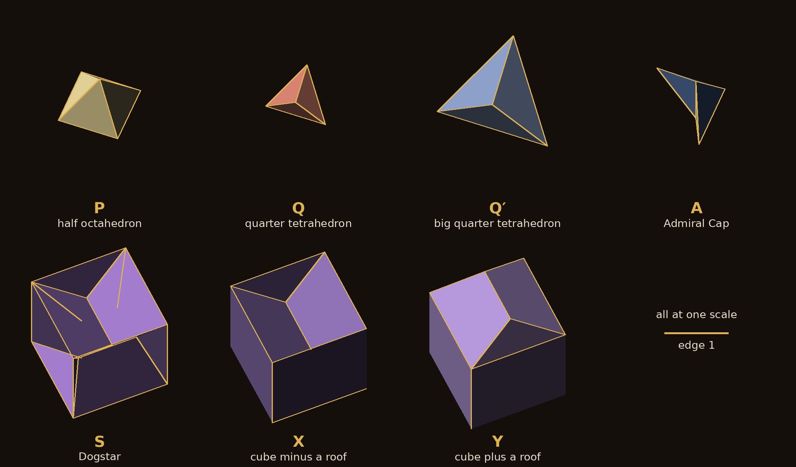
Figure 1.2. The seven connectors, all at one scale (bar: edge 1). P, half an octahedron; Q, a quarter of a tetrahedron (a face joined to the centre); Q′, the same at size φ²/√2; A, one of DICTO's Admiral Caps (four small triangles of the large octahedron's faces and two faces of the icosahedron inside it); S, the Dogstar, a cube of edge φ with Euclid's roof pressed into each face; X, the cube with one roof pressed in; Y, the cube with one roof added. Each drawn from its own faces; the volumes agree with Table 1.
2. Proof
The idea is a layer cake. Each solid has its own way of filling space; we make each of those into a layer with flat top and bottom, then stack the layers you need.
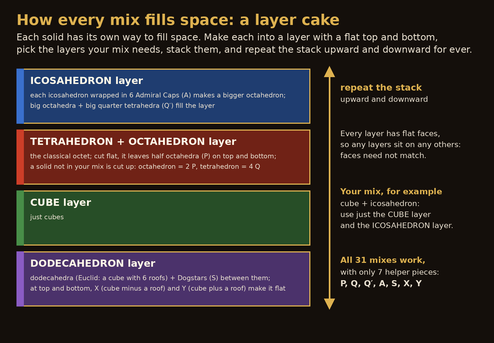
Figure 1.3. The proof in one picture: each solid's world becomes a layer with flat faces; a mix uses the layers it needs, stacked and repeated.
Lemma 1 (stacking). If slabs between parallel planes are each tiled (each slab turned so that its planes are horizontal), the slabs stacked in any order, and the stack repeated by translation across the planes, tile space.
Proof. Slabs with the same normal and adjacent faces on a common plane have disjoint interiors and their union is a thicker slab; repeating it by the translation of its thickness covers space. No face-to-face condition is needed across a plane. ∎
So it is enough to give, for each solid, a slab that contains it and otherwise only connectors from K.
The cube's layer is just cubes.
Lemma 2 (cube slab). Edge-1 cubes tile any slab of integer thickness between planes parallel to a face. ∎
The tetrahedron and the octahedron share the classical octet. Cut flat, it leaves half octahedra on its faces; a solid that is not in the mix is cut into connector pieces.
Lemma 3 (octet slab). Let s = 1/√2. The octet of edge 1 has its corners at the points s(x, y, z) with x + y + z even, an octahedron centred at every point with x + y + z odd and a tetrahedron on the four even corners of every cube of side s [1]. For every integer k the plane z = ks is tiled exactly by the square equators (edge 1) of the octahedra centred in it. Hence for integers k < m the slab ks ≤ z ≤ ms is tiled by the whole tetrahedra and octahedra between, and by half octahedra P on its two faces. If O is not in the mix, each octahedron is cut into two P; if T is not, each tetrahedron into its four face pyramids Q.
Proof. The octahedra centred in the plane z = ks are those at s(x, y, k) with x + y + k odd; their equators are the squares |X − sx| + |Y − sy| ≤ s, centred on one colour of a checkerboard of spacing s, and these squares tile the plane. An octahedron centred at height js spans (j − 1)s ≤ z ≤ (j + 1)s, and a tetrahedron in a small cube spans js ≤ z ≤ (j + 1)s, so every tile not centred in a face plane lies entirely between two consecutive planes z = js. ∎
The icosahedron fits exactly inside a larger octahedron, Pacioli's figure, and DICTO's six Admiral Caps fill the rest. These large octahedra make their own, larger octet.
Lemma 4 (icosahedron slab). Let L = φ²/√2. The icosahedron of edge 1 with corners ½(0, ±1, ±φ) and their cyclic permutations lies in the regular octahedron |x| + |y| + |z| ≤ φ²/2, of edge L, with its twelve corners on the octahedron's edges, dividing each in the golden ratio [7]; the rest of the octahedron consists of the six Admiral Caps A. In the octet of edge L, with octahedron = icosahedron + six A and tetrahedron = four Q′, the slab between two (111) layer planes is tiled by whole pieces.
Proof. Each corner ½(0, ±1, ±φ) has |x| + |y| + |z| = ½(1 + φ) = φ²/2, so it is on the octahedron's surface, and on the edge between two of its corners; the icosahedron, the convex hull of its corners, lies inside. The octet is a union of layers between consecutive planes parallel to a face of its tetrahedra [1], each layer made of whole tetrahedra and octahedra. ∎
The dodecahedron is Euclid's cube with a roof on each face. Dodecahedra on alternate cubes, with Dogstars in between, fill space. At a flat edge the roofs stick out, so two new pieces finish it off: X, a cube with the roof that pokes in taken out, and Y, a cube with a roof added.
Lemma 5 (dodecahedron slab). In the cubic lattice of edge φ, take three layers of cubes. In the middle layer put a dodecahedron of edge 1 (the cube with Euclid's six roofs [6]) on every other cube and a Dogstar S in the rest. In the two outer layers, put X next to a dodecahedron (the cube minus the roof that pokes into it) and Y next to a Dogstar (the cube plus the roof that pokes into the Dogstar). This tiles the slab of thickness 3φ, and its faces are flat.
Proof. A roof has its base on a face of its cube and height ½ < φ, so it lies inside the cube across that face. Dodecahedra on alternate cubes, with the Dogstars as what is left of the other cubes, tile space (Hart [4]; exact in #42 [5]). In the slab, the middle-layer cubes keep that arrangement; a Dogstar's top and bottom roofs, which in the full tiling belong to dodecahedra above and below, are here the roofs of the Y pieces, so every Dogstar is a whole S. An outer cube next to a dodecahedron loses exactly the roof that pokes in (X); one next to a Dogstar gains exactly the roof that pokes into the Dogstar (Y). Roofs lie on inner faces only, so the outer faces of the slab are flat squares. ∎
Proof of the main theorem. Given a mix M, take one slab for each world that M needs: the dodecahedron slab if D ∈ M; a cube slab if C ∈ M; an octet slab if T or O is in M, with the solids not in M cut into P or Q; the icosahedron slab if I ∈ M. Stack them (Lemma 1). Every solid of M occurs, and the only edge-1 Platonic solids that occur as tiles are those of M (where two half octahedra P meet base to base across a slab face their union is an octahedron, but they are two tiles, as the definition counts them), since the solids not in M are cut into connectors and the large octet's pieces have edge L. The connectors used are all in K. ∎
Verification (numerical spot check). mixes3.py builds the stack for each of the 31 mixes and tests 40 000 random points through the whole stack, writing each piece as a signed sum of convex parts (Dogstar = cube − 6 roofs, X = cube − roof, Y = cube + roof, octahedron of edge L = icosahedron + caps): every point is covered with total exactly 1, no two dodecahedra overlap, and each mix uses exactly its own solids (log mixes3.log; steps 1 and 2 in mixes.py and mixes2.py). volumes.py checks the volumes of Table 1.
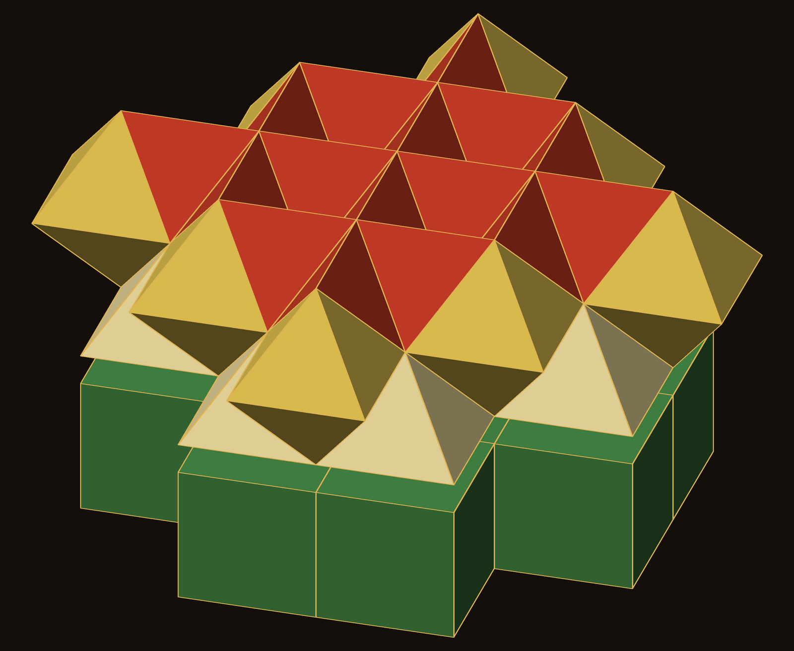
Figure 1.4. A seam of Lemma 3 met by Lemma 2: cubes (green) below; on their top squares the half octahedra P (pale gold) of the octet's bottom face; above, tetrahedra (red) and octahedra (yellow). The octet is lifted slightly to show the seam.
3. Corollaries
Some mixes need helpers and some do not, and the five solids together need six of the seven.
Corollary 1 (who needs a connector). The cube fills space alone, and so do the tetrahedron and the octahedron together (the octet). Every mix containing D or I, and the mixes T, O, C + T and C + O, need a connector: in a tiling by these solids alone, the counting map of #44 [2] gives a contradiction at an edge (the map exists because π, α, θD and θI are linearly independent over the rationals, Lemma 2 of [2]) (h(θD) = 1 or h(θI) = 1 for D and I; h(α) = 1, where the tetrahedron's edges carry +1, the octahedron's −1 and the cube's 0, for the other four). For one or two solids this is already known: Gabbrielli, Jiao and Torquato show from the dihedral angles that, apart from cubes, the only pair of Platonic solids that tiles space is the tetrahedron with the octahedron, with faces matching or not [9]; the counting map gives a second proof and also covers the mixes of three or more solids with D or I. Whether cubes, tetrahedra and octahedra fill space together without connectors is open; our stack uses P at the seam.
Corollary 2 (all five). All five Platonic solids of edge 1 fill space together with the six connectors P, Q′, A, S, X and Y.
Corollary 3 (equal volumes). The six Admiral Caps of one icosahedron and one Dogstar have the same volume, φ/2: the octahedron of edge L has volume φ⁶/6 = (8φ + 5)/6 and the icosahedron 5φ²/6 = (5φ + 5)/6, while the Dogstar, the cube φ³ = 2φ + 1 minus six roofs, has volume 2φ³ − (2 + 7φ/2), twice the cube minus the dodecahedron. (We note the coincidence; we do not know a reason for it.)
4. Conjectures and open questions
We state no conjecture. Open questions: (1) whether C + T + O fills space without connectors (Corollary 1); (2) the smallest kit that serves all 31 mixes (seven connectors suffice; Corollary 1 shows that at least one is needed); (3) the same with tiles meeting face to face; (4) whether every mix fills space by a tiling periodic in three independent directions (ours are periodic across the slabs and along each slab, but the slabs' periods along the planes, built on 1, φ and φ²/√2, need not match).
5. DICTO's ideas, and other bridges
Possible bridges: pieces like DICTO's RVCMG adaptors, which already join hexagons, scutoid-like forms with different polygons at the two ends, and a truncated tetrahedron with roofs. The flat slabs made these unnecessary for the theorem, but they matter for the face-to-face question (3). Two classical fillings agree with his truncated tetrahedron idea: tetrahedra and truncated tetrahedra fill space, and so do octahedra and cuboctahedra, all of edge 1 (the uniform honeycombs; prior art). DICTO also raises a different question, outside this chapter: solids placed in any arrangement, randomly packed rather than stacked, need not fill space, but can they always be joined to one another? That is a question of connection rather than tiling, which his adaptor pieces are designed to answer.
6. Conclusion
Any choice of Platonic solids can now be packed solid, and the helpers come from the solids themselves and from DICTO's earlier pieces.
Every mix of the five Platonic solids of edge 1 fills space with connectors from one kit of seven: two are halves and quarters of the solids themselves (P, Q), one is the same quarter at another size (Q′), and four come from the golden solids, DICTO's Admiral Caps for the icosahedron and, for the dodecahedron, the Dogstar and Euclid's cube with a roof taken away or added. The proof is a stack of flat slabs, so the answer is as simple as it is general; how small the kit can be, and what changes when faces must match, are left open.
7. Prior art, and the status of each result
Known, credited: the octet of tetrahedra and octahedra (Maurolico; Lagarias and Zong [1]); Pacioli's icosahedron in the octahedron [7]; Euclid's dodecahedron from the cube and six roofs [6]; the tiling by dodecahedra and Dogstars (Hart [4]); that the cube is the only Platonic solid that tiles space alone [8]; that, apart from cubes, the tetrahedron with the octahedron is the only pair of Platonic solids that tiles space (Gabbrielli, Jiao and Torquato [9], who extend the tetrahedron–octahedron tilings of Conway, Jiao and Torquato [10]); the uniform honeycombs of §5. The question of how the regular solids fit together in space goes back to Kepler's Harmonices mundi, Book II [11].
DICTO's earlier work, cited: the face pyramids and the counting map (#44 [2]); the Admiral Caps and the icosahedral octet (F21 [3]); the exact Sunstar Lattice of dodecahedra and Dogstars (#42 [5]).
Proved here: the main theorem with Lemmas 1–5, and Corollaries 1–3.
Checked by computer: all 31 stacks (random points, signed convex parts) and the volumes of Table 1.
In the full text of the reference library's local sources (DICTOR-Master/kaleidohedra-references, commit d73a679; listed in the Appendix under Chapter 1), searched on 22 October 2026, and in web searches on 22 October 2026 for tilings of space by all five Platonic solids, by mixtures of Platonic solids with extra pieces, and by dodecahedra or icosahedra with other polyhedra, we found no construction that fills space with every mix of the Platonic solids. The closest are the classical fillings above, Gabbrielli, Jiao and Torquato's classification of pairs [9] and Torquato and Jiao's remark that only the cube tiles alone [8].
Appendix A. The connectors of each mix
The connectors used by the stack of the proof, mix by mix (mixes3.log). A mix of one solid also fills space without slab faces: the tetrahedron with P, the octahedron with Q, the dodecahedron with S, the icosahedron with A and Q′.
Chapter 2. One Move Each: Classical Cut-and-Glue Space-Fillers Built Exactly
From paper #50 (version 1), DICTO DOI 10.5281/zenodo.23606894
Theorem: the regular-hexagon elongated dodecahedron, the Bain rhombic dodecahedron, the elongated dodecahedron as a type, the Bilinski dodecahedron and the 60° rhombohedron, known from cutting, gluing, zone removal or drawings, each come from one setting of Kaleidohedra's lattice moves, with exact corners, volumes and symmetry
Books describe several classical solids that fill space by how to make them from other solids: shave a belt off one, stick two pyramids onto another, glue a few slanted bricks together. Kaleidohedra makes the same solids in one go, by tilting and stretching a lattice of points, and so gives every corner and every volume exactly. The moves themselves are Fedorov's (1885); what this chapter adds is the exact data, the settings and the proofs. Main theorem. Five space-fillers that the literature gives by cutting, gluing, zone removal or a drawing are each obtained exactly by one setting of Kaleidohedra's three moves: a shear of the lattice, the equal-edged cell (Cell = 1) and a stretch along a free direction. With edge 1: the regular-hexagon elongated dodecahedron, volume 4√2, symmetry D2h; the Bain rhombic dodecahedron, 2√2, D4h; the classical elongated dodecahedron, 8/3 + 16√3/9, D4h; the Bilinski dodecahedron, (4/5)√(5 + 2√5), D2h, from the face-centred cubic lattice with one lattice angle moved from 60° to 36° and then Cell = 1; and the 60° rhombohedron, 1/√2, D3d. Each solid tiles space by translation and is congruent, corner by corner, to its classical construction. Theorem 2 shows that every rhombic-dodecahedron-type cell has exactly three free directions, so the elongated dodecahedron is a type with three stretches per cell; on DICTO's skewed lattice two of them are the golden skewed elongated dodecahedra of F7. The Bilinski dodecahedron is glued exactly from two acute and two obtuse golden rhombohedra, and DICTO's skewed rhombic dodecahedron (F1) is a linear image of it (a remark).
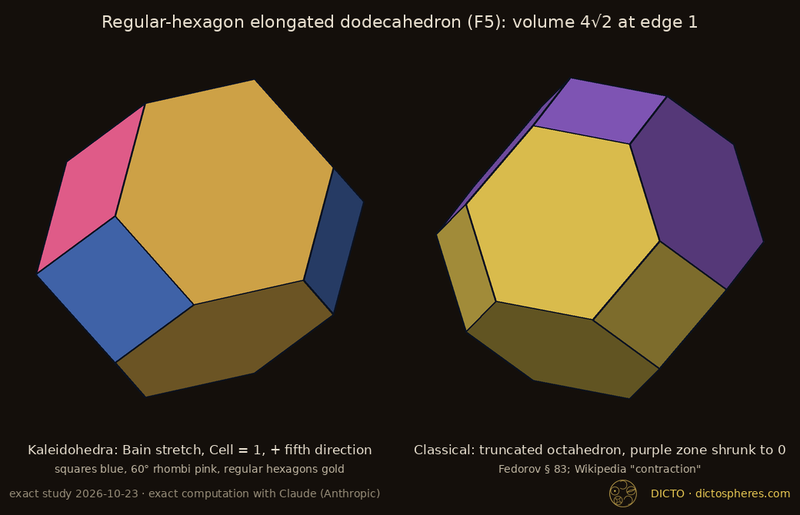
Figure 2.1. The regular-hexagon elongated dodecahedron (F5), edge 1, volume 4√2. Left: the Kaleidohedra cell (Bain shear, Cell = 1, stretch along (1, 0, 0) by 1); squares blue, 60° rhombi pink, regular hexagons gold. Right: the classical description, the uniform truncated octahedron with one of its six zones (purple) shrunk to nothing (Fedorov's zone shrinking [1, § 83]). The two are congruent (corner matching, exact).
1. Where it started
DICTO noticed that solids the books build by cutting and gluing appear in his app whole, at one setting of its sliders. He proposed that the app could rebuild them all exactly.
The regular-hexagon elongated dodecahedron has four regular hexagons, four squares and four 60° rhombi. Grünbaum draws it as the representative of Fedorov's elongated dodecahedron [2, Fig. 2.2(b), p. 4]; Wikipedia describes it as a contraction of the uniform truncated octahedron [10]. DICTO reached it on 1 October 2026 by another road, in Kaleidohedra: the equal-edged cell at the Bain stop of the lattice, stretched along one more direction (F5 [13]). From these "perfect hexagons" came DICTO's idea, on 22 October 2026, that the same three moves rebuild exactly the space-fillers which the literature gives only as a recipe of cutting and gluing, and that the paper should give for each the exact corners, the exact settings and a proof. A search of the reference library (the Appendix under Chapter 2) chose the cases: shapes that the library describes only by dissection, zone removal or a drawing, and that Kaleidohedra reaches.
The descriptions we start from were precise by the standards of their time, and they are fully credited here. In particular the moves are not new: Fedorov wrote in 1885 that by shears and stretches the cube becomes any parallelepiped (his Theorem 32), and that a parallelohedron so changed stays a parallelohedron [1, p. 239], and he shrank the edges of one zone to nothing to pass from the truncated octahedron to the elongated dodecahedron, and on to the hexagonal prism or the rhombic dodecahedron [1, § 83, p. 234] (both pages checked on the page images). The stretch is the addition of a segment (a Minkowski sum), in Delone's language a free direction [4, Def. 2.13]. This chapter complements those descriptions; it does not correct them.
2. The three moves
Kaleidohedra works with a lattice, a regular grid of points, and a solid around each point. You can tilt the grid (shear), pick the one solid whose edges are all equal (Cell = 1), and stretch the solid along one more direction.
A parallelohedron is a convex solid whose translates by the vectors of a lattice L tile space. The rhombic dodecahedron (RD) type is the zonohedron Z(h1, …, h4) = {Σ tihi : |ti| ≤ ½} of four vectors, no three in a plane; it tiles space by the lattice spanned by the differences hi − hj (Fedorov's ordinary hexaparallelohedron [1]). Its four vectors satisfy one linear relation Σ μihi = 0; changing the signs of some hi (which does not change Z) makes every μi > 0. We call (μ1, …, μ4), up to a common factor, the dependency of the cell. Kaleidohedra's moves on the face-centred cubic (FCC) lattice, whose cell is Kepler's rhombic dodecahedron with hi = ½(±1, ±1, ±1) (an even number of minus signs) and dependency (1, 1, 1, 1), are:
Shear. A linear map A of the lattice, set in the app by six sliders: the lengths a, b, c of a lattice basis and the angles α, β, γ between its vectors. It carries the cell to Z(Ah1, …, Ah4), which tiles the sheared lattice AL.
Cell. In the sheared lattice the four vectors may be shifted together, hi ↦ Ahi + w, without changing the differences, so every such cell tiles AL. Exactly one w gives four edges of equal length, the circumcentre of the points −Ahi; the slider value Cell = 1 is that cell, Cell = 0 the sheared original (F2 [13]).
Stretch. Add a fifth vector s·u, the Minkowski sum with a segment of length s along a unit direction u. Theorem 2 says which directions keep a space-filler.
Lemma 1 (tiling test). A centrally symmetric convex solid P tiles space by translations of a lattice L if its volume equals |det L| and no non-zero vector of L lies inside P − P = 2P. Proof. The second condition says the translates P + v, v ∈ L, have disjoint interiors; with volume |det L| they fill a fundamental domain's volume exactly, so they leave no gap. ∎ The study checks both conditions exactly for every solid of this chapter, and in addition that each of the solid's face neighbours is a lattice translate.
3. The main theorem
Five solids that the books build from pieces each come out of the app at one setting of its moves. The table says which setting, and what you get.
Main theorem. Each solid in Table 1 is obtained exactly by the Kaleidohedra move in its row: the shear, then the equal-edged cell (where stated), then the stretch (where stated). It tiles space by translations of the moved lattice, its corners lie in the stated number field, and it is congruent, by an exact corner-matching test, to the classical construction in the last column. Its faces, symmetry and volume are as stated (all at edge 1, except where the edge is given).
rhombic dodecahedron cut at its equator, the halves capping a square prism [10]
Bilinski dodecahedron
FCC sliders with only γ moved from 60° to 36° (a = b = c, α = β = 60°, cos γ = φ/2); Cell = 1
12 golden rhombi; D2h
(4/5)√(5 + 2√5) ≈ 2.4621
triacontahedron with two zones deleted [2, pp. 5–6, Fig. 2.4]; glued from golden rhombohedra [8]
60° rhombohedron
cube lattice sheared so that its edges meet at 60° (a = b = c, α = β = γ = 60°)
6 rhombi of 60°; D3d
1/√2 ≈ 0.7071
tetrahedron + octahedron + tetrahedron (Maurolico, 16th century [7, p. 1542])
Table 1. The five cases. φ = (1 + √5)/2. Corners in ℚ(√2) for the Bain cases and the 60° rhombohedron, ℚ(√3) for the classical elongated dodecahedron, ℚ(√5) for the Bilinski dodecahedron. Lattice angles such as γ are angles between basis vectors of the lattice, not face angles. Exact corners, lattice bases and maps: Appendix A and the study's data files.
Why it is true: each move gives a solid whose corners can be written down exactly. Checking that it fills space, and that it is the same solid as the cut-and-glue one, is then exact arithmetic, done here with square roots kept as square roots.
Proof. For each row the study replays the move from its exact parameters (the shear matrix, Cell, the stretch vector) and obtains the corners of a zonohedron Z with four or five generators; Z is closed, convex, wound outward, and satisfies Euler's formula, and its faces, edges and symmetry group are found from the exact corners. Z tiles space by Lemma 1: its volume equals |det L| for the moved lattice L, and no vector of L lies inside 2Z (all vectors with coefficients up to 2 in the basis are tested; a vector of L inside 2Z would have to be among them, since 2Z lies in that range). Congruence with the classical construction is tested by matching corners: every corner of one solid is paired with a corner of the other so that all distances agree, exactly. Where the classical construction is a gluing, the pieces are checked to be disjoint, to lie inside the solid, and to add up to its volume (cuboctahedron 5√2/3 and two pyramids √2/6; tetrahedra √2/12 and octahedron √2/3; for the elongated dodecahedron, two rhombic dodecahedron halves and a square prism). Where it is a zone operation, the zones of the uniform truncated octahedron (edge directions (0, ±1, ±1)/√2 and their permutations, scaled to edge 1) or of the triacontahedron are deleted and the result matched in the same way. All arithmetic is exact, in ℚ(√2), ℚ(√3) or ℚ(√5); nothing is decided by floating point. The study's check reads the data files alone and passes 223 of 223 checks; six kinds of deliberate corruption (a corner moved, a face reversed, a lattice vector doubled, a shear entry changed, a stored volume changed, a classical point moved) are each caught in every one of the nine solids, 54 of 54; and the app's own code (krp-core), set to the same slider values, gives the same cells, 12 of 12 (Appendix A). ∎
Two further facts come out of the Bain rows. Shrinking the zone of the stretch direction in the regular-hexagon elongated dodecahedron gives back the Bain rhombic dodecahedron, and shrinking any one of the truncated octahedron's six zones gives the regular-hexagon elongated dodecahedron: Fedorov's chain truncated octahedron → elongated dodecahedron → rhombic dodecahedron [1, § 83] read forwards, with exact data, is the stretch read backwards. Shrinking a pair of the truncated octahedron's zones at 60° to each other, instead of a perpendicular pair, gives a hexagonal prism, the other branch of Fedorov's chain.
A perfect point. The regular-hexagon elongated dodecahedron is a perfect point of the moves: at this one setting every face is a regular polygon or, for the 60° rhombi, two equilateral triangles. Such settings form a family of their own, which we leave to a separate catalogue.
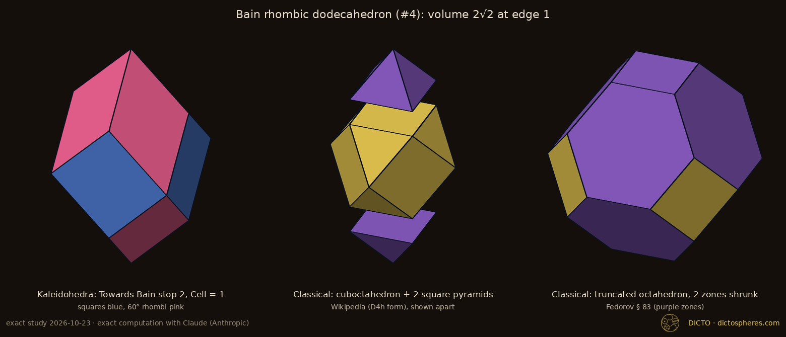
Figure 2.2. The Bain rhombic dodecahedron, edge 1, volume 2√2. Left: the Kaleidohedra cell (Towards Bain stop 2, Cell = 1); squares blue, 60° rhombi pink. Middle: the cuboctahedron (gold) with two square pyramids (purple), shown apart [11]. Right: the truncated octahedron with a perpendicular pair of zones (purple) to be shrunk [1, § 83].
4. The elongated dodecahedron as a type
A rhombic dodecahedron can be stretched into an elongated dodecahedron in exactly three directions, and in no other, if the result is still to fill space. So the elongated dodecahedron is not one shape but three stretches of every rhombic dodecahedron.
Theorem 2 (three free directions). Let Z = Z(h1, …, h4) be an RD-type cell with Σ μihi = 0, all μi > 0, and let u be a direction not parallel to any hi. Then Z + [0, s·u] (s > 0) is a parallelohedron if and only if u is parallel to one of the three vectors uij|kl = μihi + μjhj = −(μkhk + μlhl), one for each way of splitting the four vectors into two pairs; the line of uij|kl is where the plane of hi, hj meets the plane of hk, hl. For each of them, and every s > 0, it is an elongated dodecahedron (18 corners, 28 edges, 12 faces).
Why: a solid fills space by translation exactly when every belt of faces around it has four or six faces. Adding a direction adds faces to the belts, and only these three directions keep every belt at six or fewer.
Proof. A convex solid tiles space by translation if and only if it is centrally symmetric, its faces are centrally symmetric, and its projection along each edge direction (each face of codimension 2) is a parallelogram or a centrally symmetric hexagon (Minkowski and Venkov, independently McMullen; stated in [4, § 2, p. 5]). A zonohedron satisfies the first two. Its belt around a generator g has 2m faces, where m is the number of distinct planes through g spanned by g and another generator; the third condition asks m ≤ 3 for every g. Around hi, the other three h's already span three distinct planes (no three h's lie in a plane), so u must lie in one of them: u ∈ span(hi, hj(i)). Take i = 1 and j(1) = a, and let b, c be the other two indices. Around hb, u ∈ span(hb, hx), and x cannot be 1 or a, for then u would lie in two planes through h1 or through ha, and so be parallel to it. Hence x = c and u lies on the line span(h1, ha) ∩ span(hb, hc), which contains the non-zero vector μ1h1 + μaha = −(μbhb + μchc). Conversely, for u on that line every hi has u in one of its three planes, so its belt keeps 6 faces, and the h's lie in the two planes through u, so the new belt has 4 faces. Five generators with these belts give Fedorov's counts 18, 28, 12 (his elongated hexaparallelohedron [1, § 77, case 3]). ∎ (If u is parallel to some hi, the stretch only lengthens that zone and the cell stays an RD type [2, p. 5].)
The stretch is Delone's free direction [4, Def. 2.13], and the theorem follows directly from the Minkowski–Venkov conditions; we did not find it written out in the sources searched, and expect that it is known to specialists. In Kaleidohedra's terms the elongated dodecahedron has these parameters: the lattice (six sliders), Cell, the pair split ij|kl and the stretch s.
The classical elongated dodecahedron. On the plain FCC lattice (dependency (1, 1, 1, 1)) the three free lines are the three cube axes, and the stretch along (1, 0, 0) by the edge gives the equal-edged elongated dodecahedron of Table 1, congruent to the rhombic dodecahedron cut at its equator with the halves capping a square prism [10] (Figure 2.3). On the Bain lattice two of the three free lines, (1, 0, 0) and (0, 1, 0), give the regular-hexagon elongated dodecahedron; the third, the stretched axis (0, 0, 1), gives a different equal-edged one with 8 rhombi of 60° and 4 hexagons with corners 135°, 135° and 90° (volume 2 + 2√2 at edge 1).
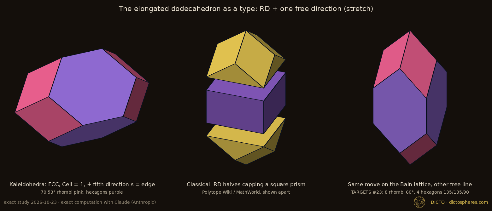
Figure 2.3. The elongated dodecahedron as a type. Left: plain FCC, Cell = 1, stretched along (1, 0, 0) by the edge; rhombi of 70.53° pink, the equal-edged hexagons purple. Middle: the classical construction, two rhombic dodecahedron halves (gold) capping a square prism (purple), shown apart [10]. Right: the same stretch on the Bain lattice along the third free line (0, 0, 1): 8 rhombi of 60° (pink) and 4 hexagons with corners 135°, 135°, 90° (purple).
DICTO's skewed elongated dodecahedra (F7). DICTO's skewed lattice (Towards DICTO FCC, stop 2) has as its equal-edged cell DICTO's skewed rhombic dodecahedron F1 [13]: 6 rhombi of 60° and 6 rhombi of 72°, volume φ², dependency (φ, φ, 1, 1). Its three free lines meet the four edge directions at 60°, 60°, 36°, 36° (split 12|34), at 36°, 36°, 72°, 72° (14|23) and at 37.76°, 37.76°, 82.24°, 82.24° (13|24). The first two lie on two-fold axes of the icosahedron, the directions DICTO's lattice is built from, and the third does not; this is why F7 has exactly two members. With s = 1 they are the two skewed elongated dodecahedra of F7, every edge 1, both of symmetry C2h: on 12|34, 4 rhombi of 60°, 4 rhombi of 72°, 2 hexagons with corners 144°, 144°, 72° and 2 regular hexagons, volume φ² + 2; on 14|23, 6 rhombi of 60°, 2 rhombi of 72° and 4 hexagons with corners 144°, 108°, 108°, volume φ³ + ½. Both tile space (Lemma 1, exact) and agree with the app's stored cells.
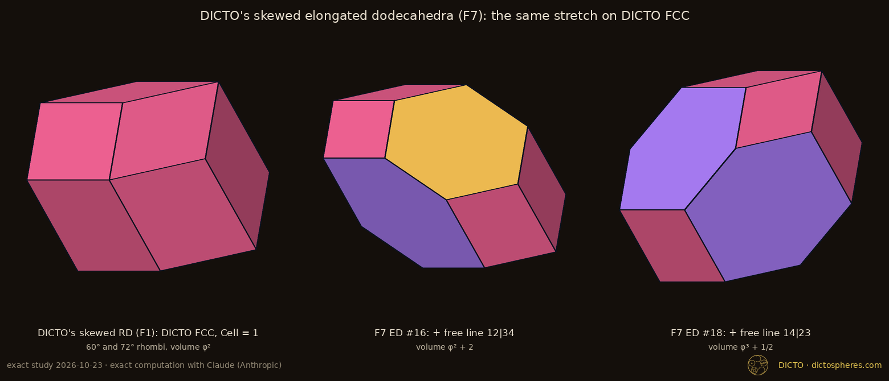
Figure 2.4. Left: DICTO's skewed rhombic dodecahedron (F1), 60° and 72° rhombi (pink), volume φ². Middle and right: the two stretches along free lines that are icosahedral two-fold axes (F7; the labels #16 and #18 are the rows of the Kaleidohedra target list): 12|34, volume φ² + 2, and 14|23, volume φ³ + ½. Rhombi pink, regular hexagons gold, other hexagons purple. Edge 1 throughout.
5. The Bilinski dodecahedron
Bilinski's dodecahedron, found in 1960, is known as what is left when you remove two belts from a 30-faced solid, or as a gluing of slanted bricks. In the app it is the ordinary face-centred cubic lattice with one angle changed, from 60° to 36°, and then the equal-edged cell.
Bilinski found in 1960 that Fedorov's list of convex solids with congruent rhombic faces had missed one, a dodecahedron with twelve golden rhombi [3] (cited here through Grünbaum [2], who describes it and its history; Bilinski's paper was not read). The library describes it three ways, all as operations on other solids: Kepler's triacontahedron T with zones deleted, T → Fedorov's rhombic icosahedron F → B [2, pp. 5–6, Fig. 2.4], in Coxeter's words "removing one of the p zones … and bringing together the two remaining pieces of the surface" (quoted in [9]); and glued from golden rhombohedra, "by gluing appropriate number of rhombohedra", with no number given [8].
Proposition 3. (a) With the FCC sliders a = b = c, α = β = 60° and γ moved from 60° to 36° (cos γ = φ/2), Cell = 1 gives the Bilinski dodecahedron B exactly; its lattice has Gram matrix proportional to [[1, φ/2, ½], [φ/2, 1, ½], [½, ½, 1]]. (b) Cell = 1 is needed: at Cell = 0 the same sliders give a linear image of Kepler's rhombic dodecahedron, which is not B. (c) B is congruent to T with any two of its six zones deleted, for all 15 pairs, and is glued exactly from four golden rhombohedra, two acute and two obtuse, in two ways.
The key fact behind (b): a linear map keeps the relation between the four edge directions. Kepler's dodecahedron has the relation 1 : 1 : 1 : 1, Bilinski's φ : φ : 1 : 1, so no tilt or stretch turns one into the other.
Proof. (a) and (c) are rows of the exact study: B is the zonohedron of four of the six five-fold vectors (0, ±1, φ), (±1, φ, 0), (φ, 0, ±1) (edge √(φ + 2), where its volume is 8 + 4√5 = 4φ³); the move from the sliders, the zone deletions and the gluings are each matched corner by corner, and the four pieces are congruent to Grünbaum's acute and obtuse rhombohedra Ha and Ho, of volume 2φ² and 2φ at that edge, adding to 2·2φ² + 2·2φ = 4φ³. The app reaches the setting directly: its angle slider runs from 20° to 150° in steps of 0.1°, so 36.0° is on its grid (the lengths are shown to the slider's step, the exact values being those above). (b) A linear map sends Z(h1, …, h4) to Z(Ah1, …, Ah4) with the same dependency, and the generators of an RD-type cell are its edge vectors, determined by the solid up to sign; so the dependency, up to a common factor and the order of its entries, is an affine invariant. Kepler's dodecahedron has (1, 1, 1, 1); for B, the four five-fold vectors satisfy φ, φ, 1, 1. The shear keeps (1, 1, 1, 1) at Cell = 0; the Cell move, which shifts all four vectors together, changes it. ∎
Part (b) agrees with Grünbaum, who shows that B is not affinely equivalent to K by parallel face diagonals [2, pp. 6–7], and with his remark that B is affinely a Dirichlet–Voronoi tile of a lattice affine to the FCC lattice [2, pp. 8–9]: in the move, the shear is that affinity, and Cell = 1 is what makes the tile B and not an image of K. For the count in (c): Coxeter gives the triacontahedron as ten acute and ten obtuse golden rhombohedra (quoted in [9], slide 2); for B the sources searched give no number, and the study finds two of each.
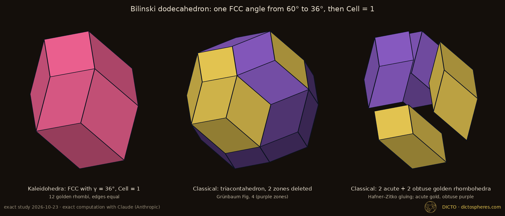
Figure 2.5. The Bilinski dodecahedron. Left: the Kaleidohedra cell, FCC with γ = 36°, Cell = 1: twelve golden rhombi (pink), all edges equal. Middle: Kepler's triacontahedron with two zones (purple) to be deleted [2, Fig. 2.4]. Right: B glued from two acute golden rhombohedra (gold) and two obtuse ones (purple), shown apart.
Remark (DICTO's F1 and Bilinski's dodecahedron). DICTO's skewed rhombic dodecahedron F1 has the same dependency as B, (φ, φ, 1, 1) with matching order. A linear map L sending three of B's edge vectors to the corresponding ones of F1 then sends the fourth too, so F1 is a linear image of B; the study stores L exactly and checks that it carries B's fourteen corners onto F1's. F1 is not congruent to B (its faces are rhombi of 60° and 72°, not golden rhombi), and it is not an affine image of Kepler's dodecahedron. This makes precise the earlier note that Bilinski's dodecahedron is F1's nearest known relative [13]: same affine class, different shape. A search of the full texts of the reference library on 23 October 2026 (every mention of Bilinski or B12 read for affine or linear images, shears, 60° or 72°) found this relation stated nowhere; Lalvani's patents in the library have no text layer and were not searched.
6. Worked example: the 60° rhombohedron
The simplest case shows the whole method in miniature: slant a stack of cubes until its edges meet at 60°, and each cube becomes the rhombohedron that Maurolico made from two tetrahedra and an octahedron.
Maurolico glued two regular tetrahedra to opposite faces of a regular octahedron, "six congruent faces, each a 60°–120° rhombus", which tiles space by the FCC lattice [7, p. 1542, Fig. 2.2]. In Kaleidohedra: shear the cube lattice to a = b = c = 1 and α = β = γ = 60°. The sheared cube lattice is the FCC lattice itself, and the sheared cube is the parallelepiped on the app's FCC basis: corners ½√2·(0, 0, 0) to ½√2·(1, 1, 1) along the vectors (0, 1, 1)/√2, (1, 0, 1)/√2 and (1, 1, 0)/√2, six rhombi of 60°, symmetry D3d, volume 1/√2. It is congruent to Maurolico's gluing, whose pieces add up exactly: √2/12 + √2/3 + √2/12 = √2/2. Here the exact data are easy and standard; the example is given to show the method, not to fill a gap.
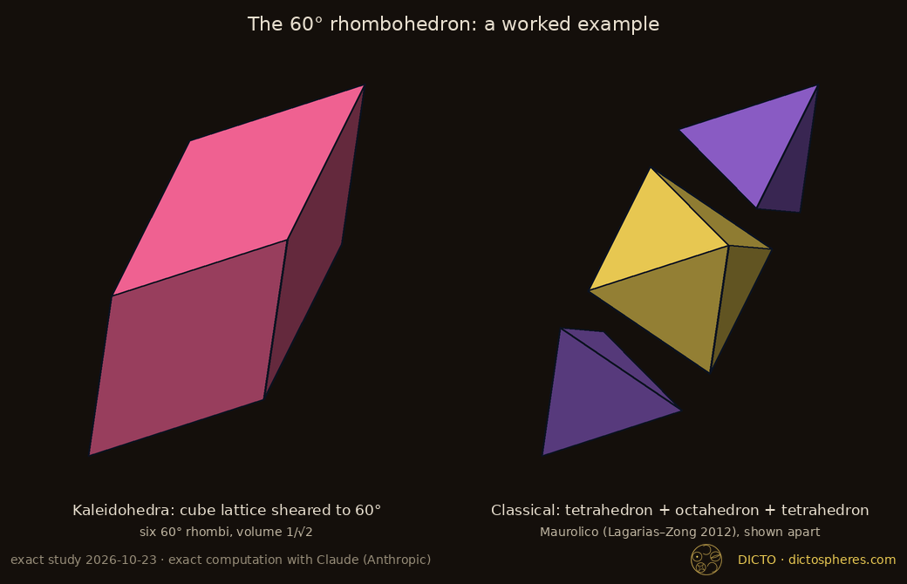
Figure 2.6. The 60° rhombohedron. Left: the cube lattice sheared to 60°, six 60° rhombi (pink), volume 1/√2. Right: Maurolico's construction [7], the octahedron (gold) with two tetrahedra (purple), shown apart.
7. What is known, and the status of each result
The shapes are old and the moves are old; the exact settings, corners and proofs are what is added.
Known, credited: the moves: shear and stretch (Fedorov [1, p. 239]), zone shrinking (Fedorov [1, § 83, p. 234]; zone deletion in Grünbaum [2, p. 5]), free directions (Delone, as stated in [4, Def. 2.13]); the stretch as a Minkowski sum (as in #49 [14]). The shapes: the elongated dodecahedron (Fedorov [1, § 77]); the regular-hexagon elongated dodecahedron (drawn by Grünbaum [2, Fig. 2.2(b)], described by Wikipedia as a contraction of the truncated octahedron [10]; its first describer was not traced); the Bain rhombic dodecahedron (Wikipedia's D4h form, a cuboctahedron with square pyramids [11]; first describer not traced; the lattice stretch is Bain's [12]); the Bilinski dodecahedron (Bilinski [3], via Grünbaum [2]; gluing from rhombohedra: Hafner and Zitko [8]); the 60° rhombohedron and its gluing (Maurolico, via Lagarias and Zong [7]). The rhombic dodecahedron and the truncated octahedron themselves already have exact coordinates in the library (Koca et al. [15, § 3.3]) and are not cases here.
DICTO's earlier work, cited: F1 (DICTO's skewed rhombic dodecahedron), F2 (the equal-edged cell), F5 (DICTO's independent route to the regular-hexagon elongated dodecahedron) and F7 (the skewed elongated dodecahedra) [13]; #49 [14].
Proved here: the main theorem (each case exactly, with the stated settings); Theorem 2; Proposition 3, including the two gluings of B from two acute and two obtuse golden rhombohedra.
Checked by computer, exactly: all corners, volumes, symmetry groups, tilings and congruences (223 checks; 54 of 54 corruptions caught; 12 of 12 app cross-checks).
Remark, not literature-checked beyond the library: F1 is a linear image of B.
Two sources were not read: Bilinski's paper [3], which may give coordinates or a volume for B (none is compared here), and the first description of the Bain rhombic dodecahedron. The library search (the Appendix under Chapter 2) is limited to the library's local full texts; link-only entries, such as Delone [5] and McMullen [6], are cited through the sources that quote them.
8. Conclusion
Shapes that the books make by cutting and gluing come out of one lattice, whole and exact, by a tilt, the equal-edged choice and a stretch.
Five classical space-fillers, each known from a recipe of cutting, gluing, zone removal or a drawing, are each one setting of Kaleidohedra's moves, with exact corners in ℚ(√2), ℚ(√3) or ℚ(√5), exact volumes, symmetry groups and proofs that they tile. The moves are Fedorov's; the settings make his transitions concrete: the stretch read backwards is his zone shrinking, and the Bilinski dodecahedron, which Fedorov missed, is his face-centred cubic lattice with one angle at 36° and the equal-edged cell. The elongated dodecahedron is a type with exactly three stretches per rhombic dodecahedron.
Still to do: list every setting where all faces are regular, and look for other space-fillers that are known only as recipes.
Open questions. (1) The catalogue of perfect points, the settings at which every face is regular, of which the regular-hexagon elongated dodecahedron is one; left to a separate paper. (2) Which other space-fillers known only by dissection (for example the tetrahedra of Hill, Sommerville and Goldberg, not read here) are reached by Kaleidohedra's moves.
Appendix A. Exact data
Edge 1 unless stated. Corners are the zonohedron of the edge vectors listed (all sums ½(±v1 ± v2 ± …), centred at the origin); the full corner lists, faces and lattice bases are in the data files named, in exact and decimal form.
The same data in machine-readable form, with the shear matrices, the Cell shift, the classical constructions and every check, are in the attached study; check.py re-runs all checks from these files alone.
Part II. The bonds
Chapters 3 and 4
Chapter 3. The Golden Split: Icosahedra, Unborns and AXE Become Two Convex Space-Fillers
From paper #48 (version 1), DICTO DOI 10.5281/zenodo.23596362
Theorem: in the simple cubic lattice of icosahedra, cutting every AXE from the point 1/φ of the way along its axis, and giving each of its four pyramids to the neighbour it touches, turns the icosahedra and the Unborns into two convex truncated octahedra, the Icosaxes and the Unborn Axes, which fill space; this is the only cut point at which both are convex, and in the Lotus Jewel network the same cut gives a keyed pair, the Lotus Jewel Axes and the Dodecaxes, of volumes √5 and 2
Icosahedra cannot fill space on their own. Set them in a cubic grid, edge to edge, and two kinds of gap are left: a squeezed icosahedron (the Unborn) in the middle of each cube, and thin tetrahedra (the AXE) in the faces between them, six per cube. The AXE is the awkward one: wherever it is glued, it sticks out. We cut each AXE into four little pyramids from one inner point and hand each pyramid to the piece it touches. At exactly one point, 1/φ of the way along the AXE's axis, the golden point, nothing sticks out any more: the icosahedra and the Unborns both become truncated octahedra, relatives of Kelvin's foam cell, and these two fill space with no gap. Main theorem. In the simple cubic lattice of regular icosahedra of edge 1 and spacing φ, cone every AXE (the gap tetrahedron, tile t6 of [3] scaled by 1/τ) from the point 1/φ of the way from the midpoint of its long edge to the midpoint of its short edge, and give each of the four pyramids to the piece whose face it lies on. Then the icosahedron with its 12 pyramids, the Icosaxes, and the Unborn with its 12, the Unborn Axes, are convex truncated octahedra with full octahedral symmetry, the same equiangular hexagon (sides alternately 1/√2 and 1/(φ√2)) and squares of side 1/√2 and 1/(φ√2); their volumes are 1 + 2√5/3 and 1 + √5/3, and they fill space face to face, Icosaxes at the lattice points and Unborn Axes at the cube centres. Theorem 2: for any cut points whatever, inside the AXEs, both padded pieces are convex only if every AXE is cut at its golden point. Theorem 3: in the Lotus Jewel network the same cut gives the Lotus Jewel Axes (8 dents, volume √5) and the Dodecaxes (8 keys, volume 2), and every way of giving each key to one side or the other still fills space. Theorem 4 (factor x): the pair belongs to a one-parameter family of mixed space-fillers, the semi-uniform truncated octahedra T(x) and T(1/x) (Koca’s orbit [1, eq. 49]) at the corners and centres of a cubic lattice, from Kelvin’s cell (x = 1) to the golden pair (x = τ). All results are exact. The two smooth shapes are known: they are Koca et al.'s non-regular truncated octahedra x = τ and x = 1/τ [1] (the semi-uniform truncated octahedron [4]); what is new, in the sources we checked, is the route from the icosahedron lattice, the golden split and its uniqueness, and the keyed pair.
Figure 3.1. The golden pair. From left: the icosahedron (green) with its 12 AXE pyramids (cyan); the Icosaxes as one solid; the Unborn (orange) with its 12 AXE pyramids; the Unborn Axes as one solid. Each panel is drawn at its own scale. Both are truncated octahedra with full octahedral symmetry.
1. Where it started
DICTO had a network of icosahedra with a gap he could fill exactly, but the filling pieces stuck out wherever they were glued. He proposed pieces with no odd protrusions, made by cuts "hemispherical, or anywhere in between".
The search behind this chapter began with mixtures of the Platonic solids. In Every Mix of the Platonic Solids Fills Space (paper #47 [9]) the five Platonic solids, in any combination, can be joined into a filling of space, and we proved it for all 31 mixtures, at one edge length, with seven connecting pieces. That reached the aim; but DICTO conjectured that a greater elegance and simplicity was within reach, fewer and cleaner pieces in which the solids themselves do the work, although at that time it was beyond our grasp. This chapter gives an answer to that conjecture for the two Platonic solids with five-fold symmetry: for the icosahedron, whole and convex, and, in the keyed form, for the dodecahedron (here of edge 1/φ, while #47 kept one edge length). In DICTO's view, these solids are the most elegant solution he had imagined: one golden cut, and two convex pieces, one holding a whole regular icosahedron at its core; and in the keyed pair, a piece holding a whole regular dodecahedron.
On 10 October 2026 DICTO built the icosahedral octet and its Lotus Jewel, the "clawed" icosahedron (Kaleidohedra DISCOVERIES F21). On 23 October he conjectured that the Lotus Jewel network fills space, and proposed finding the piece that fills its gap; the answer was the AXE, exactly six per cubic cell, and with it three exact fillings of the simple cubic icosahedron lattice (the AXE gap study [8]): icosahedra + Unborns + AXE; Lotus Jewels + dodecahedra + AXE; and Lotus Jewel + Tricap + Unborn + AXE kept apart, with any choice of giving each Tricap to one side or the other. The same day the search turned to "shadow forms", complementary ways of breaking up the same space, to create new pieces. Fusing neighbouring pieces gave chunky shapes, but every fusion with an AXE kept a spike; giving each AXE whole to one icosahedron fills space with only two kinds of piece, but leaves the icosahedron 68% of its hull, a star. DICTO then set the aim, "unit pieces without odd protrusions", and the tool, polar splits "hemispherical really, or anywhere in between". Cutting the AXE itself, from one inner point, gave the result of this chapter.
2. The network
Regular icosahedra sit at the corners of a cubic grid, touching their six neighbours along an edge. Between them are two kinds of hole, and both are filled exactly by three pieces.
Let φ = (1 + √5)/2 = τ. Place a regular icosahedron I of edge 1 at every point of the lattice φℤ³, with corners (0, ±½, ±φ/2) and their cyclic permutations; each icosahedron shares one edge with each of its six neighbours along the axes. The cell φ³ = 2 + √5 holds, besides its icosahedron (volume (15 + 5√5)/12):
at the cube centre c = (φ/2, φ/2, φ/2), the Unborn U, with corners c + (±φ/2, ±1/(2φ), 0) and cyclic permutations: 12 corners, 24 edges of length 1 and 6 of length 1/φ, 8 equilateral faces and 12 isosceles faces (1, 1, 1/φ), volume (3 + 7√5)/12. It is the pseudoicosahedron of Koca et al. [1, eq. 39] with x = 1/τ, whose corners, as they note, are the 12 corners of a dodecahedron that are not on its cube; the name is DICTO's.
six AXE, the Mosseri–Sadoc tile t6 in the numbering of [3] (see also [2]), scaled by 1/τ: a tetrahedron with five edges 1 and one edge 1/φ, volume 1/12. Its long edge (the edge of length 1 opposite the short one) is the edge two neighbouring icosahedra share, its short edge (1/φ) an edge two neighbouring Unborns share; of its four faces, the two through the long edge lie on the two icosahedra, the two through the short edge on the two Unborns.
The icosahedron meets the Unborn along the Unborn's 8 equilateral faces. The Unborn is the regular dodecahedron D of edge 1/φ centred at c with its 8 cube corners cut off: each corner of D that reaches into an icosahedron is a Tricap (tile t3 of [3], scaled by 1/τ; volume (3 − √5)/24), the tetrahedron D ∩ I standing on one of the icosahedron's faces that meet the Unborn. Giving the 8 Tricaps to the dodecahedron instead of the icosahedra changes the network: the icosahedron minus its 8 Tricaps is the Lotus Jewel J, volume (1 + 3√5)/4, and the Unborn plus its 8 Tricaps is D, volume (15 + 3√5)/12. Per cell, I + U + 6 AXE = J + D + 6 AXE = φ³ exactly, and both fill space with no gap; so does every assignment of the Tricaps [8].
3. The golden split
Pick one point inside each AXE and cut the AXE into four pyramids, each with one AXE face as its base. Give each pyramid to the piece its base touches. The AXE is gone; the question is only where to put the point.
For an AXE with long edge AB and short edge CD let m1, m2 be their midpoints, and for 0 ≤ t ≤ 1 let p(t) = m1 + t(m2 − m1), a point of the AXE's axis (the line through m1 and m2 is its two-fold axis). The split at t replaces the AXE by the four pyramids with apex p(t) over its faces; the two over ABC and ABD join the icosahedra those faces lie on, the two over CDA and CDB the Unborns. Every icosahedron touches 12 AXE faces and every Unborn 12, so each gains 12 pyramids; the pieces still fill space, since only the owner of each part of each AXE has changed. Write I(t) and U(t) for the padded pieces. The golden split is t = 1/φ.
Main theorem (the golden split). At t = 1/φ:
(a) the Icosaxes I(1/φ) is convex: it is the truncated octahedron with corners all permutations of (±½, ±φ/2, 0), with 8 hexagons and 6 squares;
(b) the Unborn Axes U(1/φ) is convex: it is the truncated octahedron with corners c + all permutations of (±1/(2φ), ±φ/2, 0), with 8 hexagons and 6 squares;
(c) both have full octahedral symmetry; all 16 hexagons are congruent, equiangular (120°), with sides alternately 1/√2 and 1/(φ√2); the squares of the Icosaxes have side 1/√2, those of the Unborn Axes 1/(φ√2);
(d) their volumes are 1 + 2√5/3 and 1 + √5/3, together φ³;
(e) the 12 apices of the Icosaxes are the corners of the mirror image of its icosahedron in the plane x = y through its centre, and the 12 apices of the Unborn Axes those of the mirror image of its Unborn in the plane x = y through c;
(f) Icosaxes at the points of φℤ³ and Unborn Axes at the cube centres fill space face to face: Icosaxes meet Icosaxes on their squares, Unborn Axes meet Unborn Axes on theirs, and the two meet each other on the hexagons.
Why it is true: every corner of every piece is a sum of halves and golden numbers, so everything can be checked with exact arithmetic. Convexity is checked by comparing two volumes: the pieces glued together, and the smallest convex solid around them.
Proof. All coordinates lie in ℚ(√5), and the study's check [8a] works in that field with no floating point. (a), (b): the padded piece is the union of the core and its 12 pyramids, which have disjoint interiors (the AXEs and the cores do, in the filling [8]), so its volume is the sum of their volumes, exact determinants; its convex hull is found exactly (every plane through three of its points with all points on one side), and its volume computed exactly. The two volumes are equal, (15 + 5√5)/12 + 12 pyramids = 1 + 2√5/3 for the Icosaxes and (3 + 7√5)/12 + 12 pyramids = 1 + √5/3 for the Unborn Axes, so the union, a closed set inside its hull with the same volume, is the hull, which is convex. The hull has 24 corners and 14 faces, 8 with six corners and 6 with four, and its corner set is exactly the stated orbit, which is invariant under all permutations and sign changes of the coordinates: hence (c)'s symmetry. The side lengths and the congruence of the hexagons (all 15 distances between their corners) are compared exactly. (d) is the sum above. (e): the 12 apices p(1/φ) are compared, as a set, with the core's corners under (x, y, z) ↦ (y, x, z). (f): the pieces fill space because the split only re-assigns parts of the AXE in a filling [8]; the shared faces are found by comparing corner sets: the hexagon of an Icosaxes towards (1, 1, 1) is, corner for corner, the hexagon of the Unborn Axes at c facing back, and the square of an Icosaxes at x = φ/2 is the square of its neighbour at (φ, 0, 0); the others follow by symmetry. The check passes all its 21 tests; a 500,000-point test of the filling (in floating point, as a second check) finds no point uncovered and none covered twice. ∎
Figure 3.2. The split of one AXE. Left: the AXE. Middle: cut from the point p(1/φ) of its axis into four pyramids. Right: pulled apart: the two pyramids on its icosahedron faces (green) go to the icosahedra, the two on its Unborn faces (brown) to the Unborns.
4. Only the golden point
Move the cutting point a little towards the Unborns and the padded icosahedron grows a ridge; move it the other way and the padded Unborn does. Only at the golden point are both smooth, wherever else in the AXE the point might be tried.
Theorem 2 (uniqueness). Cut each AXE from any point p inside it, possibly different for different AXEs, and give its four pyramids to their neighbours as before. If the padded icosahedra and the padded Unborns are all convex, then every AXE is cut at its golden point p(1/φ). In particular, for cut points p(t) on the axis (0 ≤ t ≤ 1) the padded icosahedron I(t) is not convex for t > 1/φ and the padded Unborn U(t) is not convex for t < 1/φ.
Why: where an icosahedron meets an Unborn, their shared face gets no pyramid, so it stays on the outside of both pieces. A convex piece cannot have anything poking out past one of its own faces, so the cutting point must stay on the icosahedron's side of that face and also on the Unborn's side: it must lie exactly in it. Each AXE touches four such faces, and they meet in just one point, the golden point.
Proof. An AXE's four pyramids go to two icosahedra I0, I1 and two Unborns U0, U1, and all four have the same apex p. Each pair Ii, Uj shares a face (one of the icosahedron's 8 faces that meet Unborns), which carries no pyramid and so stays on the boundary of both padded pieces. If the padded Ii is convex, p lies on its side of that face's plane; if the padded Uj is convex, on the other side; so p lies on the plane. For the AXE with corners (∓½, φ/2, 0), (0, φ/2 ± 1/(2φ), φ/2) the four planes are x + y + z = φ²/2, −x + y + z = φ²/2, x − y + z = −1/(2φ) and −x − y + z = −1/(2φ); they have rank 3 and meet in the single point (0, φ/2, ½) = p(1/φ) (checked exactly in [8a]; by symmetry the same holds for every AXE). For the second statement: the icosahedron's 8 faces that meet Unborns stay on the boundary of I(t), so if I(t) were convex, every apex would lie on the inner side of their planes. The apex p(t) moves linearly in t, so its signed distance from each such plane is d0 + t·d1 with exact d0, d1. For 24 pairs (apex, face) this distance is zero exactly at t = 1/φ, with d1 > 0: for t > 1/φ those apices are outside, and I(t) is not convex. The same holds for the Unborn's 8 equilateral faces, which carry no pyramid, with d1 < 0: U(t) is not convex for t < 1/φ. With the Main theorem, both are convex at t = 1/φ. ∎ (In floating point, at every sampled t, I(t) is convex for t ≤ 1/φ and U(t) for t ≥ 1/φ, Table 1.)
t
0
0.2
0.4
0.6
1/φ
0.7
0.8
1
padded icosahedron I(t): fill of hull
100%
100%
100%
100%
100%
93.6%
86.9%
76.0%
padded Unborn U(t): fill of hull
58.2%
67.6%
79.8%
97.9%
100%
100%
100%
100%
Table 1. How much of its convex hull each padded piece fills, as the cutting point moves from the long edge (t = 0: the Unborns take the whole AXE) to the short edge (t = 1). 100% means convex. Floating point (study script axesplit1.py); the exact statement is Theorem 2.
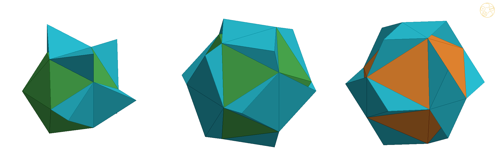
Figure 3.3. What sticks out when the cut is not golden. Left: an icosahedron given six whole AXE (cyan) — the pieces fill space, but each is a star filling only 68.2% of its hull. Middle: the padded icosahedron I(0.85), cut past the golden point: the pyramids (cyan) rise above the icosahedron's free faces (green) in ridges; 83.9% of its hull. Right: the padded Unborn U(0.35), cut short of it: the Unborn's free faces (orange) sink between the pyramids; 76.4% of its hull. At t = 1/φ both are 100% (Figure 3.1).
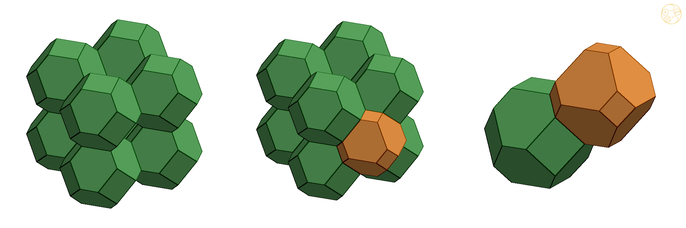
Figure 3.4. The filling. Left: eight Icosaxes (green) around one cubic cell; the Unborn Axes in its middle is hidden. Middle: with two Unborn Axes (orange). Right: an Icosaxes and an Unborn Axes meeting on a hexagon.
5. The keyed pair
In the Lotus Jewel network the eight Tricaps belong to the dodecahedra, not the icosahedra. After the golden split they show up as eight keys on the small piece and eight matching dents in the big one.
Theorem 3 (Lotus Jewel Axes and Dodecaxes). In the Lotus Jewel network, the golden split gives the Lotus Jewel Axes J + 12 pyramids, which is the Icosaxes with its 8 Tricaps removed, and the Dodecaxes D + 12 pyramids, which is the Unborn Axes with 8 Tricaps added. Their volumes are exactly √5 and 2. Each Tricap stands on a hexagon shared by an Icosaxes and an Unborn Axes; for every choice of giving each Tricap to the one or the other, the resulting pieces fill space.
Why: the Tricaps sit on the faces where icosahedron and Unborn meet, and the AXE pyramids sit on other faces, so the two never get in each other's way. Moving a Tricap from one side to the other only moves volume across a shared face, so the pieces still fill space whichever way each Tricap goes.
Proof. The AXE faces lie on faces of I and U that share no area with the Tricaps (each Tricap stands on one of the icosahedron's 8 faces that meet Unborns, which carry no pyramid, and touches an AXE face at most along an edge), so the same 12 pyramids join J and D; on D each pyramid stands on part of a pentagon, which is an isosceles face of the Unborn together with two side faces of Tricaps, all in one plane. The volumes are 1 + 2√5/3 − 8(3 − √5)/24 = √5 and 1 + √5/3 + 8(3 − √5)/24 = 2, checked exactly in [8a]. Each Tricap stands on one of the icosahedron's faces that meet Unborns, which lies in a hexagon of the Main theorem. Every assignment of the Tricaps fills space before the split [8]; the split re-assigns only AXE parts, so it fills space after. ∎
So the whole family of the AXE gap reduces to one golden pair of truncated octahedra in three forms: smooth (Icosaxes and Unborn Axes), keyed (Lotus Jewel Axes and Dodecaxes), or any mixture, hexagon by hexagon, in which each hexagon is flat or keyed one way or the other. Every such piece is convex apart from its keys and dents, which fit into each other like a three-dimensional jigsaw. The patterns of the Mixed blocks world (layers, rods, checker, pyrochlore) [8] carry over unchanged. Each piece has flat, parallel squares top and bottom.
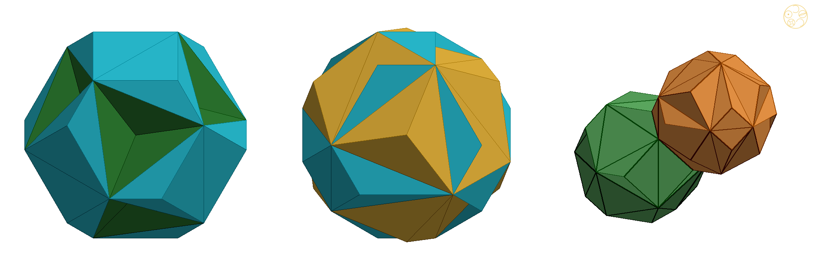
Figure 3.5. The keyed pair, seen along a three-fold axis. Left: the Lotus Jewel Axes (Lotus Jewel green, AXE pyramids cyan), with a Tricap-shaped dent. Middle: the Dodecaxes (dodecahedron gold), with a Tricap key. Right: the two fitted together, key in dent.
6. Factor x: a family of mixed space-fillers
The golden pair is one member of a whole family. Slide one flat cut through every small cube of the lattice and you get a big and a small truncated octahedron that fill space together, for every position of the cut. DICTO calls this position his factor; at the golden value the icosahedron appears inside.
Theorem 4 (factor x). For x > 0 let T(x) be the semi-uniform truncated octahedron [4], written as Koca’s orbit [1, eq. 49]: the convex hull of all permutations of (±(1 + x), ±x, 0), scaled so that its squares lie at distance L/2 from its centre. Then for every x > 0, copies of T(x) at the points of Lℤ³ and copies of T(1/x) at the cube centres (L/2)(1, 1, 1) + Lℤ³ fill space face to face. Their volumes add to L³. At x = 1 both are the uniform truncated octahedron (Kelvin’s cell); at x = τ they are the Icosaxes and the Unborn Axes (L = φ).
Why: cut space into small cubes, half the lattice spacing on a side. Each small cube has a lattice point at one corner and a cube centre at the opposite corner, and one flat cut across its long diagonal shares it between them. The two truncated octahedra are exactly what these shares add up to.
Proof. With scale s = L/(2(1 + x)), T(x) is the intersection of the cube |pi| ≤ L/2 and the octahedron |p1| + |p2| + |p3| ≤ k(x), where k(x) = (1 + 2x)s = L(1 + 2x)/(2(1 + x)); since L/2 < k(x) < L, its corners are where three of these planes meet, the stated orbit. Likewise T(1/x) has k(1/x) = L(x + 2)/(2(x + 1)), and k(x) + k(1/x) = 3L/2. Space is the union of the small cubes of side L/2 with corners in (L/2)ℤ³; each has a lattice point at one end of a long diagonal and a cube centre at the other, and lies in the cube of side L around each of these two and in no other such cube. In the small cube [0, L/2]³ the lattice-point piece is {p1 + p2 + p3 ≤ k(x)} and the centre piece is {(L/2 − p1) + (L/2 − p2) + (L/2 − p3) ≤ k(1/x)} = {p1 + p2 + p3 ≥ 3L/2 − k(1/x) = k(x)}: they share the small cube along one plane, with no gap and no overlap. The same holds in every small cube by symmetry, so the pieces fill space; the plane carries a common hexagon of the two pieces, and the cube faces at distance L/2 carry squares shared with the next piece of the same kind. ∎ (A 300,000-point test agrees for x = 0.3, 0.5, 1/τ, 0.8, 1, 1.25, τ, 2, 3; study script factorx.py.)
So the golden split picks out, in a one-parameter family of mixed space-fillers that are each simple to build, the one member that is also a filling by icosahedra, Unborns and AXE. As a family of weighted Voronoi cells this is not surprising [6]; every T(x) is a pseudoicosahedron and its mirror image [1]; what singles out x = τ (and, with the roles swapped, 1/τ) is that this pseudoicosahedron is the regular icosahedron (Main theorem (e)).
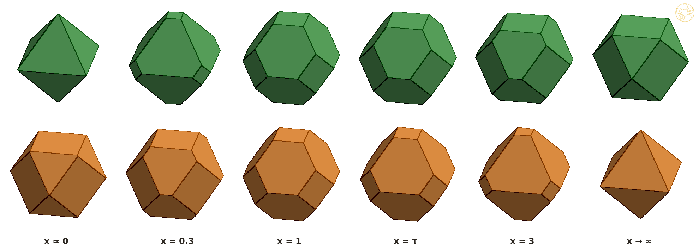
Figure 3.6. Factor x. Top: T(x), at the lattice points; bottom: T(1/x), at the cube centres; each panel at its own scale. From x ≈ 0 (octahedra with cuboctahedra, the classical rectified cubic honeycomb) through x = 1 (Kelvin's truncated octahedron, both alike) and x = τ (the Icosaxes and the Unborn Axes) to x → ∞ (the two exchanged).
Remark (tetrahedron, octahedron, cube). The same approach applies to the tetrahedron, the octahedron and the cube. A first computation (checked exactly, in rational arithmetic, at six values of t; prior work not yet checked) shows the octet, regular tetrahedra and octahedra, inside such a family: cut every double cone from a tetrahedron's centre through a shared face to an octahedron's centre by a plane parallel to the face, a fraction t of the way. At t = 0 the octahedra take everything and are rhombic dodecahedra; for 0 < t < 1/3 small tetrahedra sit between rhombic dodecahedra with their eight three-fold corners cut; t = 1/3 is the octet; for 1/3 < t < 1 small octahedra sit between cubes with four alternate corners cut; at t = 1 the tetrahedra take everything and are cubes. So the octet lies a third of the way along a road of mixed space-fillers from Kepler's rhombic dodecahedron to the cube. A full treatment is left to a later paper.
7. Conclusion
This chapter is about mixed space-fillers: two different solids that cannot fill space alone but do fill it together. A lattice of icosahedra leaves two kinds of hole, and the thin AXE pieces between them always stuck out. Cut each AXE at the golden point and share it out, and everything becomes two clean, convex pieces, the Icosaxes and the Unborn Axes, that fill space together. They belong to a whole family set by one number, DICTO's factor, and the golden ratio is the member that holds the icosahedron. The Lotus Jewel version of the same cut gives a pair that locks together with keys.
It gives an answer, for the icosahedron and, keyed, the dodecahedron, to the conjecture DICTO made after paper #47 [9], that a more elegant and simpler mixed filling was within reach. The golden split answers his two aims at once: unit pieces with no odd protrusions, and a cut "anywhere in between" that is chosen by the geometry itself. Three pieces that cannot fill space alone (icosahedron, Unborn, AXE) become two convex space-fillers with full octahedral symmetry, so icosahedral pieces assemble into a cubic, octahedral whole; the AXE, which the literature uses in aperiodic tilings, here fills a periodic one and then dissolves into it. The keyed forms add a jigsaw on top: every hexagon can be flat or keyed either way, and every such choice fills space; and the factor x turns the pair into a family of mixed space-fillers, from Kelvin’s cell at x = 1 to the golden pair at x = τ. Open questions: the same method for the tetrahedron, octahedron and cube (the octet and its relatives); the golden split in the other AXE networks; the polar splits of the icosahedron and the Unborn themselves; and physical, printed sets of the keyed pieces.
8. What is known, and what is new
The two smooth shapes have been described before, as shapes. What we did not find anywhere is how they arise from the icosahedron lattice, the golden cut that makes them, and the keyed pair.
Known. (i) Koca, Koca, Al-Mukhaini and Al-Qanobi [1, §4.3, eq. 49 in the arXiv numbering] show that the union of a pseudoicosahedron and its mirror image is a non-regular truncated octahedron, the orbit of the octahedral group with Dynkin labels a1(1, x, 0), that is, all permutations and sign changes of (1 + x, x, 0) up to scale; with their pseudoicosahedron ±(1 + x)e1 ± x e2 (cyclic) [1, eq. 39], the Icosaxes is their case x = τ (the regular icosahedron and its mirror image) and the Unborn Axes their case x = 1/τ (the Unborn and its mirror image); Main theorem (e) is this statement for our pieces. (ii) The Polytope Wiki [4] describes the semi-uniform truncated octahedron (8 ditrigons, 6 squares, full octahedral symmetry) and notes that alternating it gives a pyritohedral icosahedron, regular when the ditrigon–ditrigon edge is (√5 − 1)/2 of the square–ditrigon edge: the Icosaxes. (iii) The regular truncated octahedron is the Voronoi cell of the body-centred cubic lattice (Kelvin's cell; the bitruncated cubic honeycomb [5]); unequal truncated octahedra on a body-centred lattice arise as weighted Voronoi (power, Laguerre) cells [6]; since the Icosaxes and the Unborn Axes share their hexagon with the two edge lengths swapped, their filling in (f) may be seen as a member of that family, and we do not claim the bare tiling. (iv) The AXE and the Tricap are Mosseri–Sadoc tiles (scaled by 1/τ); in the sources we checked they are used in aperiodic, icosahedral tilings and in dissections of icosahedral solids [2, 3]. (v) As context only: the icosahedron–Unborn network has space group Pm3̄, like the 1/1 approximant α-(AlMnSi), which has icosahedral clusters at the cube corners and centres [7]; the filling by Icosaxes and Unborn Axes has the full Pm3̄m.
Not found, in the sources listed in the Appendix under Chapter 3: the simple cubic icosahedron lattice filled by icosahedra, Unborns and AXE turned into these two truncated octahedra; the golden split and its uniqueness (Main theorem and Theorem 2), including the apices landing on the mirror images; and the keyed pair with its free keyings (Theorem 3). "Not found" is limited to those sources; it is not a claim that nobody has seen it.
9. In the apps
The Icosaxes, Unborn Axes, Lotus Jewel Axes and Dodecaxes are being added to Polyhedraverse among DICTO's pieces, with a Kaleidohedra world beside the AXE networks in which the keys can be set by pattern or flipped one hexagon at a time, with X-ray showing the cores and the AXE pyramids (https://dictospheres.com).
Appendix A. Data
Piece
Corners (centred)
Faces
Volume
Icosahedron I
(0, ±½, ±φ/2), cyclic
20 triangles
(15 + 5√5)/12 ≈ 2.181695
Unborn U
(±φ/2, ±1/(2φ), 0), cyclic
8 equilateral, 12 isosceles (1, 1, 1/φ)
(3 + 7√5)/12 ≈ 1.554373
AXE (M–S t6)
e.g. (∓½, φ/2, 0), (0, φ/2 ± 1/(2φ), φ/2)
4 triangles; edges five 1, one 1/φ
1/12
Tricap (M–S t3)
I ∩ D
4 triangles
(3 − √5)/24 ≈ 0.031831
Icosaxes
(±½, ±φ/2, 0), all permutations
8 hexagons, 6 squares (side 1/√2)
1 + 2√5/3 ≈ 2.490712
Unborn Axes
(±1/(2φ), ±φ/2, 0), all permutations
8 hexagons, 6 squares (side 1/(φ√2))
1 + √5/3 ≈ 1.745356
Lotus Jewel Axes
Icosaxes minus 8 Tricaps
keyed (8 dents)
√5 ≈ 2.236068
Dodecaxes
Unborn Axes plus 8 Tricaps
keyed (8 keys)
2
Lattice φℤ³, cell volume φ³ = 2 + √5; Icosaxes and Lotus Jewel Axes at lattice points, Unborn Axes and Dodecaxes at the cube centres (φ/2)(1, 1, 1) + φℤ³. Golden split point p = m1 + (1/φ)(m2 − m1).
Chapter 4. The Delian Bond: Samson, Delilah and the Octet Between Kepler's Rhombic Dodecahedron and the Cube
From paper #51 (version 1), DICTO DOI 10.5281/zenodo.23606828
Theorem: one flat cut, slid through every tetrahedron–octahedron pair of the octet, gives a family of pairs of convex solids that fill space, from Kepler's rhombic dodecahedron through the octet to the cube; at one cut the two solids, DICTO's Samson and Delilah, have exactly equal volume, twice the octet's tetrahedron and half its octahedron, and two other cuts make every edge equal
Regular tetrahedra and octahedra fill space together: the octet. Join each tetrahedron's centre to each octahedron's centre through the face they share, and the octet falls into double cones, one per shared face. Cut every double cone by one flat plane parallel to that face, and give each side to its own centre. Slide the cut, and the tetrahedra grow while the octahedra shrink, or the other way: every position still fills space with two convex solids. At one end are Kepler's rhombic dodecahedra, a third of the way along the octet, at the other end cubes. At one position the two solids have exactly the same volume: the tetrahedron's has doubled and the octahedron's halved, the doubling of the ancient Delian problem, in both directions at once. DICTO named this pair Samson and Delilah. Main theorem. For every cut position t from 0 to 1 the two pieces are convex and fill space face to face; for t ≤ 1/3 they are a regular tetrahedron of edge 3t and a rhombic dodecahedron with its eight three-fold corners cut, for t ≥ 1/3 a regular octahedron of edge a = 3(1 − t)/2 and a cube with four alternate corners cut, with exact volumes. Theorem 2: at t = (2√6 − 3)/15 and t = 5/3 − (2/3)√2 every edge of the filling has the same length, (2√6 − 3)/5 and √2 − 1 (octet edge 1); at t = 1 − ∛6/3 the tetrahedron pieces and the octahedron pieces each fill half of space. Theorem 3 (the Delian bond): at t = 1 − (2/3)·2−1/3, and only there, the two pieces have equal volume; Samson, the cut cube, has twice the volume of the octet's tetrahedron, and Delilah, the octahedron, half the volume of the octet's octahedron: it is that octahedron shrunk by 1/∛2. Exact in the number fields ℚ(√6), ℚ(√2), ℚ(∛2) and ℚ(∛6). With DICTO's names for the six DICTONIC SOLIDS and three DICTONIC BONDS, and a remark on the polar pair of paper #48.
Figure 4.1. The Delian bond. From left: Samson (gold) from two sides, a cube with four alternate corners cut so deep that it looks like a clipped tetrahedron; Delilah (blue), a regular octahedron; the two face to face. Equal volume, √2/6 each at octet edge 1. Each panel at its own scale.
1. Where it started
After the icosahedron's golden split, we do the same for the three Platonic solids that build the octet. The answer turned out to be a slider with the octet in the middle.
Paper #48 [1] cut the thin AXE pieces between icosahedra at the golden point and turned a lattice of icosahedra and its holes into two convex truncated octahedra; its Theorem 4 placed that pair in a one-parameter family of mixed space-fillers, and a remark found the octet in a similar family. On 23 October 2026 the same approach went to the tetrahedron, the octahedron and the cube, and, when the family appeared, its special positions were found first and named afterwards. DICTO named the equal-volume pair Samson (the cut cube) and Delilah (the octahedron), from "Delian", and the six convex and keyed solids of #48 and this chapter together the DICTONIC SOLIDS, held in three DICTONIC BONDS. The Delian position also meets an earlier idea of DICTO's, doubling a solid's volume by the cube root of 2.
2. The octet as double cones
The octet is built from tetrahedra and octahedra. Each of them is a bundle of cones, one from its centre over each face. Two cones meet across each shared face and make a double cone, and the double cones fill space too.
Take the octet of edge 1 (the tetrahedral-octahedral honeycomb [3]; Fuller's octet truss [9]): regular tetrahedra, of volume VT = √2/12, and regular octahedra, of volume VO = √2/3 = 4VT, two tetrahedra for each octahedron. Each tetrahedron is the union of the 4 cones from its centre over its faces, each octahedron the union of the 8 cones from its centre over its faces, and every face is shared by one tetrahedron and one octahedron. These cones are the face pyramids of the tetrahedron and the octahedron, which fill space together (paper #44 [12]). For a shared face F let BF be the double cone formed by its two cones, from the tetrahedron's centre cT through F to the octahedron's centre cO. The double cones fill space without overlap, since the cones do. The segment cTcO is perpendicular to F and meets it at its centre; F lies one third of the way from cT to cO (the tetrahedron's inradius is a third of the sum of the two inradii, 1/(2√6) against 1/√6).
Two classical facts are used. Kepler's rhombic dodecahedron [13] is an octahedron with the 8 tetrahedron cones over its faces added: its 8 three-fold corners are the centres of the neighbouring tetrahedra (volume VO + 8·VT/4 = 6VT), and these rhombic dodecahedra fill space [3, 4]; equally, the rhombic dodecahedron is a cube with six square pyramids added [2, 4]. The cube of edge 1/√2 is a tetrahedron with the 4 octahedron cones over its faces added: its other four corners are the centres of the neighbouring octahedra, each corner piece is an eighth of an octahedron (volume VT + 4·VO/8 = 3VT), and these cubes fill space; this dissection of the cube is elementary.
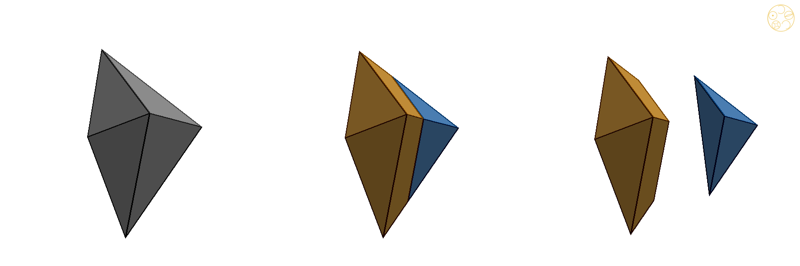
Figure 4.2. One double cone, from a tetrahedron's centre through the shared face to an octahedron's centre. Left: whole. Middle: cut by a plane parallel to the face (here t = 0.55, beyond the face). Right: the tetrahedron's share (gold) and the octahedron's share (blue), pulled apart.
3. The family
Cut every double cone at the same fraction of the way from the tetrahedron's centre to the octahedron's, and give each side to its own centre. Whatever the fraction, the pieces fill space; what they look like depends on whether the cut is before or after the shared face.
Main theorem. For 0 ≤ t ≤ 1 cut every double cone BF by the plane parallel to F through the point cT + t(cO − cT), and let T(t) be the union of the 4 parts next to a tetrahedron's centre and O(t) the union of the 8 parts next to an octahedron's centre. Then the pieces T(t) and O(t) fill space face to face, both are convex, and:
(a) for 0 < t ≤ 1/3, T(t) is the regular tetrahedron of edge 3t, volume 27t³·VT, and O(t) is the rhombic dodecahedron with its 8 three-fold corners cut off by planes parallel to the octahedron's faces (8 triangles and 12 hexagons for t < 1/3), volume (6 − 54t³)·VT;
(b) for 1/3 ≤ t < 1, with a = 3(1 − t)/2, O(t) is the regular octahedron of edge a, volume 4a³·VT, and T(t) is the cube with its 4 corners at octahedron centres cut off (4 triangles and 6 hexagons for t > 1/3), volume (3 − 2a³)·VT;
(c) at t = 0 the pieces are the rhombic dodecahedra alone, at t = 1/3 the octet, at t = 1 the cubes alone.
Why: every double cone is shared out by one flat cut, so nothing is lost and nothing overlaps. Before the face, the tetrahedron's side is a smaller copy of the tetrahedron, and the octahedron's side is the rhombic dodecahedron with its tips cut off; after the face, it is the other way round with the octahedron and the cube.
Proof. The double cones fill space and each is divided by one plane into two parts with disjoint interiors, so the pieces fill space. (a) For t ≤ 1/3 the plane lies in the tetrahedron's cone, at fraction 3t of the way from cT to F; the 4 parts next to cT are the cones scaled by 3t about cT, which make the tetrahedron scaled by 3t. The parts next to cO are its 8 cones together with the 8 neighbouring tetrahedron cones with their tips removed, that is, the rhombic dodecahedron (§2) cut by the 8 planes, since each plane lies between cT and F and cT is the only corner of the rhombic dodecahedron beyond the plane of F, so the plane meets the rhombic dodecahedron only inside the one cone over F: a convex set, being an intersection of convex sets. Each plane cuts the three edges at a three-fold corner at the same fraction 3t of their length, so for t < 1/3 the corners become triangles and the rhombi hexagons. (b) For t ≥ 1/3 the plane lies in the octahedron's cone, at fraction (3/2)(1 − t) = a of the way from cO to F, and the same argument with the roles exchanged gives the octahedron scaled by a and the cube (§2) cut by 4 planes (cO being the only corner of the cube beyond the plane of F). The volumes follow: (a) 27t³VT, and 6VT − 8·(VT/4)·27t³; (b) a³VO = 4a³VT, and 3VT − 4·(VO/8)·a³. Face to face: a triangle of one piece is exactly the cut face of its neighbour of the other kind, and the hexagons are shared by neighbours of the same kind, whose cuts agree because the corners they cut are the same points cT (respectively cO), cut by the same planes. The study checks all of this exactly, in rational arithmetic, at t = 1/10, 1/5, 1/3, 1/2, 4/5, 9/10 [5]. ∎
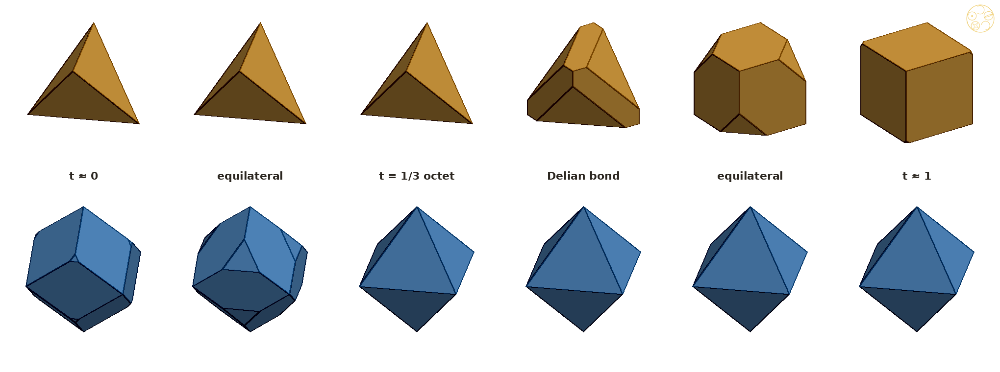
Figure 4.3. The family. Top: the tetrahedron piece T(t); bottom: the octahedron piece O(t); each panel at its own scale. From t ≈ 0 (a small tetrahedron and a rhombic dodecahedron with slightly cut corners) through the first equilateral member, the octet (t = 1/3), the Delian bond (Samson and Delilah) and the second equilateral member, to t ≈ 1 (the cube and a small octahedron).
4. Special members
Along the slider, a few positions stand out: two where every edge in the whole filling has the same length, and one where the tetrahedron pieces and the octahedron pieces each take exactly half of space.
Theorem 2. (a) At t = (2√6 − 3)/15 every edge of the filling, of the tetrahedra and of the cut rhombic dodecahedra alike, has length (2√6 − 3)/5. (b) At t = 5/3 − (2/3)√2 every edge, of the cut cubes and of the octahedra alike, has length √2 − 1. (c) At t = 1 − ∛6/3 the tetrahedron pieces and the octahedron pieces each fill exactly half of space. (d) For no t is a hexagon regular.
Why: each piece has only two kinds of edge, the ones the cut makes and what is left of the old edges. Setting the two equal is one equation, and it has one answer on each side of the octet.
Proof. (a) For t ≤ 1/3 the tetrahedron has edge 3t, and the cut triangles on the rhombic dodecahedron are its faces. The other edges of the cut rhombic dodecahedron are what is left of its edges, of length √6/4, after a fraction 3t at the cut end: (√6/4)(1 − 3t). Equal when 3t = (√6/4)(1 − 3t), that is, t = √6/(12 + 3√6) = (2√6 − 3)/15, where 3t = (2√6 − 3)/5. (b) For t ≥ 1/3 the octahedron has edge a and the cut cube's triangles are its faces; the rest of each cube edge, of length 1/√2, is 1/√2 − a/√2 (each edge of the cube has one cut end, since the cut corners alternate). Equal when a = (1 − a)/√2, that is, a = √2 − 1, t = 1 − 2a/3 = 5/3 − (2/3)√2. (c) Per octahedron there are two tetrahedra; their pieces take half of space when 2(3 − 2a³) = 4a³, a³ = 3/4, t = 1 − (2/3)∛(3/4) = 1 − ∛6/3 (for t ≤ 1/3 the tetrahedron pieces take at most a third). (d) The hexagons of the cut cube lie in the cube's faces and keep its right angles at their two uncut corners (angles 90°, 135°, 135°, 90°, 135°, 135°); those of the cut rhombic dodecahedron keep its acute rhombus angles of about 70.5° (with 144.7° at the cut corners). The study confirms (a)–(c) exactly in ℚ(√6), ℚ(√2) and ℚ(∛6): every edge equal, and the volumes, with no floating point in any equality [5]. ∎
5. The Delian bond
At one position the two pieces weigh the same. There the tetrahedron's piece holds exactly twice the volume of the octet's tetrahedron, and the octahedron's piece exactly half the volume of the octet's octahedron. Doubling a volume means multiplying lengths by the cube root of 2: the Delian problem of the ancient Greeks [11], which cannot be solved with ruler and compass [10]. Here it happens in both directions at once.
Theorem 3 (the Delian bond). T(t) and O(t) have equal volume at exactly one position, tD = 1 − (2/3)·2−1/3. There Samson, the cut cube T(tD), and Delilah, the octahedron O(tD), both have volume √2/6 = 2VT = VO/2: Samson twice the octet's tetrahedron and Delilah half the octet's octahedron. Delilah is the octet's octahedron shrunk by the factor 2−1/3, so her edge is 1/∛2; Samson's edges are 1/∛2 (his triangles, which are Delilah's faces) and (1 − 2−1/3)/√2.
Why: as the cut slides beyond the octet, one piece only grows and the other only shrinks, so they can be equal only once. Setting the two volume formulas equal leaves one number, the cube root of one half.
Proof. For t ≤ 1/3, vol T(t) ≤ VT while vol O(t) ≥ 4VT, so they are never equal. For t ≥ 1/3, as a grows (that is, as the cut moves back towards the octet), vol T(t) = (3 − 2a³)VT decreases and vol O(t) = 4a³VT increases, so equality holds for at most one a: 3 − 2a³ = 4a³, a³ = 1/2, a = 2−1/3, tD = 1 − 2a/3. Then both volumes are 2VT = √2/6. The edges are those of the Main theorem (b) at a = 2−1/3. The study confirms it exactly in ℚ(∛2): equal volumes, Delilah's edges, Samson's two edge lengths [5]. ∎
Figure 4.4. The Delian bond filling space: the eight Samsons (gold) and four Delilahs (blue) of one cube of the lattice, from two sides: the Samsons form a star round the Delilah hidden at the cube's centre.
6. The DICTONIC SOLIDS and BONDS
Paper #48 and this chapter together give six solids that fill space in three pairs. DICTO calls the six the DICTONIC SOLIDS and the three pairs the DICTONIC BONDS. What is new is mostly the pairing: some of the six were known as shapes before.
Three bonds of two solids each make six. Not all six are new as shapes. The keyed pair, Lotus Jewel Axes and Dodecaxes, are new [1]. The Icosaxes and Unborn Axes are the truncated octahedra of Koca et al. (x = τ and x = 1/τ), reached by a new route [1]. Samson is a cube with four alternate corners cut, at a proportion we did not find in the sources (§8). Delilah is a regular octahedron, of edge 2−1/3 at octet edge 1. What is new in each bond is the bond itself: the two solids together, the cut that makes them, and the way they fill space as a pair.
Bond
Solids
From
Volumes
Golden
Icosaxes + Unborn Axes
icosahedra, Unborns and AXE, cut at the golden point (#48)
the octet, cut where the volumes are equal (this chapter)
√2/6 each
Table 1. The three DICTONIC BONDS (names by DICTO). Golden and keyed volumes at icosahedron edge 1, Delian at octet edge 1.
Remark (the cube). The same weighted cut can be made between a lattice of cubes and the centres of its cubes, given a weight w (a power diagram, so every member fills space). As w grows the cubes lose their corners to octahedra; the pieces become regular truncated cubes with octahedra at w = 1/4 − 1/√2 (every edge √2 − 1 at cube edge 1), cuboctahedra with octahedra at w = −1/4, where #48's factor x begins (x → 0), and Kelvin's truncated octahedra at w = 0 (x = 1); in between, the pieces are #48's T(x) and T(1/x) with w = (x − 1)/(4(x + 1)). All its special members are known solids: the equal-edged ones are the uniform truncated cubic and rectified cubic honeycombs [15], and the volumes are equal only for Kelvin's cell. The Delian ratio, one piece exactly twice the other, does occur (x ≈ 0.3747), but at a root of 16u³ − 36u² + 18u − 1 = 0, which is irreducible with three real roots and so has no expression in real radicals. The cube therefore gives no new bond; checked exactly in [5].
Remark (the golden bond, polar). Look at the solids turned inside out (polar reciprocation about their centres). The truncated octahedron T(x) of #48's Theorem 4 has its square faces at distance (1 + x)s and its hexagons at distance (1 + 2x)s/√3 from its centre (scale s), so its polar has corners at distance 1/((1 + x)s) on the three axes and at (±1, ±1, ±1)/((1 + 2x)s): a cube with a low pyramid on each face (14 corners, 24 triangles, the type of the tetrakis hexahedron). The pyramid's height over the face, measured in half cube edges, is (1 + 2x)/(1 + x) − 1 = x/(1 + x). For the Icosaxes (x = τ) it is τ/(1 + τ) = 1/φ, for the Unborn Axes (x = 1/τ) it is 1/φ², for Kelvin's cell (x = 1) it is 1/2; and for every pair x, 1/x the two heights add to x/(1 + x) + 1/(1 + x) = 1, which is the height of the pyramids that make a cube into Kepler's rhombic dodecahedron. Each height is measured in its own polar's half cube edge (the two polars have cubes of different sizes), so this is a statement about proportions: in proportion to its own cube, the polar of the golden bond divides the rhombic dodecahedron's pyramid between its two solids in the golden ratio. The polar of Delilah is a cube; the polar of Samson is an octahedron with low pyramids on four alternate faces; the keyed solids are not convex and have no polar solid. (The polar solids are not claimed to fill space.)
7. Conclusion
The octet, the classical mixed filling of tetrahedra and octahedra, sits a third of the way along a slider that runs from Kepler's rhombic dodecahedron to the cube. Along it, one position makes the two pieces weigh the same: Samson and Delilah, where one piece doubles and the other halves.
One flat cut per double cone turns the octet into a family of mixed space-fillers, every member convex, with the rhombic dodecahedron and the cube at its ends. Its special members are exact: two fillings with every edge equal, one where the two kinds share space equally, and the Delian bond, where the tetrahedron's piece doubles and the octahedron's halves. With paper #48 this completes DICTO's DICTONIC SOLIDS and BONDS: the golden bond of the icosahedron, its keyed form, and the Delian bond of the octet. The same cut for the cube (§6, Remark) meets only known solids, so the count stays at three bonds. Open: a single solid for each bond whose copies alone fill space, and printed sets of Samson and Delilah.
8. What is known, and what is new
The octet, its dual and the ways the cube, the octet and the rhombic dodecahedron are related are old. We did not find the slider itself, its equal-edged members or the Delian bond.
Known. The octet (tetrahedral-octahedral honeycomb) [3]; the rhombic dodecahedron as a cube with six pyramids [2, 4] and, equally, as an octahedron with eight quarter-tetrahedra, and the cube as a tetrahedron with four corners; Knoll and Morgan [2] relate the cube packing, the octet and the rhombic dodecahedron packing by stretching, truncation, tetrahedra inscribed in cubes and duality, as separate steps. Weighted Voronoi (power, Laguerre) diagrams [6] give one-parameter families of convex fillings in general; the family here is one of them (the cut planes are the power bisectors of the tetrahedron and octahedron centres). The cube remark's equal-edged members are the uniform truncated cubic and rectified cubic honeycombs [15]. The polar remark rests on the classical duality of the truncated octahedron (Kelvin's cell [14]) and the tetrakis hexahedron. Closest in spirit are the continuous families of tilings by tetrahedra and octahedra of Conway, Jiao and Torquato [7] and of Gabbrielli, Jiao and Torquato [8], obtained by retessellating the octet: there both kinds of tile stay regular and only their sizes and arrangement change, while here one piece stays regular and its partner becomes a cut rhombic dodecahedron or a cut cube.
Not found, in the sources listed in the Appendix under Chapter 4: the one-parameter family through the octet from rhombic dodecahedra to cubes as such, its two equilateral members, the half-and-half member, the Delian bond (equal volumes, doubling and halving at once), and the golden division of the rhombic dodecahedron's pyramid by the polar golden bond. "Not found" is limited to those sources.
9. In the apps
Samson and Delilah are being added to Polyhedraverse among DICTO's pieces, with a Kaleidohedra world, DICTONIC, whose three bond buttons and one slider run through the golden, keyed and Delian bonds (https://dictospheres.com).
Appendix A. Data (octet edge 1, VT = √2/12)
Position
t
Tetrahedron piece
Octahedron piece
rhombic dodecahedra
0
—
rhombic dodecahedron, 6VT
equilateral (a)
(2√6 − 3)/15 ≈ 0.1266
tetrahedron, edge (2√6 − 3)/5
cut rhombic dodecahedron, same edge
the octet
1/3
tetrahedron, edge 1, VT
octahedron, edge 1, 4VT
half and half
1 − ∛6/3 ≈ 0.3943
cut cube, 3VT/2
octahedron, a = ∛6/2, 3VT
Delian bond
1 − (2/3)·2−1/3 ≈ 0.4709
Samson, 2VT
Delilah, edge 2−1/3, 2VT
equilateral (b)
5/3 − (2/3)√2 ≈ 0.7239
cut cube, edge √2 − 1
octahedron, edge √2 − 1
cubes
1
cube, edge 1/√2, 3VT
—
Part III. The web
Chapters 5 and 6
Chapter 5. The Web of Bonds: How the DICTONIC Bonds Hand Over
From paper #52 (version 1), DICTO DOI 10.5281/zenodo.23629252
Theorem: both DICTONIC loops are weighted Voronoi (power) diagrams of one fixed crowd of points of two kinds, with one weight slid between the kinds; the bonds are the edges of the dual weighted-Delaunay web; the bond between unlike pieces never breaks inside a loop, while the two like bonds hand over, gradually in the golden loop and all at once, at the octet, in the Delian loop
DICTO's two loops of space-filling pairs, the golden loop of paper #48 and the Delian loop of paper #51, each slide one pair of solids through a whole family of shapes. Draw one line, a bond, between every two pieces that share a face, and the lines make a web. We show that each loop is really one fixed crowd of points of two kinds, the piece centres, and that the only thing that moves is one number, a weight given to one kind against the other. Every piece is the region nearer (in this weighted sense) to its own point than to any other. Then the web is exactly the web of the classical weighted Delaunay construction. As the weight slides, the bond between unlike pieces never breaks. The two like bonds hand over: in the golden loop gradually, both alive all the way and equal at Kelvin's cell; in the Delian loop all at once, at the octet, where every rhombus of a hidden rhombic dodecahedron trades its long diagonal for its short one. Read physically, the weight is a ball radius squared: the golden loop is the caesium chloride structure, the Delian loop the fluorite structure, and the range where the balls can touch is bounded exactly by Pauling's classical radius-ratio limits (the same contact condition as Pauling's). Main theorem. For every x in [0, ∞] the golden network is the power diagram of the body-centred cubic sites with weight difference (φ²/4)(x − 1)/(x + 1); for every t in [0, 1] the Delian network is the power diagram of the fluorite sites with weight difference (3/8)(2t − 1). The web is the 1-skeleton of the dual regular subdivision, with exact bond areas. At the ends, at Kelvin's cell and at the octet these are classical Voronoi or Delaunay tessellations; the theorem gives the whole family between them. In the golden loop all three bond types live on the whole open loop, with constant face lattice; the two like bonds have area ratio x² and are equal only at x = 1. In the Delian loop the unlike bond lives exactly on (0, 1), oct–oct exactly on [0, 1/3), tet–tet exactly on (1/3, 1]; t = 1/3, the octet, is the only parameter at which both pieces exist and only one bond type is present. Theorem 2 (the balls): the weight is a squared radius; with unlike neighbours touching, ρ = (x + 2)/(2x + 1) and ρ = t/(1 − t), and the touching windows end exactly at Pauling's limits √3 − 1 and √(3/2) − 1 (Pauling's own contact condition, rederived). All geometric results are exact (371 + 61 checks, none failed; the 24 physical checks of [S3] are estimates, Appendix A).
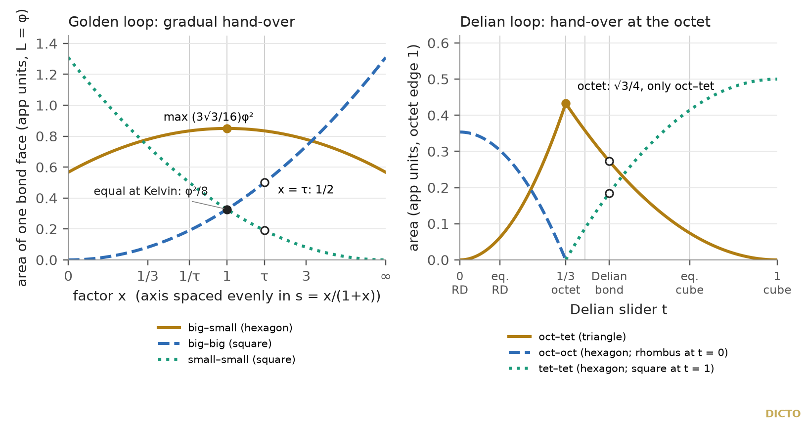
Figure 5.1. The exact area of one bond face along each loop (Main theorem; Table 1). Left, golden loop (axis evenly spaced in s = x/(1 + x), so the whole loop 0 ≤ x ≤ ∞ fits): the unlike bond (gold) never breaks and peaks at Kelvin; the two like bonds trade size, equal at Kelvin (φ²/8), and big–big 1/2 against small–small 1/(2φ²) at x = τ. Right, Delian loop: oct–oct (blue) dies exactly where tet–tet (green) is born, at the octet t = 1/3, where the unlike bond peaks, with a corner, at the octet triangle √3/4. Open circles: x = τ and the Delian bond.
1. Where it started
DICTO's DICTONIC world in Kaleidohedra shows a web: one line for every face two pieces share. DICTO's idea was that this web should itself be a lattice that changes with the rhythm of the loop. We asked what that web is, exactly.
Paper #48 [1] cut the gaps between icosahedra at the golden point and placed the resulting pair, the Icosaxes and the Unborn Axes, in a one-parameter family T(x), T(1/x) of truncated octahedra (Koca's orbit [10]). Paper #51 [2] cut the octet by one sliding plane per tetrahedron–octahedron pair and found the Delian bond, Samson and Delilah. DICTO called the solids the DICTONIC SOLIDS and the pairs the DICTONIC BONDS, and in the app each family runs as a loop. On 25 October 2026 DICTO's idea was that the network of bonds should create a web of lattices that change with the rhythm of the loop. The app draws that web (Figure 5.5): one line per shared face, thicker for a larger face. Float runs on a small network suggested that bonds trade places along each loop. Two exact studies [S1, S2] answer what the web is, and a third [S3] tests the physical reading (§6); this chapter reports them.
2. The two loops
Both loops are pairs of pieces that fill space. Each piece sits on a point; the points never move. Only the shapes change.
Golden loop. T(x) is the convex hull of all permutations of (±(1 + x), ±x, 0), scaled so that its squares lie at distance L/2 from its centre, with L = φ (paper #48, Theorem 4). T(x) sits on the big sites B = φℤ³, T(1/x) on the small sites S = φℤ³ + (φ/2)(1, 1, 1), for x from 0 to ∞. We write s = x/(1 + x) in [0, 1]: then T(x) is the set of signed permutations of (1, s, 0)·L/2, and T(1/x) the same with 1 − s in place of s. At x = 1 both are Kelvin's truncated octahedron [20]; at x = τ (= φ, the name of the stop in paper #48 and the app) they are the Icosaxes and the Unborn Axes. "Big" and "small" name the two kinds of site (the kinds of #48, the Icosaxes big); for x < 1 the big piece is the smaller of the two, and the swap x ↔ 1/x exchanges them.
Delian loop. The pieces of paper #51 at slider t in [0, 1], with a = 3(1 − t)/2: the tetrahedron pieces sit on Q = (ℤ + ½)³/√2, the octahedron pieces on O = {n ∈ ℤ³ : n₁ + n₂ + n₃ odd}/√2, octet edge 1. At t = 0 the octahedron pieces are Kepler's rhombic dodecahedra, at t = 1/3 the octet, at t = 1 the tetrahedron pieces are cubes; in between lie the two equal-edged members, the half-and-half member and the Delian bond (Samson and Delilah).
Power diagram. Given sites ci with weights wi, the power cell of ci is the set of points p with |p − ci|² − wi ≤ |p − cj|² − wj for all j: a Voronoi cell in which each site is given a head start [3, 4]. Two cells meet in a plane perpendicular to the line between their sites (the power bisector). The cells are convex and fill space. Their dual, the weighted (regular) Delaunay subdivision, has an edge between two sites exactly when their cells share a face [3].
3. Main theorem
Each loop is one fixed crowd of points with one weight slid between the two kinds. The web of bonds is the classical dual web. The unlike bond never breaks; the like bonds hand over.
The classical members. Some members of both loops are classical. Every Delaunay tessellation is the power diagram of its own circumspheres [3, 23]. The octet (t = 1/3) is the Delaunay tessellation of the face-centred cubic lattice; its circumspheres sit on the octahedron centres (r² = 1/2) and the tetrahedron centres (r² = 3/8), a weight difference wQ − wO = −1/8. The octahedron–cuboctahedron honeycomb at x = 0 and x = ∞ is likewise a power diagram of its circumspheres (r² = φ²/4 and φ²/2), a weight difference −φ²/4 between octahedron and cuboctahedron. Kelvin's cells (x = 1), the rhombic dodecahedra (t = 0) and the cubes (t = 1) are ordinary Voronoi diagrams (of the surviving kind of site alone at t = 0 and t = 1). These are exactly the weights of the theorem below at those points. What the theorem adds is the whole family between these classical members.
Main theorem. (i) For every x ∈ [0, ∞] the golden network is the power diagram of the body-centred cubic sites B ∪ S with wB − wS = (φ²/4)(x − 1)/(x + 1) = (L/2)²(2s − 1). For every t ∈ [0, 1] the Delian network is the power diagram of Q ∪ O with wQ − wO = (3/8)(2t − 1). At t = 0 the Q cells are single points, at t = 1 the O cells are single points.
(ii) The web of bonds is the 1-skeleton of the dual regular subdivision, and the bond faces and their areas are those of Table 1.
(iii) Golden: gradual hand-over. For 0 < x < ∞ all three bond types are present and the face lattice is constant. Big–big rises strictly from 0 and small–small falls strictly to 0; their ratio is x², the diagonals of the two square faces (sL and (1 − s)L) add up to the lattice spacing φ, and the two areas are equal only at x = 1. The whole picture is symmetric under x ↔ 1/x. Delian: hand-over at the octet. Oct–tet is present exactly on (0, 1), oct–oct exactly on [0, 1/3), tet–tet exactly on (1/3, 1]. t = 1/3 is the only parameter at which both pieces exist and every face is of one bond type (there the web is bipartite). The ends t = 0 and t = 1 carry one bond type only because one piece has shrunk to a point. The golden loop never has a single bond type: at x = 0 there are two (big–small and small–small), at x = ∞ two (big–small and big–big).
Loop
Bond
Face
Area (app units)
Alive
Shape of the curve
golden (L = φ)
big–small
hexagon (triangle at x = 0, ∞)
(√3/8)φ²·(x² + 4x + 1)/(1 + x)²
whole loop
rises on (0, 1), falls on (1, ∞); max (3√3/16)φ² ≈ 0.8502 at Kelvin; (√3/8)φ² ≈ 0.5668 at both ends
big–big
square, diagonal sL
φ²x²/(2(1 + x)²)
born at x = 0⁺
strictly increasing, → φ²/2 as x → ∞
small–small
square, diagonal (1 − s)L
φ²/(2(1 + x)²)
dies as x → ∞
strictly decreasing from φ²/2 at x = 0
Delian (octet edge 1)
oct–tet
triangle
(9√3/4)t² for t ≤ 1/3; (9√3/16)(1 − t)² for t ≥ 1/3
exactly (0, 1)
rises to √3/4 (the octet triangle) at 1/3, then falls; a corner at 1/3, slopes 3√3/2 and −3√3/4
oct–oct
hexagon (rhombus at t = 0)
(√2/4)(1 − 9t²)
exactly [0, 1/3)
strictly decreasing from √2/4 (the rhombic dodecahedron's rhombus)
tet–tet
hexagon (square at t = 1)
(3t − 1)(5 − 3t)/8 = (1 − a²)/2
exactly (1/3, 1]
strictly increasing to 1/2 (the cube's face)
Table 1. The bond faces and their exact areas. Sample values: at Kelvin (x = 1) big–big = small–small = φ²/8 ≈ 0.32725; at x = τ big–big = 1/2, small–small = 1/(2φ²) ≈ 0.19098, big–small = (√3 + 3√15)/16 ≈ 0.8344; at the Delian bond oct–tet = 21/3√3/8 ≈ 0.2728 and tet–tet = 1/2 − 21/3/4 ≈ 0.1850.
Why: choose the weights so that every flat face of every piece is exactly the plane of equal weighted distance between the two points it separates. Then each piece is its point's weighted cell, and the rest is the classical duality.
Proof. (i) With the weights in (i), every facet plane of every piece of the app is the power bisector of the two sites that share it, for every s ∈ (0, 1) and every t in each of the regimes (0, 1/3) and (1/3, 1), as an identity in the parameter [S1, A2]. Every corner of the piece satisfies every other power inequality against every site within a fixed distance, with slack ≥ 0 on the whole open regime: the slacks are linear in s or t and have no root inside [S1, A1]. The facet planes' own vertex enumeration gives back exactly the piece's corners, and their normals sum to 0 with rank 3, so they bound a bounded region; together with A1 this is piece = power cell. A uniform distance bound shows that sites farther away cannot cut the cell [S1, A7]: every corner lies within ρ of its site, ρ² ≤ 2 in units of (L/2)² (golden) and ρ² ≤ 1 in units where the cube at t = 1 has edge 1 (Delian), and with the site lists out to D = 4 and D = 3 in those units the bound (D − ρ)² ≥ ρ² + |Δ| holds for every parameter ((4 − √2)² ≈ 6.69 ≥ 2 + 1; (3 − 1)² = 4 ≥ 1 + 3/4). The regime boundaries and the ends x = 0, ∞, t = 0, 1/3, 1 are checked by building the power cells from scratch among the fixed sites, with no use of the app's pieces, in exact arithmetic, and comparing with the app's pieces; at t = 0 and t = 1 the vanishing kind's cell is a single point [S1, B1]. At t = 1/3 and x = 0, ∞ the identity also follows from the circumsphere description of a Delaunay tessellation (above), an independent check. (ii) Power diagrams are dual to regular subdivisions [3], so two sites are bonded exactly when they span an edge of a dual cell. The face of each bond is computed in closed form [S1, A3] and checked at every sample, rational and irrational [S1, B2], and against the app's own web to 10⁻⁹ [S1, C2]. (iii) The monotonicity, birth and death points and the corner at 1/3 follow from the closed forms [S1, A6]; the ratio of the like bonds is s²/(1 − s)² = x², so they are equal only at x = 1; the square diagonals are sL and (1 − s)L, which add to L = φ. The swap: s ↔ 1 − s flips the sign of the weight, and the translation by (φ/2)(1, 1, 1) exchanges B and S, so the diagram at 1/x is the diagram at x translated with big and small exchanged; hence big–big(1/x) = small–small(x) and big–small is unchanged. The bond types present in each regime are read off the incidences of the dual cells (Corollary 3) [S1, B6]. ∎
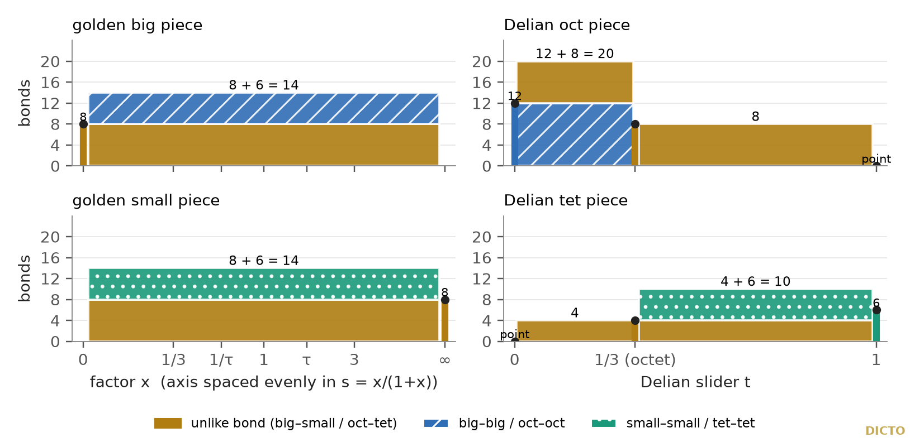
Figure 5.2. Bonds per piece along each loop (Corollary 1). Bars: open intervals; dots: single parameter values. The golden pieces keep 8 unlike bonds throughout and 6 like ones except at one end. The Delian octahedron piece drops from 20 bonds to 8 at the octet, and the tetrahedron piece rises from 4 to 10; at the octet both pieces have only unlike bonds.
4. Corollaries
The theorem tells how many bonds each piece has, where the unlike bond is strongest, and what the hidden dual lattice looks like at each moment of the loop.
Corollary 1 (bonds per piece). Exact counts [S1, B3, C4]:
x = 0
0 < x < ∞
x = ∞
golden big
8 big–small (octahedron)
14 = 8 big–small + 6 big–big
14 = 8 + 6 (cuboctahedron)
golden small
14 = 8 + 6 small–small (cuboctahedron)
14 = 8 big–small + 6 small–small
8 (octahedron)
t = 0
0 < t < 1/3
t = 1/3
1/3 < t < 1
t = 1
Delian oct
12 oct–oct (rhombic dodecahedron)
20 = 12 oct–oct + 8 oct–tet
8 oct–tet
8 oct–tet
none (point)
Delian tet
none (point)
4 oct–tet
4 oct–tet
10 = 4 oct–tet + 6 tet–tet
6 tet–tet (cube)
Each golden piece's 6 squares always bond to its own kind: big–big for a big piece, small–small for a small one. What trades between the like bonds is their size, not the pieces they join; at an end, one kind's squares shrink to points.
Corollary 2 (the unlike bond's peak). The unlike bond is largest at Kelvin's cell in the golden loop, smoothly, with area (3√3/16)φ², and at the octet in the Delian loop, with a corner, with area √3/4.
Corollary 3 (the hidden dual lattice). The dual weighted-Delaunay cells are [S1, B6, B8] (volumes in units of (L/2)³ for the golden loop and, for the Delian loop, of the cube that the tetrahedron piece becomes at t = 1 (edge 1/√2 at octet edge 1); exact):
Loop, range
Dual cells
Volumes
golden, 0 < x < ∞
disphenoid tetrahedra, 2 big + 2 small sites: one subdivision throughout, no flip
2/3
golden, x = 0 and x = ∞
square bipyramids (2 + 4 sites)
8/3
Delian, t < 1/3
octahedra (6 O) and tetrahedra (3 O + 1 Q)
4/3 and 1/12
Delian, t = 1/3
rhombic dodecahedra (6 O + 8 Q)
2
Delian, t > 1/3
cubes (8 Q) and square pyramids (1 O + 4 Q)
1 and 1/6
At t = 1/3 each rhombus of the dual rhombic dodecahedra trades its long diagonal (an oct–oct bond) for its short one (a tet–tet bond): a single flip (Figure 5.3). At t = 0 the dual is the octet itself; at t = 1 it is cubes.
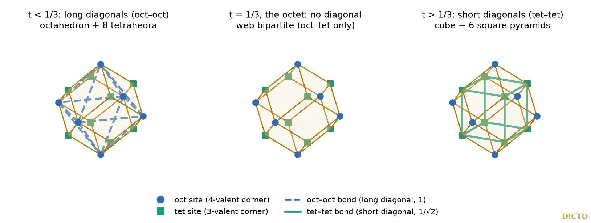
Figure 5.3. The hand-over at the octet, seen in the dual. One dual cell at t = 1/3 is a rhombic dodecahedron whose 4-valent corners are oct sites (blue) and whose 3-valent corners are tet sites (green). Before the octet (left) every rhombus is split by its long diagonal, an oct–oct bond of length 1, and the cell falls into an octahedron and 8 tetrahedra. At the octet (middle) no diagonal is drawn and every bond joins unlike sites. After it (right) every rhombus is split by its short diagonal, a tet–tet bond of length 1/√2, and the cell falls into a cube and 6 square pyramids. Octet edge 1.
Corollary 4 (the weight line). For fixed sites, the weights that give one and the same dual subdivision form the cones of the secondary fan [5, 6], its chambers being the triangulations; for periodic point sets see Alexeev [24, §5.12]. Each loop's weight runs along a segment. The golden segment stays inside one chamber except at its ends; the Delian segment lies in two non-maximal cones (its dual cells are not simplices, because the tied weights keep six oct sites co-spherical) that meet exactly once, at t = 1/3, in the cone of the rhombic dodecahedra.
Corollary 5 (the Delian bond). At the Delian bond, wQ − wO = 3/8 − 22/3/4 ≈ −0.02185: close to, but not at, the unweighted Voronoi point t = 1/2. The ratio of its two bond areas is oct–tet / tet–tet = 21/3√3 / (4 − 2·21/3).
Remark (the weights in earlier work). These weights agree with paper #51's cube Remark, w = (x − 1)/(4(x + 1)) at cube edge 1, and with the octet check of #51's study; the theorem proves them for every parameter, not only at samples. The golden volumes are (4/3)(1 + u)³ − 4u³ in units of (L/2)³, with u = s for big and u = 1 − s for small, always adding to L³; the Delian volumes are those of paper #51.
5. The physical reading: balls of two sizes
A weight in a power diagram can be read as the square of a ball's radius: the face between two touching balls passes through their point of contact. Read this way, the two loops are two classical crystal structures, and the range where the balls can touch ends exactly at Pauling's radius-ratio limits.
Theorem 2 (the balls). (a) The radical tessellation of a packing of balls (ci, ri) is the power diagram with wi = ri² + C, for any common constant C; a power diagram therefore fixes the radii only up to ri² → ri² + C. (b) The golden sites are the caesium chloride structure (B2, Wyckoff 1a and 1b, lattice constant a = φ in app units); the Delian sites, shifted by (1, 0, 0)/√2, are the fluorite structure (C1: the oct sites on the face-centred cubic 4a, the tet sites on 8c, all the tetrahedral holes; a = √2). (c) If unlike neighbours touch, the radius ratio is
ρ = rsmall/rbig = (x + 2)/(2x + 1) = (2 − s)/(1 + s) on the golden loop and ρ = rtet-site/roct-site = t/(1 − t) on the Delian loop; so t is exactly the share of the unlike bond length taken by the tet-site ball. (d) The touching window (unlike balls touching, like balls not overlapping) is x ∈ [(√3 − 1)/2, √3 + 1], ρ ∈ [√3 − 1, (√3 + 1)/2] on the golden loop, and t ∈ [1 − √(2/3), 1/√3], ρ ∈ [√(3/2) − 1, (√3 + 1)/2] on the Delian loop. Its ends are Pauling's radius-ratio limits [9] and their reciprocals: √3 − 1 ≈ 0.732 for 8-coordination (golden lower end; Delian upper end as 1/(√3 − 1) = (√3 + 1)/2), and √(3/2) − 1 ≈ 0.225 for 4-coordination (Delian lower end). (e) Without the touching condition, some non-overlapping ball packing realises every x ∈ [0, ∞], but only the t ∈ [1/6, 2/3].
Why: the face between two balls is where their weighted distances agree, and that is the power bisector with weight r². Touching fixes the sum of the two radii, the weight fixes the difference of their squares, and the two together fix each radius.
Proof. (a) The radical plane of two balls is the set where |p − ci|² − ri² = |p − cj|² − rj², that is, 2p·(cj − ci) = |cj|² − |ci|² + wi − wj, which depends on the weights only through their differences [S2, A1a, A1b]; for touching balls it passes through the contact point [S2, A1c] (classical: [4, 7]). (b) Exact coset comparison with the Wyckoff positions [S2, A6]. (c) Let d be the unlike nearest distance and Δ the weight difference of the Main theorem. Then r1 + r2 = d and r1² − r2² = Δ give r1 − r2 = Δ/d. Golden: d = (√3/2)φ and Δ/d² = (2s − 1)/3, so rbig/d = (1 + s)/3 and rsmall/d = (2 − s)/3. Delian: d² = 3/8 and Δ/d² = 2t − 1, so rtet/d = t [S2, A2, A4]. (d) Golden: the big balls touch (2rbig = a = φ) exactly when (1 + s)/√3 = 1, at x = √3 + 1, ρ = √3 − 1, and the small balls touch at x = (√3 − 1)/2 by the swap. Delian: the oct balls touch (2rO = 1) at t = 1 − √(2/3), ρ = √(3/2) − 1, the tet balls (2rQ = 1/√2) at t = 1/√3, ρ = (√3 + 1)/2 [S2, A2e, A2f, A4c, A4d]. (e) Put u = r1 + r2; then r1,2 = (u ± Δ/u)/2, both radii grow with u and ρ moves monotonically towards 1, so the feasible u form an interval, nonempty exactly when the larger radius √|Δ|, with the other radius 0, fits. Golden: |Δ| ≤ (a/2)² = φ²/4 always. Delian: −Δ ≤ (1/2)² exactly when t ≥ 1/6, and Δ ≤ (1/(2√2))² exactly when t ≤ 2/3 [S2, A3, A4f]. And √|Δ| ≤ d holds for every parameter (|Δ| ≤ (a/2)² < d² golden, |Δ| ≤ 3/8 = d² Delian), so unlike balls never overlap at that u. ∎
Corollary 6 (the stops as balls). Under the contact map: golden x = 0 gives ρ = 2 and x = ∞ gives ρ = 1/2, both outside the window, where the only packing has the other kind as points; Kelvin (x = 1) forces ρ = 1, equal balls; x = τ gives ρ = √5/φ² = (3√5 − 5)/2 ≈ 0.8541, inside. Delian: the octet t = 1/3 gives ρ = 1/2, the Delian bond ρ = (3/2)·21/3 − 1 ≈ 0.8899, the unweighted Voronoi point t = 1/2 gives ρ = 1, all inside; t = 0 and t = 1 admit no packing at all; t = 1/6 and t = 2/3 are the end packings (touching face-centred cubic balls with the tet sites as points, and touching simple-cubic balls on the tet sites with the oct sites as points) [S2, A5].
Corollary 7 (an area identity). In the Delian contact model the oct–tet triangle has area (3√3/2)·roct² for t ≥ 1/3 and 6√3·rtet² for t ≤ 1/3 [S2, A7]. So compounds with the same oct-site radius have the same oct–tet area: BaF₂, Na₂O and K₂O, all with roct = 1.42 Å, share 5.239 Ų.
Real compounds on the loops
Placing real ionic crystals with Shannon's effective ionic radii [8] (as transcribed by the Imperial College Database of Ionic Radii, which takes all its data from [8]; not checked against the printed page) under the contact model gives Tables 2 and 3 and Figure 5.4. Every row was checked exactly: the radical cell built with w = r² is the app's piece at that x or t, with the bond counts and areas of Table 1 [S2, B2]. For every caesium chloride type and fluorite compound, "in the window" is the same as r⁺/r⁻ ≥ 0.732, Pauling's 8-coordination limit; for the antifluorites the same inequality holds with the ion on the 8-coordinated site in the numerator, r⁻/r⁺ ≥ 0.732 [S2, B3]. Areas are in app units (golden L = φ; Delian octet edge 1).
Compound
r(cation), CN
r(anion), CN
ρ
x (exact)
big–small
big–big
small–small
CsCl
Cs⁺ 1.74, VIII
Cl⁻ 1.81, VI*
0.9613
188/167 ≈ 1.126
0.8492
0.3671
0.2897
CsBr
Cs⁺ 1.74, VIII
Br⁻ 1.96, VI*
0.8878
109/76 ≈ 1.434
0.8412
0.4544
0.2209
CsI
Cs⁺ 1.74, VIII
I⁻ 2.20, VI*
0.7909
133/64 ≈ 2.078
0.8155
0.5966
0.1382
TlCl
Tl⁺ 1.59, VIII
Cl⁻ 1.81, VI*
0.8785
203/137 ≈ 1.482
0.8396
0.4666
0.2125
TlBr
Tl⁺ 1.59, VIII
Br⁻ 1.96, VI*
0.8112
233/122 ≈ 1.910
0.8225
0.5639
0.1546
Table 2. Caesium chloride type on the golden loop: the larger ion (the anion) on the big site; every row has 8 big–small + 6 big–big bonds per big piece and 8 big–small + 6 small–small per small piece, and lies inside the touching window. Radii in Å. *Shannon gives Cl⁻, Br⁻ and I⁻ only for CN VI; the CN VI value is used as a proxy for CN VIII.
Compound
oct site (CN 8)
tet site (CN 4)
ρ
t
side of octet
oct–tet
like bond
window
CaF₂
Ca²⁺ 1.12
F⁻ 1.31
1.1696
0.5391
> 1/3
0.2070
tet–tet 0.2610
in
SrF₂
Sr²⁺ 1.26
F⁻ 1.31
1.0397
0.5097
> 1/3
0.2342
tet–tet 0.2296
in
BaF₂
Ba²⁺ 1.42
F⁻ 1.31
0.9225
0.4799
> 1/3
0.2636
tet–tet 0.1956
in
CdF₂
Cd²⁺ 1.10
F⁻ 1.31
1.1909
0.5436
> 1/3
0.2030
tet–tet 0.2656
in
PbF₂ (β)
Pb²⁺ 1.29
F⁻ 1.31
1.0155
0.5038
> 1/3
0.2398
tet–tet 0.2231
in
UO₂
U⁴⁺ 1.00
O²⁻ 1.38
1.3800
0.5798
> 1/3
0.1720
tet–tet 0.3014
out
ThO₂
Th⁴⁺ 1.05
O²⁻ 1.38
1.3143
0.5679
> 1/3
0.1819
tet–tet 0.2900
in
CeO₂
Ce⁴⁺ 0.97
O²⁻ 1.38
1.4227
0.5872
> 1/3
0.1660
tet–tet 0.3083
out
ZrO₂ (cubic)
Zr⁴⁺ 0.84
O²⁻ 1.38
1.6429
0.6216
> 1/3
0.1395
tet–tet 0.3389
out
Li₂O (anti)
O²⁻ 1.42
Li⁺ 0.59
0.4155
0.2935
< 1/3
0.3358
oct–oct 0.0794
in
Na₂O (anti)
O²⁻ 1.42
Na⁺ 0.99
0.6972
0.4108
> 1/3
0.3382
tet–tet 0.1094
in
K₂O (anti)
O²⁻ 1.42
K⁺ 1.37
0.9648
0.4910
> 1/3
0.2524
tet–tet 0.2086
in
Table 3. Fluorite and antifluorite on the Delian loop (radii in Å; oct site 8-coordinated, tet site 4-coordinated). In fluorite the cation sits on the oct sites; in antifluorite (Li₂O, Na₂O, K₂O) the anion does. Caution on names: the app's "oct" pieces sit on the 8-coordinated face-centred cubic sites, its "tet" pieces on the 4-coordinated tetrahedral holes. β-PbF₂ is the fluorite form, metastable at ambient (α is orthorhombic); placement is for β.
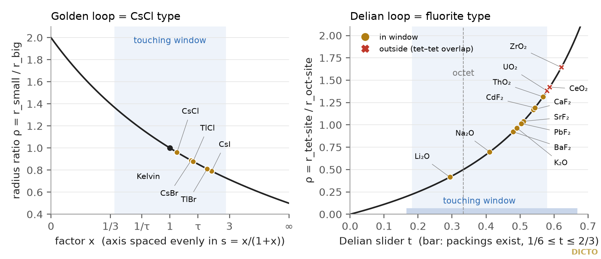
Figure 5.4. Real compounds on the loops (contact model; Shannon effective ionic radii [8]). Curves: the contact maps of Theorem 2(c). Shaded: the touching windows, whose ends are Pauling's limits. Left: the five caesium chloride type halides lie between Kelvin (x = 1) and the like-contact limit √3 + 1; the golden stop x = τ lies among them. Right: the fluorides and oxides; UO₂, CeO₂ and cubic ZrO₂ fall outside (red crosses). Only Li₂O lies before the octet, and that is not robust (§6).
Agreements with crystal chemistry. The sites are exactly B2 and C1. The touching windows end at Pauling's limits; this is Pauling's own contact condition [9], rederived in the language of radical tessellations. Wang et al. [25] built a binary hard-sphere crystal of large spheres on a simple cubic lattice with a small sphere in every cubic pore (their "SC" crystal: the caesium chloride arrangement at the pore-filling size ratio √3 − 1) and found that the radical polyhedra of both the small and the large spheres have 14 faces, 6 quadrangles and 8 hexagons: that is the golden loop's window end x = √3 + 1, a published point on the loop. The five caesium chloride type halides lie inside the window at x ≈ 1.1–2.1, on the big-ion side of Kelvin, and the golden stop x = τ ≈ 1.618 lies among them (between CsBr/TlCl and TlBr/CsI). Each golden piece's 14 faces (8 unlike + 6 like) match the two body-centred cubic neighbour shells, 8 at (√3/2)a and 6 at a. Cubic ZrO₂ lies far outside the window (r⁺/r⁻ = 0.61), consistent with cubic ZrO₂ needing dopants to be stable at room temperature.
6. Limits of the hard-ball reading
The balls are a reading of the geometry, not a model of the crystals. We tested where the reading fails, and why. The answer is mostly the radii, not the physics.
Three compounds fall outside the touching window with effective ionic radii, all beyond the tet–tet contact edge (√3 + 1)/2 ≈ 1.3660: UO₂ (ρ = 1.3800, 1.02 % beyond the edge), CeO₂ (1.4227, 4.15 %) and cubic ZrO₂ (1.6429, 20.27 %), the gap measured as (ρ − edge)/edge; and Li₂O lies on one side of the octet or the other depending on the radius convention [S3]. The misfit is not an artefact of the contact model: placing UO₂ and CeO₂ from their measured lattice constants (a = 5.47127 Å [28] and 5.411102 Å [29]) by the power-diagram weight alone, with no contact assumption, gives t = 0.5806 and 0.5878, still beyond 1/√3 ≈ 0.5774 [S3, Q1e].
Misfit
Shift needed
Compared with
Verdict
UO₂
+0.0102 Å on U⁴⁺, or −0.0140 Å on O²⁻
additivity residual r⁺ + r⁻ − d = +0.011 Å against the measured lattice [28]; tabulation half-unit 0.005 Å
within data error
CeO₂
+0.040 Å on Ce⁴⁺, or −0.055 Å on O²⁻
about 6× its additivity residual (0.007 Å, [29]); crystal radii put it inside
a radius-convention effect; no named physical effect (pressure, temperature, gravity, stoichiometry) explains it at room conditions
cubic ZrO₂
+0.170 Å on Zr⁴⁺
in yttria-stabilised zirconia the charge-compensating oxygen vacancies sit next to Zr, while Y keeps 8-fold coordination [35]; reaching the window by averaging radii would need a Ca²⁺ cation fraction of 0.61
explained by defect chemistry: Zr is not 8-coordinated, so the 8:4 input does not describe the real material
Li₂O (octet side)
+0.12 Å on Li⁺, or −0.24 Å on O²⁻
crystal radii and the Li⁺ CN VI radius both cross the octet; pressure cannot decide it: 73.9 GPa would be needed, above the antifluorite → anticotunnite transition at 50 ± 5 GPa [32]
undecidable from the radii
Table 4. The misfits, from the scale-anomaly study [S3, Q1, Q4, Q7]. Physical numbers there are estimates and labelled as such.
Pressure, temperature, gravity. In both structures every atom sits on a special position, so uniform compression or expansion scales all lengths alike and leaves ρ unchanged; pressure can move ρ only if anion and cation compress by different amounts. Even in the bound most favourable to entering the window (a bookkeeping bound: the whole bond shortening is charged to the anion's hard-sphere radius; K₀′ = 4 assumed for both, as in [31]), UO₂ would need 3.8 GPa (K₀ = 207 GPa [30]) and CeO₂ 18.9 GPa (K₀ = 230 GPa; its fluorite structure transforms at 31.5 GPa [31]); if the cation takes it, both move further out. In any case the radii are fitted to ambient structures, so neither pressure nor temperature can explain an ambient misfit. Heating does not help the reading either: above the superionic transition (for example 1430 K for CaF₂, 1350 K for Li₂O and 2670 K for UO₂, reference values quoted in [33]) the anion sublattice is highly disordered and the tet-site ball has no fixed site, so the model does not apply; UO₂ expands by 3.39 % from 293 K to 2670 K [34]. Gravity is negligible: a 1 m crystal of UO₂ is strained by its own weight by about 1.7 × 10⁻⁷, and the gravitational force between U⁴⁺ and O²⁻ is 3.8 × 10⁻³⁴ of their Coulomb force [S3, Q5].
The biggest effect is the radius convention. Moving from effective ionic radii to crystal radii (each cation +0.14 Å, each anion −0.14 Å) shifts ρ by 21–37 %, more than any physical effect: it puts all three misfits inside the window and moves Li₂O past the octet. Pauling's radius-ratio rule itself is a weak predictor: in about 5000 oxides, George et al. [27] found only 66 % of the tested local environments in agreement with the first rule, and only 13 % of the oxides satisfying the second to fifth rules together; they also note that Shannon radii depend on the environment and cannot be used for local-environment prediction. Shannon's own stated accuracy could not be verified, since the full text of [8] was not read; only the 0.01 Å tabulation step and his reliability keys were used.
Other limits. BaF₂ has r⁺/r⁻ = 1.08 > 1, and Na₂O (0.697) and K₂O (0.965) lie far above the 0.414 upper limit for 4-coordination, yet all three are fluorite or antifluorite; the model tests only overlap and has no upper "rattling" limit. The radical faces are not the distance shells: in fluorite with t > 1/3 the cation has 12 cation neighbours at a/√2 but no cation–cation face. The halide radii are CN VI proxies; the radii come from a transcription of Shannon's table. Left out: NH₄Cl, the metallic B2 alloys and Rb₂O, for lack of verified radii.
7. Conclusion
DICTO's web of bonds is a lattice that changes with the loop, as was DICTO's idea: the classical dual of a weighted Voronoi diagram. In the golden loop it changes only in size; in the Delian loop it changes its shape once, at the octet.
Both DICTONIC loops are one fixed crowd of points with one weight slid between two kinds, and the web of bonds is the dual weighted-Delaunay web. Its rhythm differs between the two loops. In the golden loop the dual never flips: the like bonds trade size in the ratio x², equal at Kelvin's cell, and the whole loop is symmetric under x ↔ 1/x. In the Delian loop the dual flips once, at the octet, where every rhombus of a hidden rhombic dodecahedron exchanges its long diagonal for its short one, and the octet is the one member whose web joins only unlike pieces. Read as balls, the loops are the caesium chloride and fluorite structures, and Pauling's classical limits mark where the balls can touch. Open: the scale-anomaly study (§6) and the keyed bond's web. The prior-art search is reported in the Appendix under Chapter 5.
8. What is known, and what is new
Power diagrams, their duality with weighted Delaunay subdivisions, radical tessellations of ball packings, the two crystal structures and Pauling's rule are all classical. What we did not find is the family between their classical members along these two loops.
Known. Power (Laguerre, weighted Voronoi) diagrams and their duality with regular triangulations [3, 4]; regular subdivisions change only at the walls of the secondary fan [5, 6], including for periodic decompositions (Alexeev [24, §5.12]); every Delaunay tessellation is the power diagram of its circumspheres [3, 23], so the octet at t = 1/3 and the octahedron–cuboctahedron honeycomb at x = 0, ∞ are power diagrams with the weights of the Main theorem, and x = 1, t = 0 and t = 1 are ordinary Voronoi diagrams (at t = 0 and t = 1 of one kind of site alone); radical tessellations of packings of balls of two or more sizes [7], and Voronoi–Dirichlet and radical polyhedra in crystal chemistry and coordination [18, 19, 21]; two unequal truncated octahedra on a body-centred lattice as Laguerre cells (general; noted in paper #48 [1]); the octet, rhombic dodecahedron and cube connections [11]; the T(x) orbit [10]; ionic radii [8] and the radius-ratio rule [9]; the window ends are Pauling's contact limits [9]; radius-ratio-dependent packings of two sphere sizes (Murray and Sanders [26]); a binary hard-sphere crystal of large spheres on a simple cubic lattice with a small sphere in every cubic pore, whose radical polyhedra all have 14 faces (Wang et al. [25], their "SC" crystal; in our reading the caesium chloride arrangement at size ratio √3 − 1); caesium chloride type and other binary crystals of colloids and nanoparticles whose phase is set by the size ratio [12–17]. Paper #51's cube Remark [2] and its octet check already gave the two weights at samples. Voronoi's theory of Delaunay subdivisions of lattices (Erdahl [22]) is related, but treats lattices, not two kinds of weighted sites.
Not found, in the sources listed in the Appendix under Chapter 5: the closed-form bond areas of both loops; the contrast between the golden loop (no flip) and the Delian loop (one flip, at the octet); the like-bond ratio x² and the diagonal sum φ; the sequence of dual cells between the classical end and middle members; the octet as the only member with a bipartite web; the contact maps ρ = (x + 2)/(2x + 1) and ρ = t/(1 − t); the Delian packing range 1/6 ≤ t ≤ 2/3. These are elementary consequences of standard theory and may well be known in some form; "not found" is limited to those sources, which include the prior-art search of 25 October 2026 summarised in the Appendix under Chapter 5.
9. In the app
Figure 5.5. App screenshot (Kaleidohedra, DICTONIC world, golden bond at x = τ, "Web of bonds: on"; https://dictospheres.com): one line per shared face, thicker for a larger face. The ▶ Loop button runs the factor through the loop, and the web changes with it.
Appendix A. Checks
Study
Part
Checks
PASS
FAIL
web of bonds [S1]
A symbolic, whole regimes (A1–A7)
piece = power cell, areas, volumes, face to face, monotonicity, distance bound
55
0
B exact samples (B1–B8)
cells from scratch at 10 golden and 11 Delian parameters, rational and irrational
211
0
C app cross-check (C1–C4)
frame, every app bond area, counts, float findings
105
0
physical anchors [S2]
A symbolic (A1–A7)
weight = r², maps, windows, feasibility, stops, B2/C1, area identity
window edges, error bars, pressure and temperature bounds, metastability, gravity (physical numbers are estimates)
24
0
total
456
0
Exact arithmetic: Python fractions over ℚ, ℚ(√5), ℚ(√2), ℚ(√6), ℚ(∛2) and ℚ(∛6), and sympy for everything that depends on the parameter; a number is zero only if all its field coefficients are; floats only choose candidate plane triples and serve as the app cross-check. Golden samples x = 0, 1/3, 1/2, 1, 2, 3, τ, 1/τ, √2, ∞; Delian samples t = 0, 1/6, 1/4, 1/3, 1/2, 2/3, 1 and the stops (2√6 − 3)/15, 1 − ∛6/3, 1 − (2/3)·2−1/3, 5/3 − (2/3)√2.
Chapter 6. The Global Web of Bonds: How Bonds Hand Over Across Crystal Networks
From paper #53 (version 1), DICTO DOI 10.5281/zenodo.23631140
Theorem: for ten classical two-kind crystal site sets, and one three-kind set, the weighted Voronoi (power) diagram is computed exactly along the whole weight line on which both kinds have cells: every flip, the bonds on every interval, and every point where only unlike bonds exist. The two hand-overs of the DICTONIC loops, gradual and with a single switch, both recur.
Paper #52 [3] showed that DICTO's two loops of space-filling pairs are one fixed crowd of points of two kinds, with one number, a weight, slid between the kinds; the bonds (one line for each face two pieces share) form a web. In the golden loop the two like bonds hand over gradually; in the Delian loop they hand over all at once, at the octet, where only bonds between unlike pieces are left. These branches may turn up elsewhere in slightly different guises. We took eight more crystal arrangements of two kinds of points (three in the plane, five in space) and one of three kinds, and slid the weight through every value at which both kinds still have a piece. For each we found, exactly, every point where the pattern changes, which bonds exist in between, and whether there is a moment with only unlike bonds. The proposal holds: the hand-over with a single switch recurs in the square lattice with its centres, in the honeycomb with its hexagon centres (the switch is the trihexagonal tiling) and in rock salt; the gradual hand-over recurs in zinc blende, in the holes of hexagonal close packing, and in the A15 and C15 alloy structures. In every two-kind network the bond between unlike pieces never breaks, and we prove that it never can. Much of this sits inside known theory, and we say where. Main theorem. For each of the ten two-kind networks of Table 1, with weight difference λ = wA − wB: both kinds have cells exactly on the open range of Table 2; the face lattice changes exactly at the listed rational flips and is constant between them; every bond type lives on one interval, given exactly in Table 2, and the unlike bond lives on the whole open range; a parameter at which both kinds have cells and only unlike bonds exist occurs exactly at λ = 0 (square + centres), −1/2 (honeycomb + centres), 0 (rock salt) and −1/8 (fluorite, the octet), and nowhere in the other six. For the three-kind perovskite the coexistence region is the open rectangle −2 < λ < 2, −1 < μ < 1, cut by three straight walls into five chambers, and no point of it has only unlike bonds. All results are exact (648 exact and float checks, none failed). The named tilings at the stops follow from a classical rule (Aurenhammer; Ash and Bolker); the A15 walk up to its first flip is Weaire and Phelan's (with Kashyap and Neuhoff, as reported by Sloane and Vaishampayan); the switch points are walls in the sense of Gelfand, Kapranov and Zelevinsky.
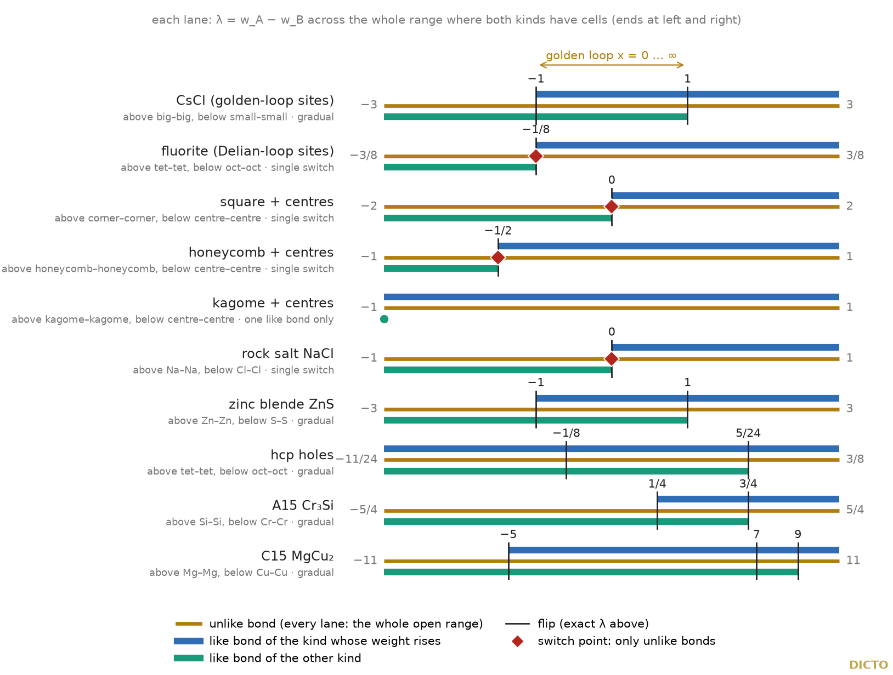
Figure 6.1. The ten walks of the Main theorem, each lane spread over its own coexistence range (ends at left and right, in the network's units, Table 1). Gold: the unlike bond, alive on the whole open range in every lane. Blue: the like bond of the kind whose weight rises with λ; green: the other like bond. Black ticks: the flips, with their exact λ. Red diamonds: the switch points, where only unlike bonds exist. Where blue and green overlap, the hand-over is gradual; where they meet at a diamond, it has a single switch. The golden loop of paper #48 [1] is exactly the overlap (−1, 1) of the CsCl lane, with its ends; the Delian loop of paper #51 [2] is the whole fluorite lane. Kagome + centres has only one like bond (the centre–centre bond appears only at the end λ = −1, as a dot).
1. Where it started
Two loops of DICTO's showed two ways in which bonds can hand over. The same branches may appear in other networks. We walked the weight through ten networks to find out.
Paper #48 [1] found the golden pair (the Icosaxes and the Unborn Axes) in a one-parameter family of space-filling truncated octahedra; paper #51 [2] found the Delian bond (Samson and Delilah) in a one-parameter family between Kepler's rhombic dodecahedron and the cube. DICTO calls the solids the DICTONIC SOLIDS and the pairs the DICTONIC BONDS. Paper #52 [3] proved that both loops are power diagrams of fixed sites of two kinds, the caesium chloride sites and the fluorite sites, with one weight slid between the kinds, and that the bonds in the golden loop hand over gradually while those in the Delian loop hand over at the octet. These branches could show up elsewhere in geometric networks in slightly different guises. This chapter reports the exact study that tests that proposal [S].
2. The set-up
Fix the points; give each kind a weight; let the difference of the weights run. Each piece is the region nearer, in the weighted sense, to its own point than to any other.
Power diagram. Given sites ci with weights wi, the power cell of ci is the set of points p with |p − ci|² − wi ≤ |p − cj|² − wj for all j [6, 7]. The cells are convex and fill space; two of them meet, if at all, in the power bisector of their sites. Two sites are bonded when their cells share a face of full dimension (an edge in the plane, a polygon in space); the bonds are the edges of the dual weighted-Delaunay (regular) subdivision [6]. A bond is unlike when it joins sites of different kinds and like otherwise.
The networks. Each network is a periodic set of sites of two kinds A and B, with wA = λ and wB = 0, so λ = wA − wB (Table 1). The coexistence range is the set of λ at which both kinds have cells of positive volume. A flip is an interior value of λ at which the face lattice of the diagram changes. Following #52, the two like bonds hand over gradually when both are alive on a common open interval, and with a single switch when one dies exactly where the other is born. A switch point is a value of λ at which both kinds have cells and every bond is unlike: the octet is the switch point of the Delian loop.
Network
Kinds A, B
Sites and units
CsCl (golden-loop sites)
big, small
big 2ℤ³, small 2ℤ³ + (1, 1, 1): half cube edge 1. The golden loop's x ∈ [0, ∞] is λ = (x − 1)/(x + 1)
fluorite (Delian-loop sites)
tet, oct
fcc ("oct") and all its tetrahedral holes ("tet"); octet edge 1, the app's units. λ = (3/8)(2t − 1)
square + centres
corner, centre
corners 2ℤ², centres 2ℤ² + (1, 1): square edge 2
honeycomb + centres
honeycomb, centre
the triangular lattice of edge 1, split 2 : 1 into the honeycomb points and the hexagon centres
kagome + centres
kagome, centre
the triangular lattice of edge 1, split 3 : 1 into the kagome points and the hexagon centres
rock salt NaCl
Na, Cl
two face-centred cubic lattices; Na–Cl distance 1
zinc blende ZnS
Zn, S
fcc (Zn) and one set of its tetrahedral holes (S); cubic cell edge 4, Zn–S distance √3, Zn–Zn distance 2√2
hcp holes
tet, oct
the octahedral and tetrahedral holes of ideal hexagonal close packing, the cell centres of the gyrated tetrahedral–octahedral honeycomb (used in DICTO's papers #37a and #40 [4, 5]); hcp edge 1
A15 Cr₃Si
Si, Cr
the A15 (β-tungsten) sites; cubic cell edge 2
C15 Laves MgCu₂
Mg, Cu
the C15 sites; cubic cell edge 8
perovskite ABX₃ (three kinds)
A, B, X
A cube corners, B body centre, X face centres; cubic cell edge 2 (A–X distance √2, B–X distance 1); λ = wA − wX, μ = wB − wX
Table 1. The networks and their units [S, README "Units"]. Hexagonal sites are handled exactly in a 60° basis with a rational metric; a power diagram in such a metric is an affine image of the Euclidean one, with the same combinatorics and the same weights.
3. Main theorem
For every network the whole walk is known exactly: where both kinds live, where the pattern flips, which bonds exist in between, and where only unlike bonds are left.
Main theorem (the census). Let N be one of the ten two-kind networks of Table 1, with λ = wA − wB.
(i) Range. Both kinds have cells of positive volume exactly for λ in the open interval of Table 2. At its lower end every A cell is a single point, at its upper end every B cell is.
(ii) Flips. The face lattice of the power diagram is constant on each open interval between consecutive values in the "flips" column of Table 2, and differs on the two sides of each of them. All flips are rational. Appendix B lists, for every interval and every stop, the face vector of every cell and its bonds by neighbour kind.
(iii) Bond lives. Each bond type is present exactly on the single interval of Table 2 (a bracket marks an end included). In particular, in all ten networks the unlike bond is present on the whole open range and only there.
(iv) Switch points. A switch point exists exactly in four networks: λ = 0 in square + centres, λ = −1/2 in honeycomb + centres, λ = 0 in rock salt and λ = −1/8 in fluorite. There the dual cells are squares (2 corner + 2 centre sites), rhombi (2 honeycomb + 2 centre sites), cubes (4 Na + 4 Cl) and rhombic dodecahedra (6 oct + 8 tet), and every piece has only unlike bonds: 4 and 4; 3 per honeycomb piece and 6 per centre piece; 6 and 6; 8 per oct piece and 4 per tet piece. In the other six networks no value of λ in the range, flip or not, has only unlike bonds.
(v) Three kinds. For the perovskite sites, all three kinds have cells of positive volume exactly on the open rectangle −2 < λ < 2, −1 < μ < 1 (its closure has area 8). It is cut by the three straight walls λ = 0, λ + 2μ = 0 and λ + μ = 1 into five chambers of constant face lattice. Each wall is the birth or death line of exactly one bond type: A–A is present for λ > 0, A–B for λ + 2μ > 0, X–X for λ + μ < 1. A–X and B–X are present in every chamber, B–B in none, and no point of the open rectangle (chamber, wall or corner) has only unlike bonds.
Network
Range
Flips
A–A present
B–B present
Hand-over
Switch point
CsCl
(−3, 3)
−1, 1
big–big (−1, 3]
small–small [−3, 1)
gradual, both on (−1, 1)
none
fluorite
(−3/8, 3/8)
−1/8
tet–tet (−1/8, 3/8]
oct–oct [−3/8, −1/8)
single switch
−1/8 (octet)
square + centres
(−2, 2)
0
corner–corner (0, 2]
centre–centre [−2, 0)
single switch
0 (square tiling)
honeycomb + centres
(−1, 1)
−1/2
honeycomb–honeycomb (−1/2, 1]
centre–centre [−1, −1/2)
single switch
−1/2 (trihexagonal)
kagome + centres
(−1, 1)
none
kagome–kagome (−1, 1]
centre–centre only at −1
none: one like bond
none
rock salt
(−1, 1)
0
Na–Na (0, 1]
Cl–Cl [−1, 0)
single switch
0 (cubes)
zinc blende
(−3, 3)
−1, 1
Zn–Zn (−1, 3]
S–S [−3, 1)
gradual, both on (−1, 1)
none
hcp holes
(−11/24, 3/8)
−1/8, 5/24
tet–tet (−11/24, 3/8]
oct–oct [−11/24, 5/24)
gradual, both on (−11/24, 5/24)
none
A15
(−5/4, 5/4)
1/4, 3/4
Si–Si (1/4, 5/4]
Cr–Cr [−5/4, 3/4)
gradual, both on (1/4, 3/4)
none
C15
(−11, 11)
−5, 7, 9
Mg–Mg (−5, 11]
Cu–Cu [−11, 9)
gradual, both on (−5, 9)
none
Table 2. The ten walks [S, README "Summary table" and "Lives of the bonds"; relay-summary.json]. λ in the units of Table 1. The unlike bond is present exactly on the open range in every row. The ends of the like-bond lives are closed where the other kind's cells have shrunk to points but the like faces survive.
Why: along the weight line every corner of every cell moves on a straight line, so each corner stays a corner until one exact rational value; walking from one such value to the next covers the whole line.
Proof (computer-assisted, exact). Each site set has rational coordinates in a rational metric G. The power inequality between sites i and j is nij·p ≤ bij(λ) with nij rational and bij affine in λ with rational coefficients. A corner is the solution of d such equalities, so it is p(λ) = A⁻¹b(λ), affine in λ with rational coefficients, and the slack of every other inequality at that corner is affine in λ. Hence, at a rational sample λ₀, the face lattice is constant on the open interval on which no slack that is positive at λ₀ reaches 0; its ends are rational [S, scripts/engine.py]. Floats only choose candidate corners; every corner is then solved and tested in exact fractions. The walk starts at λ = 0, finds the interval, analyses its end (the stop), steps just past the stop and repeats, checking that each new interval begins exactly at the previous stop [S, scripts/census.py]. On every interval: the cell volumes, as polynomials in λ, add up to the volume of the lattice cell identically (so no corner and no cell is missing); every face is found in both of its cells with the same measure; Euler's formula holds for every three-dimensional cell; and a distance bound shows that the finite list of sites cannot be cut by a farther site anywhere on the closed interval. At every stop the limit of the interval's corners equals the power cell computed from scratch at that exact λ. (i) Increasing λ only relaxes the inequalities of A cells against B sites, so every A cell grows and every B cell shrinks with λ; each kind therefore has cells on an interval, and the walk ends where a cell volume polynomial vanishes and the cell is checked to be a point. (ii) The interval ends are the flips; that the face lattice differs on the two sides of each flip is read off the interval records. (iii) The life of each bond type is read off the records of all intervals and stops, with a check that it is present on every record between its ends [S, scripts/relay.py]. (iv) All records are searched for parameters with both kinds alive and only unlike bonds; the dual cells and bond counts are read off the corner incidences. (v) For the perovskite, every slack is affine in (λ, μ); exact chambers are found and the plane is explored by stepping across every wall, and every interior wall segment is checked to be covered by chambers on its other side [S, scripts/perovskite.py]; on each of the five open interior wall segments no other wall crosses, so the face lattice is constant along it, and one exact point (its midpoint) shows a like bond there [S, scripts/walls.py]. An independent float computation at three random parameters inside every interval gives the same bond counts [S, scripts/crosscheck.py]. Both DICTONIC loops of #52 are reproduced exactly, including the Delian flip at t = 1/3 and its two equal-edged stops. In all: 543 checks on the walks, 41 on the bond lives (including 9 regressions against #52's study), 47 on the perovskite, 12 float and dual-cell cross-checks, 5 on the perovskite walls; 648 PASS, 0 FAIL (Appendix A). ∎
4. Corollaries
The theorem places DICTO's two loops inside larger families, shows that every switch point is a meeting of two ways to cut the same dual cell, and finds classical tilings at the named stops.
Corollary 1 (the DICTONIC loops inside the census). In half-cube-edge units the golden loop of #48 is λ = (x − 1)/(x + 1), so x ∈ [0, ∞] covers exactly [−1, 1]: the gradual-hand-over interval of CsCl, from flip to flip. Its ends x = 0 and x = ∞ are those flips, where the cells are octahedra and cuboctahedra; beyond them, on (−3, −1) and (1, 3), the CsCl family continues with truncated cubes and octahedra, ending in cubes at ±3 [S, README]. The Delian loop of #51, λ = (3/8)(2t − 1), covers the whole fluorite range, and its switch is the octet.
Corollary 2 (switch points are walls). In any two-kind network, every switch point is a wall: there every bond is unlike, so the edges of every dual cell join sites of different kinds, while a simplex with three or more corners of two kinds always has an edge joining two of the same kind; hence no dual cell is a simplex. At each of the four switch points the dual cells are not simplices (Main theorem (iv)), and on the two sides they are cut in the two possible ways: the dual squares and rhombi into two triangles across one diagonal or the other (2 centre + 1 corner or 1 centre + 2 corner sites; the same for the honeycomb); the dual cubes of rock salt into four corner tetrahedra and one central tetrahedron (3 Cl + 1 Na and 4 Cl below 0, 1 Cl + 3 Na and 4 Na above); the rhombic dodecahedra of fluorite as in #52 [S, data/raw/*.json "dual"]. In the language of regular subdivisions [8, 9] each switch point is a wall where two triangulations of the same non-simplicial cell meet, and the switch is a flip in that sense. For square + centres and rock salt the wall is forced at λ = 0: with equal weights the sites form a lattice (a square lattice, the simple cubic lattice) whose Delaunay cells are squares and cubes; Voronoi's theory of lattice Delaunay subdivisions covers this case [10, 11]. The swap of the two diagonals in a quadrilateral is the elementary two-dimensional flip; the two cuts of the cube used here are its two "corner-cut" triangulations into five tetrahedra [9].
Proposition 1 (the unlike bond can never break). In any face-to-face tiling of space by convex cells of two kinds A and B (periodic or not, locally finite), if both kinds have cells of positive volume then some A cell and some B cell share a facet. Hence, in every two-kind network, the unlike bond is present at every parameter at which both kinds have cells. With three or more kinds, every kind shares a facet with some cell of another kind: each kind keeps some unlike bond, but not necessarily with every other kind.
Why: the A cells and the B cells together fill space, so somewhere an A region must border a B region along a flat piece of wall.
Proof. Let UA be the union of the A cells; it is closed, as a locally finite union of closed sets. It has nonempty interior, and an interior point of a B cell lies in no A cell (cells have disjoint interiors), so UA is a proper subset of space. Hence its boundary ∂UA is nonempty, and space minus ∂UA is the disjoint union of the interiors of UA and of UB, both nonempty, so it is disconnected. ∂UA is a union of pieces of facets of A cells; if every piece had dimension at most d − 2 it could not disconnect space, so ∂UA contains a relatively open piece of positive (d − 1)-measure of a facet of some A cell. The points just across that piece lie in B cells, finitely many near it, so one B cell meets that facet in a set of positive (d − 1)-measure; since the tiling is face-to-face, that set is a common facet, an A–B bond. With more kinds, apply the argument to one kind against the union of all others. ∎ This explains the perovskite: A–B dies on λ + 2μ = 0, but A and B each keep their bonds with X. We found no statement of this elementary fact in the sources searched.
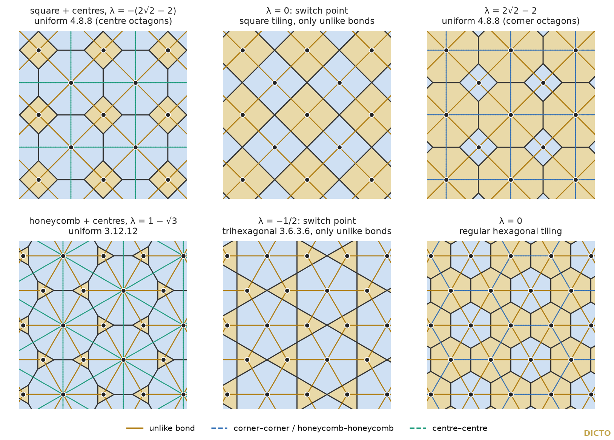
Figure 6.2. The two planar networks with a single switch, drawn at three stops each (float pictures of the exact walks; cells of the A kind gold, of the B kind blue; black dots: the sites of both kinds; bonds drawn between bonded sites). Top: square + centres at λ = −(2√2 − 2), 0 and 2√2 − 2. Bottom: honeycomb + centres at λ = 1 − √3, −1/2 and 0. In the middle column only unlike (gold) bonds are left; on its left the centre–centre bonds (green) are present, on its right the corner–corner or honeycomb–honeycomb bonds (blue). Each dual square (top) or rhombus (bottom) is cut by one like diagonal on each side of the switch.
Proposition 2 (classical: the circumsphere rule). If every tile of a face-to-face convex tiling has a circumscribed circle or sphere, then two tiles that share a facet have their facet in the radical line or plane of their two circles or spheres (its corners have power 0 with respect to both), and the tiling is the power diagram of the tiles' circumcentres with weights equal to the squared circumradii [6, 12, 13, 14]. Every uniform tiling and honeycomb has such tiles.
Corollary 3 (named tilings at the stops). Where a uniform tiling is a stop or a special point of a walk, its λ is the difference of the squared circumradii of the A tile and the B tile, and the census finds exactly that value [S, prior-art.md, find 2]: the uniform truncated square tiling 4.8.8 at λ = ±(2√2 − 2) in square + centres (all edges equal; the octagons are the centre cells for λ < 0 and the corner cells for λ > 0); the uniform truncated hexagonal tiling 3.12.12 at λ = 1 − √3 and the trihexagonal tiling 3.6.3.6 at the switch point λ = −1/2 (one edge length, edge² = 3/4) in honeycomb + centres; the uniform truncated cubic honeycomb (truncated cubes and octahedra) at λ = ±(2√2 − 1) in CsCl; the octet at λ = −1/8 in fluorite and the gyrated tetrahedral–octahedral honeycomb at λ = −1/8 in the hcp holes. These are instances of Proposition 2, not new tilings. Away from uniform tilings the census also finds exact stops the rule does not cover: in rock salt every edge of the tiling has one length at λ = ±(4 − 2√3), where the larger cell has 6 squares and 12 hexagons (the face vector of the chamfered cube) and the smaller is a cube (Figure 6.3).
Corollary 4 (the octet in hexagonal stacking). In the hcp holes, whose diagram at λ = −1/8 is the gyrated tetrahedral–octahedral honeycomb (regular octahedra and tetrahedra; the gyrated octet of DICTO's #37a and one of the stackings of #40 [4, 5]), the octet's flip stays at λ = −1/8: there oct–oct bonds at squared distance 1 die and tet–tet bonds are born (at squared distance 1/2, as in fluorite, and also at 1). But −1/8 is not a switch point: across the gyrated layers each oct piece keeps 2 oct–oct bonds and each tet piece 1 tet–tet bond. Of these cross-layer bonds, tet–tet at squared distance 1/6 lives on the whole range (−11/24, 3/8] and oct–oct at squared distance 2/3 dies only at a second flip, λ = 5/24 (Table 3). The dual cell at an atom at λ = −1/8 is the trapezo-rhombic dodecahedron (6 rhombi and 6 trapezoids), where fluorite has the rhombic dodecahedron (12 rhombi) [S, crosscheck-checks.txt].
Network
Bond family (type @ squared site distance)
Present
hcp holes
oct–tet @ 3/8
(−11/24, 3/8)
oct–oct @ 1 (in-layer)
[−11/24, −1/8)
tet–tet @ 1/2 and @ 1 (in-layer)
(−1/8, 3/8]
oct–oct @ 2/3 (cross-layer)
[−11/24, 5/24)
tet–tet @ 1/6 (cross-layer)
(−11/24, 3/8]
A15
Cr–Si @ 5/4
(−5/4, 5/4)
Cr–Cr @ 1 and @ 3/2
[−5/4, 3/4)
Si–Si @ 3
(1/4, 5/4]
Si–Si @ 4
(3/4, 5/4]
C15
Mg–Cu @ 11
(−11, 11)
Cu–Cu @ 8
[−11, 9)
Mg–Mg @ 12
(−5, 11]
Mg–Mg @ 32
(7, 11]
Table 3. Bond families where a bond type splits by distance [S, README "Lives of the bonds"; relay-summary.json "orbits"]. In the other networks each bond type is a single family.
Corollary 5 (A15 beyond Weaire and Phelan). Weaire and Phelan already used this family: as reported by Sloane and Vaishampayan [15], their weighted Voronoi partition of A15 puts the walls between unlike sites on the plane (X − E)·(D − E) = μ|D − E|² and has the 12-faced and 14-faced cells for 0 < μ < 3/5 [16]; Kashyap and Neuhoff [17] gave its cell volumes. That plane is a power bisector, and in our units λ = (5/4)(2μ − 1), so μ = 0, 1/2, 3/5 are λ = −5/4 (the lower end), 0 (the polyhedral Weaire–Phelan cells, before Weaire and Phelan relaxed them into a curved foam) and 1/4 (the first flip); rescaled, Kashyap and Neuhoff's volume is the Si cell volume (4λ + 5)³/128 on (−5/4, 1/4) [S, prior-art.md, find 1]. What the census adds is the rest of the walk: on (1/4, 3/4) Si–Si bonds exist alongside Cr–Cr; at λ = 3/4 the Cr–Cr bonds (both families) die exactly where a second Si–Si family is born, the Cr cells are tetrahedra with only unlike bonds and the Si cells have 20 triangles, with 12 corners of degree 5 (the face pattern of the icosahedron); at 5/4 the Si cells are truncated octahedra, the Voronoi cells of the body-centred cubic Si sites. Because the first Si–Si family has been alive since 1/4, λ = 3/4 is not a switch point.
Figure 6.3. Two stops in space (float pictures of the exact cells). Left: rock salt at λ = 4 − 2√3, where every edge of the tiling has one length: the Na cell has 6 squares and 12 hexagons, the Cl cell is a cube. Right: A15 at the flip λ = 3/4: the Si cell has 20 triangles with 12 corners of degree 5, combinatorially an icosahedron, and the Cr cell is a tetrahedron with only unlike bonds.
Corollary 6 (perovskite). In the three-kind perovskite the two like bonds A–A and X–X are both present exactly on 0 < λ < 1 − μ, and their two lines meet only at the corner (0, 1) of the region, where the X cells vanish (Figure 6.4). So the hand-over is gradual throughout, and would only become a single switch at the edge of the region. At (0, −1) the B cells are points and the A and X cells are rhombic dodecahedra, the Voronoi cells of the face-centred cubic A + X sites.
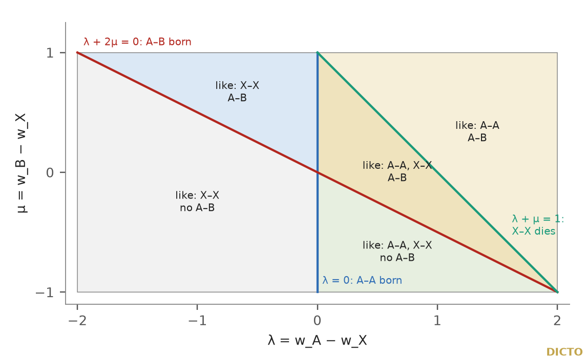
Figure 6.4. The perovskite chamber map (Main theorem (v)): the coexistence rectangle (open; its edges are where one kind has shrunk to points), its three walls and five chambers, each labelled with its like bonds and whether A–B is present. A–X and B–X are present everywhere; B–B never.
5. Observations and open problems
Some patterns hold in every network we computed, but we have not proved them in general. We state them as observations.
Observation 1 (the diagonal swap). At each of the four switch points every like pair bonded on either side is a diagonal of a quadrilateral of the dual cell (a dual square, a dual rhombus, a face of a dual cube, a rhombus of a dual rhombic dodecahedron), and the switch trades one set of diagonals for the other in a single flip (Corollary 2; Figure 6.2; #52, Figure 6.3). This is read off the exact dual cells of these four cases. Open problem: is every switch point in every two-kind network a swap of like diagonals in dual quadrilaterals?
Observation 2 (CsCl and zinc blende). On each of the three intervals (−3, −1), (−1, 1) and (1, 3), every bond-face area and every cell volume in zinc blende is the same polynomial in λ as in CsCl up to a constant factor: unlike faces 4 times larger, like faces 1/√2 times, volumes twice; the flips (±1) and the ends (±3) are the same. For example, on (−1, 1) the like bonds have area (1 ± λ)²/(2√2) in zinc blende against (1 ± λ)²/2 in CsCl, and the unlike bonds √3(3 − λ²) against (√3/4)(3 − λ²). The face counts differ (16 against 14 on (−1, 1)). In both networks the unlike nearest squared distance is 3, but the second kind does not sit in the same kind of hole: in CsCl it sits at the deep hole of the simple cubic lattice, in zinc blende at a tetrahedral hole of the face-centred cubic lattice, which is a shallow hole (the deep hole of fcc is the octahedral one) [18]. Remark (ours, not an explanation): in the units used here the zinc blende sites are exactly half of the CsCl sites (Zn: the points 2(a, b, c) of 2ℤ³ with a + b + c even, that is 2D₃; S: those plus (1, 1, 1)). We have no explanation of the coincidence.
Observation 3 (which networks switch). A single switch occurs in square + centres, honeycomb + centres, rock salt and fluorite; a gradual hand-over in CsCl, zinc blende, the hcp holes, A15 and C15; kagome + centres has only one like bond. In two of the four switching networks the switch is at equal weights, where the sites form a lattice with non-simplicial Delaunay cells; in the other two it is not. We have no criterion that predicts the type from the sites.
Observation 4 (the ends of the range). In nine of the ten networks the coexistence range is (−d², d²), with d the nearest unlike distance (d² = 3, 3/8, 2, 1, 1, 1, 3, 5/4, 11 in the units of Table 1). The exception is the hcp holes: the upper end is 3/8 = d², the lower end −11/24 rather than −3/8. The reason is exact: a tetrahedral hole of hcp has only three octahedral holes at squared distance 3/8 (its fourth neighbour, across the shared face, is the other tetrahedral hole at 1/6), so its cell does not shrink onto its own site but onto the centre (0, 0, c/2) of the triangle shared by the two face-sharing tetrahedral holes. That point is at squared distance 1/24 from the tet site and 1/3 + 1/6 = 1/2 from the three nearest oct sites; equal power, 1/24 − λ = 1/2, gives λ = −11/24. In general the end of the range is ±d² exactly when the vanishing cell shrinks onto its own site; in fluorite each tet site has four oct neighbours around it and does.
6. Conclusion
DICTO's proposal holds: both branches of the DICTONIC loops, the gradual hand-over and the single switch, recur in classical networks, in slightly different guises.
The single switch of the Delian loop reappears in the square lattice with its centres, in the honeycomb with its hexagon centres (where the switch is the trihexagonal tiling) and in rock salt (where it is the cubic honeycomb of equal weights); the gradual hand-over of the golden loop reappears in zinc blende, A15, C15 and the holes of hexagonal close packing. The bond between unlike pieces never breaks in any of them, and Proposition 1 shows it cannot. The golden loop is exactly the gradual stretch of the caesium chloride family, and the Delian loop is the whole fluorite family. One guise is new to the DICTONIC picture: in hexagonal stacking the octet's flip survives at the same weight but stops being a switch point, because the gyrated layers keep like bonds across them, and a second flip follows at λ = 5/24. Open: Observations 1–4, the full exact walk of other three-kind networks, and whether the switch-point networks share a common reason.
7. What is known, and what was not found
Power diagrams, their flips, the named tilings and the A15 family up to its first flip are known. We did not find the full walks of these networks.
Known. Power (Laguerre) diagrams and their duality with regular subdivisions [6, 7]; regular subdivisions change only at the walls of the secondary fan, where non-simplicial cells are cut in two ways [8, 9], including for periodic sets [19] and lattices (Voronoi's L-types [10, 11]); the circumsphere rule and the criteria for a tiling to be a power diagram [12, 13, 14]; the uniform tilings and honeycombs at the stops [20, 21, 22]; the classical Voronoi cells at equal weights and at the ends (squares, hexagons, triangles, rhombille rhombi; cubes, rhombic dodecahedra, truncated octahedra, the triakis truncated tetrahedra of diamond, hexagonal prisms) [18, 20]; the Weaire–Phelan cells as the A15 Voronoi cells and the A15 weighted family for 0 < μ < 3/5, our λ ≤ 1/4, with its cell volumes [15, 16, 17]; the C15 cells [23, 24]; radical tessellations of binary crystals, including one point of the rock salt interval (0, 1): a crystal of large spheres on the face-centred cubic lattice with small spheres in the octahedral pores, whose large-sphere radical polyhedra have 6 quadrangles and 12 hexagons and whose small-sphere polyhedra are cubes [25]; Dirichlet-domain types of cubic lattice complexes changing at critical positional parameters (unweighted; the closest crystallographic analogue) [26]; the two DICTONIC loops as power diagrams [3]; the gyrated octet in DICTO's earlier work [4, 5].
Not found, in the sources listed in the Appendix under Chapter 6: the full weight walks of square + centres, honeycomb + centres, kagome + centres, rock salt, zinc blende, the hcp holes, A15 beyond λ = 1/4, C15 and the perovskite, with their exact flips, bond lives and switch points; the split of these networks into gradual and single-switch hand-overs; the switch point of honeycomb + centres at the trihexagonal tiling; the second flip of the hcp holes at 5/24; the CsCl–zinc blende coincidence; the rock salt stop λ = 4 − 2√3. Several are elementary and may well be known in the radical-tessellation or crystallographic literature; Koch 1973 [26] and the radical-tessellation papers were not read in full. "Not found" is limited to those sources.
Appendix A. Checks
Part
What is checked
PASS
FAIL
walks (census.py)
per interval: volume sum identity, face to face, Euler, distance bound; per stop: limit = cell from scratch; classical cells. square 13, honeycomb 18, kagome 11, CsCl 25, fluorite 58, rock salt 42, zinc blende 61, hcp holes 48, A15 60, C15 207
543
0
bond lives (relay.py)
each bond type on one interval; single edge length at the planar switch points; 9 regressions against #52's study
41
0
perovskite (perovskite.py)
chambers: distance bound, Euler, volume sum, face to face; bounded region; every wall covered; rhombic dodecahedra at (0, −1)
47
0
cross-check (crosscheck.py)
float cells at 3 random parameters per interval (10 networks); exact dual cells at the two octet-type stops
12
0
perovskite walls (walls.py, added after review)
exact cells at the midpoints of the five interior wall segments: all kinds alive, a like bond present
5
0
total
648
0
Exact arithmetic: Python fractions and sympy (polynomials in λ, or in λ and μ); a number is zero only if it is exactly zero; floats only choose candidate corners and serve as the independent cross-check. Run on one machine, one job at a time, about 3.5 minutes in all [S, README "Run times"].
Appendix B. The walks in full
Generated from the study's data/raw/tables.md [S] when this paper is built (not retyped). For every interval (in brackets) and every stop: the bond types present, and for each kind its cell (face vector: 8×3+6×4 means 8 triangles and 6 squares; in the plane, n-gon) and its bonds by neighbour kind; "point" means the cell has shrunk to a point.
Chapter 7. David and Goliath: Jessen's Icosahedron and the Tetrahedron in the A15 Weight Walk
From paper #55 (version 1), DICTO DOI 10.5281/zenodo.23632358
Theorem: in the A15 (Cr3Si) structure, the power diagram with weight difference 3/4 between the Si and Cr sites is exactly a face-to-face tiling of space by Goliath, the convex hull of Jessen's orthogonal icosahedron, and David, a tetragonal disphenoid, two Goliaths and six Davids per cubic cell.
Paper #53 [1] slid one number, a weight, between the two kinds of points of ten crystal arrangements and recorded, exactly, every tiling of space that appears on the way. In the A15 alloy structure (the arrangement of Cr3Si, and of the Weaire–Phelan foam) one stop stood out: at weight difference 3/4 the space-filling pieces are a 20-faced icosahedron around every Si point and a small tetrahedron around every Cr point. DICTO named the pair Goliath and David. Here we prove the stop exactly and identify Goliath: its corners are exactly those of Jessen's orthogonal icosahedron, so Goliath is that famous non-convex solid's convex hull. Goliath has the same shape as the classical Z12 icosahedron of A15 (Frank and Kasper), and the whole tiling is the classical picture of A15 as icosahedra and tetrahedral holes, moved by half a body diagonal; that picture is known. What we did not find in the sources searched is that the weight walk lands exactly on it, at 3/4, and the plain statement that the A15 icosahedron is Jessen's convex hull. We then place David and Goliath among the known pairs that the same walks produce: the octet, octahedra with cuboctahedra, the Weaire–Phelan cells, rock salt's equilateral chamfered cubes with cubes, and zinc blende's capped octahedra with regular tetrahedra. Main theorem. Let the A15 sites be Si at 2ℤ³ and 2ℤ³ + (1, 1, 1) and Cr at 2ℤ³ + {(1/2, 0, 1), (3/2, 0, 1), (1, 1/2, 0), (1, 3/2, 0), (0, 1, 1/2), (0, 1, 3/2)}, with weights wSi = 3/4 and wCr = 0. Then the power cell of the Si site at the origin is Goliath = conv{(0, ±1/2, ±1) and its cyclic permutations}, with 20 triangular faces, 12 corners of degree 5, 30 edges and volume 7/2; the power cell of a Cr site is David, a tetragonal disphenoid centred on it, with two opposite edges of length 1, four of length √(3/2), and volume 1/6. Every cell is a copy of one of the two; per cubic cell of edge 2 there are 2 Goliaths and 6 Davids, and 2 · 7/2 + 6 · 1/6 = 8. Each David meets only Goliaths. All of this is exact.
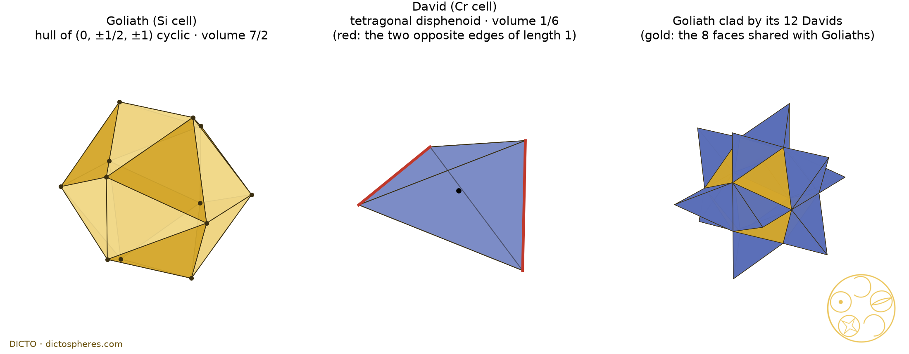
Figure 7.1. The two pieces of the Main theorem (float pictures of the exact cells). Left: Goliath, the Si cell, with its 12 corners (0, ±1/2, ±1) cyclic; dark gold, the 8 equilateral faces (edge √(3/2)); light gold, the 12 isosceles faces (base 1, legs √(3/2)). Centre: David, the Cr cell (black dot: its Cr site), with its two opposite edges of length 1 in red; the other four edges have length √(3/2). Right: Goliath with the 12 Davids that share its isosceles faces; the 8 gold faces left visible are the faces shared with the 8 neighbouring Goliaths along the body diagonals.
1. Where it started
The census of #53 walked a weight through A15 and noted, at 3/4, an icosahedron and a tetrahedron that fill space together. DICTO named them and proposed to follow this pairing first.
Paper #52 [2] showed that DICTO's two loops of space-filling pairs, the golden loop of #48 [4] and the Delian loop of #51 [3], are power diagrams of fixed sites of two kinds with one weight slid between the kinds. Paper #53 [1] did the same, exactly, for ten classical networks. In A15 the walk runs over −5/4 < λ < 5/4, λ = wSi − wCr, with flips at 1/4 and 3/4 [1, Table 2]. Up to 1/4 the family is Weaire and Phelan's [5, 6, 7]; at 3/4 the census recorded Si cells with 20 triangles and 12 corners of degree 5, and Cr tetrahedra [1, Corollary 5], but did not identify them. It was DICTO's idea to pursue this icosahedral pairing of the census; DICTO named the pieces David and Goliath on 25 October 2026. The exact study is [S].
2. The set-up
Each piece is the region that is nearer, in the weighted sense, to its own point than to any other point.
For sites ci with weights wi, the power cell of ci is the set of points p with |p − ci|² − wi ≤ |p − cj|² − wj for all j [8]. The cells are convex and tile space face to face. Two sites are bonded when their cells share a face. A weight walk slides the weight difference λ between the two kinds over its whole range and records the power diagram at every λ (#53 [1]). We use the units of #53: A15 in the cubic cell of edge 2, sites as in the Main theorem (space group Pm3̄n; Si on 2a, Cr on 6c), weights wSi = λ, wCr = 0. Jessen's orthogonal icosahedron [9] is the non-convex polyhedron with the 12 corners (0, ±1, ±2) and their cyclic permutations, whose dihedral angles are all right angles; we use its corner set scaled by 1/2.
3. Main theorem
Main theorem (David and Goliath). In A15 at λ = 3/4:
(i) the power cell of the Si site at the origin is Goliath, the convex hull of the 12 points (0, ±1/2, ±1), (±1, 0, ±1/2), (±1/2, ±1, 0); it is a convex icosahedron with 20 triangular faces, 12 corners all of degree 5 and 30 edges, 6 of length 1 and 24 of length √(3/2); each of its 8 equilateral faces is shared with a neighbouring Goliath (around the Si site at squared distance 3), each of its 12 isosceles faces with a David (around the Cr site at squared distance 5/4); its volume is 7/2;
(ii) the power cell of the Cr site (1/2, 0, 1) is David, the tetrahedron with corners (0, ±1/2, 1), (1, 0, 1/2), (1, 0, 3/2): a tetragonal disphenoid with its two opposite edges of length 1, its other four of length √(3/2), four congruent isosceles faces, centroid at its Cr site, and volume 1/6; all four faces are shared with Si cells;
(iii) every other cell is the image of Goliath or David under a symmetry of the structure, and the tiling has 2 Goliaths and 6 Davids per cubic cell: 2 · 7/2 + 6 · 1/6 = 8, the volume of the cell;
(iv) Goliath's corner set is exactly Jessen's corner set scaled by 1/2, so Goliath is the convex hull of Jessen's orthogonal icosahedron (scaled by 1/2).
Why: every corner of the tiling sits at the same weighted distance, 1/2, from four Si and four Cr points, and the two pieces exactly use up the volume of the cell.
Proof. The cells were computed in exact rational arithmetic [S, exact_a15.py → exact_a15.txt; checks/exact_pairs.py → exact_pairs.txt]: every corner is the intersection of three bisector planes and satisfies all the other inequalities exactly; faces, edges, edge lengths, degrees and volumes are then exact. The computation uses only the sites within squared distance 6 of the centre; fewer sites means fewer inequalities, so each computed cell contains the true cell. Two Si sites and six Cr sites per cubic cell, related by the symmetries of Pm3̄n (which permute the sites of each kind and keep the weights), give 2 cells congruent to Goliath and 6 congruent to David per cell; their volumes add to 2 · 7/2 + 6 · 1/6 = 8, the volume of the cubic cell, which the true cells fill exactly. A convex polytope containing another of the same volume equals it, so the computed cells are the true cells. (i)–(iii) are then read off; (iv) is a direct comparison of the 12 corners. As a hand check: the corner (0, 1/2, 1) has power exactly 1/2 to the Si sites (0, 0, 0), (0, 0, 2), (±1, 1, 1) (squared distances 5/4, minus 3/4) and to the Cr sites (±1/2, 0, 1), (0, 1, 1/2), (0, 1, 3/2) (squared distance 1/2), and power at least 2 to every other site [S]. ∎
λ = 3/4 is a flip of the walk [1]: there the Cr–Cr bonds (at squared distances 1 and 3/2) die and the Si–Si bonds along the cube axes (squared distance 4) are born, while the Si–Si bonds along the body diagonals (squared distance 3) have been present since 1/4. So at λ = 3/4 exactly, the bonds are Si–Cr and Si–Si at squared distance 3: David meets only Goliaths. It is not a switch point in the sense of #52 and #53.
4. Goliath is the classical A15 icosahedron
Goliath is not a new shape: it is the icosahedron of twelve Cr atoms around each Si atom that crystallographers have drawn since 1958, turned a quarter turn, and its corners are Jessen's.
Corollary 1 (Goliath and the Z12 polyhedron). The 12 Cr sites nearest the Si site at (1, 1, 1) are exactly Goliath + (1, 1, 1). Hence Goliath is congruent to the Si-centred Z12 coordination icosahedron of A15 of Frank and Kasper [10, 11; 12]; around the Si site at the origin itself the Z12 icosahedron is the other pyritohedral setting, (±1/2, 0, ±1) cyclic, which is Goliath turned 90° about a cube axis. Likewise David + (1, 1, 1) is a tetrahedron of four Cr sites, an empty Cr4 tetrahedron of the structure. Exact [S, exact_pairs.txt].
Corollary 2 (the tiling is the classical picture, shifted). Translation by (1, 1, 1), half a body diagonal of the cubic cell, maps the Si sites onto Si sites and the Cr sites onto the 6d sites (the centres of the empty Cr4 tetrahedra), and back. Under it the David and Goliath tiling becomes the tiling of space by the Si-centred Cr12 icosahedra and the empty Cr4 tetrahedra, 2 + 6 per cell. Each such icosahedron is the union of the 20 SiCr3 tetrahedra of the A15 Delaunay complex at the Si site; this picture of A15 as a tetrahedrally close-packed structure is classical [10, 11, 12, 13, 14, 15]. The corners of the David and Goliath tiling are the 6d sites. We do not claim the tiling as new.
Corollary 3 (the A15 icosahedron is Jessen's convex hull). In fractional coordinates the twelve Cr around a Si are (±1/4, 0, ±1/2) and their cyclic permutations, which is the shape (0, ±1, ±2) cyclic up to scale and a quarter turn: the corner set of Jessen's orthogonal icosahedron [9]. So the Z12 Frank–Kasper polyhedron of A15 is, as a shape, the convex hull of Jessen's icosahedron. This follows at once from the coordinates; we state it because we did not find it stated in the sources searched (Section 7).
What is new here. Not found in the sources searched: (a) that the A15 weight walk lands exactly on this tiling, at λ = 3/4, with the cell corners on the 6d sites; the published walks stop at λ = 1/4 [5, 6, 7], and #53 [1] first computed the rest; (b) the plain statement of Corollary 3.
5. David and Goliath among the supporting pairs
The same weight walks also produce well-known pairs. They do not add novelty, but each is one more instance of the same mechanism: two kinds of points, one weight, and at special weights a pair of simple convex pieces that fill space.
stop found in #53 [1]; a re-gluing of the octet (below)
Table 1. Pairs of convex space-filling pieces at stops of the weight walks of #53 [1]. Volumes in the network's units; "per cell" counts pieces per cubic cell (fluorite, CsCl: per site of the larger kind). The rock salt and zinc blende rows are proved exactly here in arithmetic over ℚ(√3) [checks/exact_pairs.txt]; the others are exact in [1, 2].
Rock salt. At λ = 4 − 2√3 the Na cell has 6 squares (faces to the 6 nearest Cl) and 12 hexagons (faces to the 12 nearest Na), 32 corners and 48 edges, and the Cl cell is a cube; every edge of both has the same length 2√3 − 3, and the volumes add to 2, the share of one Na and one Cl in the cell of edge 2. At −(4 − 2√3) the roles of Na and Cl are exchanged. It is the rhombic dodecahedral honeycomb with its four-valent corners cut off into cubes, at the one cut where all edges are equal.
Zinc blende. At λ = 1 the Zn cell is a regular octahedron with corners at distance 2 from its Zn site along the cube axes, with flat caps on the four faces facing the four empty tetrahedral holes, the cap apices at those holes; the S cell is a regular tetrahedron. Edges: 12 octahedron edges of length 2√2 and 12 cap edges of length √3; 4 · 40/3 + 4 · 8/3 = 64, the cell. Each cap is one quarter of a regular tetrahedron (edge 2√2), cut from its centre. So the tiling is the octet honeycomb of edge 2√2 in which the tetrahedra around the empty holes are each split into four cones and the cones given to the neighbouring octahedra. At λ = −1, Zn and S exchange roles. We make no novelty claim for this description.
Observation 1 (the smaller piece touches only the larger kind). In five of the six pairs of Table 1 the smaller piece has only unlike bonds: David meets only Goliaths, the zinc blende tetrahedra only capped octahedra, the rock salt cubes only chamfered cubes, the CsCl octahedra only cuboctahedra, and in the octet both kinds meet only the other. The exception is the Weaire–Phelan pair at λ = 0, where the 14-faced cells also meet each other. This is read off the bond lives of #53 [1, Table 2]: in each case the like bond of the smaller kind has died by that λ. We state it as an observation, not a theorem.
6. Open directions
The same tool can be pointed at the relatives of A15.
The other Frank–Kasper phases, among them σ, Z and C15 (whose walk #53 computed [1]), are built from the same Z12, Z14, Z15 and Z16 coordination polyhedra [10, 11]; their weight walks, and walks with one weight per coordination type, are a natural place to look for further stops at which the cells become the coordination polyhedra or their hulls. The icosahedral order of these phases links them to quasicrystals and their periodic approximants [12, 18], and DICTO's long-term aim of bridging periodic and aperiodic order suggests following the Jessen hull into such approximants. In four dimensions, where polytetrahedral order is modelled on the 600-cell [12], the same weight walk could be run on four-dimensional point sets of two kinds. These are directions, not claims.
7. What is known, and what was not found
Known. Power diagrams and the regular subdivisions they are dual to [8]; Jessen's orthogonal icosahedron and its convex hull [9; 19, 20]; the A15 structure as tetrahedrally close-packed, with the Si-centred Z12 icosahedron and Cr-centred Z14 polyhedron [10, 11, 13, 14, 15], and polytetrahedral order in general [12]; the A15 weighted Voronoi family up to λ = 1/4 [5, 6, 7]; the octet and the cuboctahedron–octahedron honeycomb [16], and the chamfered cube; tilings of space by tetrahedra and octahedra [21, 22]; the weight walks of #53 [1] and the DICTONIC loops [2, 3, 4].
Not found in the sources searched (study file prior-art.md [S]: DICTO's reference library, about five web searches, Wikipedia and Polytope Wiki on Jessen's icosahedron, Crossref; on top of the search for #53): the A15 power diagram at λ = 3/4 as this tiling; the statement that the A15 Z12 polyhedron is Jessen's convex hull; any tiling of space by Jessen hulls and tetrahedra in the tiling literature [21, 22] or the Jessen literature [19, 20]. Pearson's and Shoemaker's crystallographic descriptions may state the icosahedron-plus-tetrahedron decomposition in words, and the works of Sinogowitz, Wells and Goldberg were not reached; "not found" is limited to the sources searched.
Chapter 8. Sonsam and Lahdeli: the Delian Bond on the Twinned Octet, with Ian Dury, Blockhead and Keyed Switch Points
From paper #56 (version 1), DICTO DOI 10.5281/zenodo.23635823
Theorem: on the holes of ideal hexagonal close packing (the twinned octet) the weight walk of paper #53 passes, exactly, through the octet, then one point where all pieces have equal volume √2/6 (Sonsam and Lahdeli, at the single root of an irreducible cubic), then a stop of Ian Durys and 60° rhombohedra (13√2/54 and √2/54), and ends in Blockheads alone (√2/4); on the cubic octet the same walk goes from the octet straight to cubes, with Samson and Delilah equal at λ = 3/8 − ∛4/4.
This chapter is about webs of bonds: when pieces fill space, each shared face is a bond, and the bonds together make a network that rewires as the pieces change (#52, #53 [6, 1]). Here we follow that network on a second stacking, and show that keys change the pieces but never the network. Stack layers of balls in the cubic way (ABCABC…) and the gaps between them are octahedra and tetrahedra: the octet. Stack them in the hexagonal way (ABAB…), each layer a mirror image of its neighbours across it, and the gaps are the same octahedra and tetrahedra, joined across the mirror planes: the twinned octet. Paper #53 [1] slid one number, a weight, between the two kinds of gap and recorded every way space splits on the way. On the cubic octet, at one exact weight, λ = 3/8 − ∛4/4 (the cube root of 2, squared: the number of the Delian problem, doubling the cube), the two pieces have equal volume: DICTO's Samson and Delilah [3]. We follow the same walk on the twinned octet. It has its own equal-volume point, at the single root of an irreducible cubic; there the two pieces are new solids, which DICTO named Sonsam (19 corners, one face a nine-sided polygon lying on the mirror plane) and Lahdeli (12 corners), the syllables swapped as the stacking is mirrored. Further on, the twinned walk makes a stop the cubic walk does not have: Ian Dury (16 corners) with the classical 60° rhombohedron; and where the cubic walk ends in cubes the twinned one ends in Blockheads (10 corners), the twin of the cube. Every volume is exact: √2/6, 13√2/54, √2/54, √2/4. Moving a cap from one piece into its neighbour keeps the tiling and its web of bonds; done with the new pairs this gives DICTO's keyed forms Sonsam-K and Lahdeli-K, and Ian Dury-K with Rhombo-K, a six-pointed star. Finally we read DICTO's Sunstar lattice (#42 [4]) in the same light: it is rock salt's switch point (#53) keyed with Euclid's roofs. The two new walks' pieces and the keyed forms were not found in the sources checked.
Figure 8.1. Top: the cubic octet walk, Samson and Delilah at equal volume, then cubes at λ = 3/8. Bottom: the twinned walk, Sonsam and Lahdeli at equal volume, Ian Dury with the 60° rhombohedron at λ = 5/24, Blockhead at λ = 3/8. Same scale throughout.
1. Where it started
After #53 and #55 [1, 2] DICTO theorised that more bonds might be "hiding in plain sight" in the census networks, proposed other rhythms of volume than equality (doubling, tripling), and proposed looking for a bond network "similar but different" to the golden and the Delian. We searched the seven three-dimensional census walks for points where the two kinds of piece stand in a simple volume ratio (1, 2, 3, 4 and their inverses, φ±1, φ±2, 1 + √2). Most of them give no new shape: on rock salt and zinc blende the ratio passes every value with the same two shapes, and the Laves phase gives the classical Frank–Kasper cells. One walk did give new shapes: the twinned octet. Keyed versions of the new pairs followed, and DICTO named them all.
2. The set-up
Each gap gets a share of space; a weight decides how big a share; slide it and the shares change shape.
The sites are the octahedral and tetrahedral holes of ideal hexagonal close packing (ball spacing 1): per cell two octahedral and four tetrahedral sites, cell volume √2. Each site gets a weight, woct = 0 and wtet = λ, and owns the points x with |x − p|² − wp smallest: a power diagram [5], whose cells are convex, fill space face to face and change only at isolated values of λ. Two cells sharing a face are bonded; the web of bonds is the graph whose nodes are the cells and whose links are the shared faces [6]. The walk is λ sliding from one value to another; the web stays the same on each open stretch and rewires only at the stretch ends, the stops, which are the finitely many λ at which a face of some cell shrinks to nothing or appears [1, 5]. Units and λ are those of the census [1] (data file hcpholes), the same as for the cubic octet ("delian") there, so the two walks compare directly. Exact computations are in ℚ(√2) and in the exact real roots of integer polynomials (sympy), with the census engine; the keyed solids are float constructions (manifold3d) with the checks stated.
3. Main theorem
Theorem. On the twinned octet the walk has, for −1/8 ≤ λ ≤ 3/8, exactly these stops and pieces:
λ = −1/8: the octet's regular octahedra and tetrahedra, twinned.
On −1/8 < λ < 5/24 every tetrahedral site has the same cell, a solid of 19 corners with 6 triangles, 3 pentagons, 3 hexagons and one 9-gon, and every octahedral site a solid of 12 corners with 2 triangles and 6 pentagons. Their volumes are equal at exactly one λ, the single root in this stretch of 1536λ³ + 5184λ² − 3384λ + 11 = 0 (λ ≈ 0.0032669570), a cubic with no rational root. There both have volume √2/6: these are Sonsam and Lahdeli.
λ = 5/24: the tetrahedral cells are Ian Durys (16 corners: 6 triangles, 3 squares, 4 hexagons; volume 13√2/54) and the octahedral cells are 60° rhombohedra of edge 1/3 (volume √2/54), bonded only to Ian Durys.
λ = 3/8: the octahedral cells have shrunk to points; the tetrahedral cells are Blockheads (10 corners: 6 triangles, 3 squares, 1 hexagon; volume √2/4), four per cell.
On the cubic octet the walk goes from the octet (λ = −1/8) to cubes (λ = 3/8) with no stop between, and the equal-volume point is λ = 3/8 − ∛4/4, where Samson and Delilah [3] both have volume √2/6.
Proof. The census [1] computed every stretch of both walks exactly; checks.py [S] re-derives what the theorem uses from the census engine. On the stretch (−1/8, 5/24) each cell's volume is a cubic polynomial in λ; all four tetrahedral sites give the same one, and Vtet − Voct is −3√2/6144 times the stated cubic. The cubic has no rational root (by the rational-root test none of the candidates ±d/e, d | 11, e | 1536, is a root), so, being of degree 3, it is irreducible over ℚ; it has exactly one root in the stretch. The census finds each stretch's ends exactly, as the λ where a face of some cell shrinks to nothing, and the stretches abut, so no stop is missed. Two octahedral and four tetrahedral pieces fill the cell of volume √2, so at equal volume each is √2/6. At 5/24 and 3/8 the volumes follow by evaluating the polynomials of the adjacent stretches (they agree from both sides), and the rhombohedron's √2/54 is (1/3)³/√2, the volume of a 60° rhombohedron of edge 1/3. The cubic octet's equal-volume point and Samson's and Delilah's volume are checked the same way. All 16 checks pass. □
The webs of bonds. Each stop is a rewiring of the web (bonds per piece, from the census [1]): at the octet, on the cubic side each octahedron bonds to 8 tetrahedra and each tetrahedron to 4 octahedra, while on the twinned side each octahedron bonds to 6 tetrahedra and 2 octahedra (its column) and each tetrahedron to 3 octahedra and 1 tetrahedron (across the mirror plane); at 5/24 on the twinned side each rhombohedron keeps only its 6 bonds to Ian Durys, and each Ian Dury has 3 rhombohedron and 10 Ian Dury bonds; at 3/8 the octahedral sites have dropped out of the web, and the tetrahedral sites are bonded 6 to a cube on the cubic side and 10 to a Blockhead on the twinned side. The equal-volume points are not rewirings: there the web is the one of its stretch, and what is special is the balance of the two kinds. The census [1] lists the bonds of every piece on every stretch.
stop
cubic octet
twinned octet
λ = −1/8
octahedra + tetrahedra
octahedra + tetrahedra, twinned
equal volume √2/6
Samson + Delilah, λ = 3/8 − ∛4/4
Sonsam + Lahdeli, root of the cubic
λ = 5/24
(no stop)
Ian Dury 13√2/54 + 60° rhombohedron √2/54
λ = 3/8
cubes
Blockheads √2/4
The mirrored stacking makes the same journey with one extra stop, and every piece on the way has a mirrored twin of a cubic piece.
4. The pieces
Counts. Sonsam: 19 corners, 30 edges, 13 faces; Lahdeli: 12, 18, 8; Ian Dury: 16, 27, 13; Blockhead: 10, 18, 10 (each satisfies corners − edges + faces = 2, and the face sizes add up to twice the edges). Coordinates of all pieces are in the study files [S] (the census data and the OBJ files of the figures).
Sonsam's nine-sided face lies on a mirror plane of the stacking, between two tetrahedral sites facing each other across it; it is therefore a bond between two Sonsams, and no keying between the two kinds can remove it. Lahdeli, with its two triangles and six pentagons, is Delilah's twin; on the cubic side, at the same point of the walk, Delilah is a regular octahedron. Ian Dury has only the angles of the cube family (35.26°, 54.74°, 90°, 120°, 135°). Blockhead stands where the cubic walk has its cube, and has the same volume √2/4, since both are a quarter of a cell of volume √2. The 60° rhombohedron is classical (two regular tetrahedra and a regular octahedron make one); it is not new and has no new name.
5. Keyed forms
If two pieces touch, a bump can move from one into a dent in the other, and the pieces still fill space.
Keying lemma. Let P and Q be pieces of a tiling sharing a face F, and K a solid inside P whose base lies inside F and which touches no other piece. Replacing P, Q by P \ K and Q ∪ K gives again a tiling of space (the pieces are no longer convex, and P \ K and Q ∪ K now meet along F minus the base and along the sides of K, so the tiling is no longer face to face in the strict sense); P \ K and Q ∪ K still meet, and every other contact is unchanged, so the web of bonds is the same. Proof: (P \ K) ∪ (Q ∪ K) = P ∪ Q and the two parts do not overlap; K touches only P and Q, so no other piece or contact changes. □
We applied it to the new pairs with a cone over each shared face, shrunk to 80% about its centre (the size used for DICTO's earlier keyed pairs; smaller keys give the same shapes in miniature, larger ones make knife edges), with apex at the giving piece's centre (option A), or a tetrahedral tooth (option B), both directions; a keying was kept when each piece stayed one solid without holes and the cell volume was conserved. For Sonsam and Lahdeli three keyings pass; DICTO chose Sonsam giving cones to Lahdeli: Sonsam-K (≈ 0.1735) and Lahdeli-K (≈ 0.3602). For Ian Dury and the rhombohedron three pass; DICTO chose Ian Dury giving cones: Ian Dury-K (≈ 0.3111) and Rhombo-K (≈ 0.0849), the rhombohedron grown into a six-pointed star (Figure 8.2). These volumes are floats (double precision; each removed key's base is set 10−4 past its face so that it cuts cleanly, which moves the volumes by less than 10−4); the shapes are defined exactly by the rule.
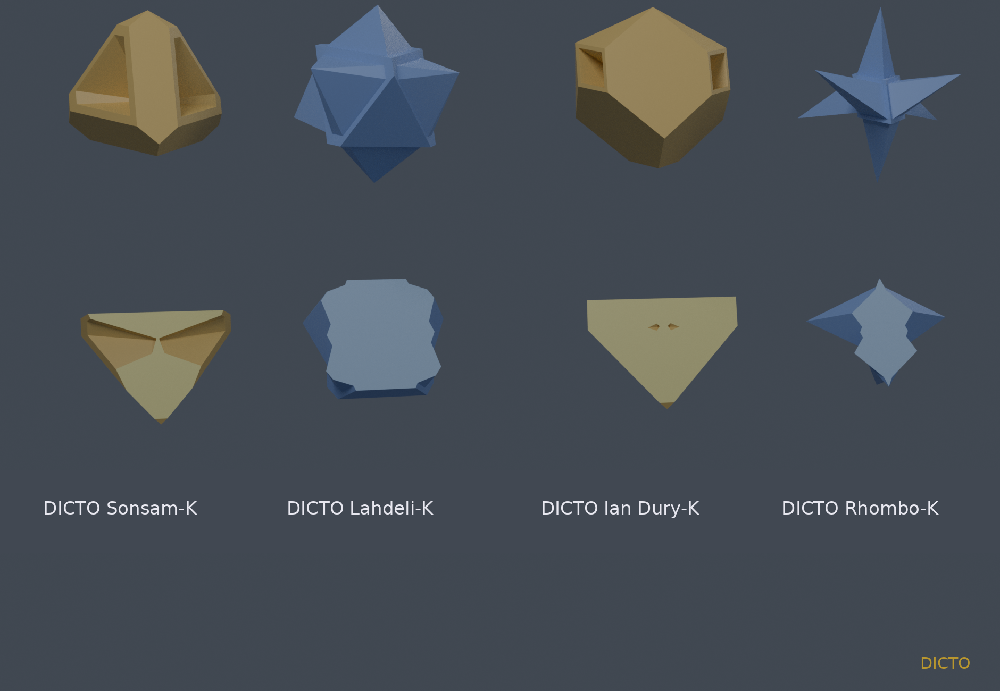
Figure 8.2. The keyed pairs, whole (top) and, below, each piece cut in half to show the keys and the sockets: Sonsam-K and Lahdeli-K; Ian Dury-K and Rhombo-K.
6. The Sunstar as a keyed switch point
Paper #42 [4] set regular dodecahedra on alternate cubes of a cubic grid, built the dodecahedron as Euclid's cube with a roof on each face [7], and proved that each other cube is filled by a Dogstar, Hart's stellation 8 [8]: the cube minus the six roofs that reach into it. Those facts are #42's, and #42 also set blocks of eight dodecahedra rock-salt fashion. The reading added here joins them to #53: dodecahedra and Dogstars sit on the two sites of rock salt, whose walk has a single switch point where every cell is a cube and only unlike sites are bonded [1]. By the keying lemma, moving each roof from its Dogstar cube to the dodecahedron next to it keeps that switch point's tiling and web: the Sunstar lattice is rock salt's switch point, keyed with Euclid's roofs (Figure 8.3). With cube edge 2: dodecahedron 10 + 2√5, each roof 2φ/3, Dogstar 6 − 2√5 = 4/φ², the two together 16, two cubes; the app's solids agree with cube ± roofs to 10−7 [S].
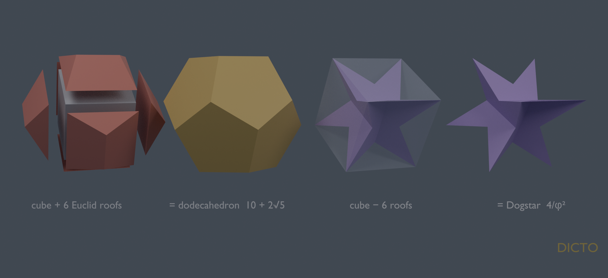
Figure 8.3. Cube + 6 Euclid roofs = dodecahedron; cube − 6 roofs = Dogstar (#42). In rock salt's switch point every cell is a cube; the roofs are the keys.
7. Open directions
A self-keyed Blockhead. At λ = 3/8 Blockheads touch only Blockheads; keyed through their own faces they would be the twin of DICTO's Hexa-Key, the keyed cube. This needs a choice of which faces give and which receive.
Other stackings. DICTO's OG family was placed on every close-packed stacking (#40); the walk on those stackings would mix Samson, Sonsam and their kin layer by layer.
8. What is known, and what was not found
Known and credited: power diagrams [5]; the census walks, the cubic octet's pieces and Samson and Delilah [1, 3]; the octet and its twinned form; the 60° rhombohedron; Euclid's roofs [7]; the Dogstar and the Sunstar lattice with their exact proofs [4, 8]; the Frank–Kasper cells of the Laves phase. Not found in the sources checked: Sonsam, Lahdeli, Ian Dury and Blockhead as solids, the twinned walk's equal-volume point, and the keyed forms; and the reading of the Sunstar lattice as a keyed switch point of rock salt. Searched: DICTO's reference library (four ask-library queries on Voronoi and power cells of the holes of hexagonal close packing), and two web searches, which found descriptions of the holes (number and size) but not of the cells around them. These solids are easy to compute, so an unnamed drawing of them may exist.
Chapter 9. The Icosaxes Hexa: Bloom, Bud and Seed
From paper #59 (version 2), DICTO DOI 10.5281/zenodo.23677485
Twenty golden truncated octahedra closing round a centre in three golden steps, and the network they make
The DICTO Hexa (#18) is eight DICTO Jewels that pass into each other until they close into one block. The same move works with icosahedral symmetry. We place twenty Icosaxes — DICTO's golden truncated octahedra (#48) — on the corners of a dodecahedron and slide them in towards the centre. They first touch as an open bloom with twelve windows, the Icosaxes Bloom; at exactly 1/φ of that distance the windows close into a bud round a hollow, the Icosaxes Bud; at exactly one third the hollow fills: the Icosaxes Seed, one solid. In the lattice, eight Icosaxes round one Unborn Axes make a block, and these blocks form a network in which every Icosaxes is shared by exactly two blocks.
1. The idea
DICTO's idea (27 October 2026): "a stella jewel icosahedral kagome style network", with "a hex jewel style treatment" — the Hexa as the inspiration, not the shape. The pieces are the golden-split pair, the Icosaxes and the Unborn Axes (#48, DICTO DOI 10.5281/zenodo.23596362), which fill space together as the DICTO Jewel and the stella do in the Stella–Jewel lattice (#17, DICTO DOI 10.5281/zenodo.23376317; #18, DICTO DOI 10.5281/zenodo.23376320).
2. Main theorem
Theorem. Place twenty Icosaxes (icosahedron edge 1), one on each corner of a dodecahedron, each turned by the rotation of the icosahedron that carries the direction (1,1,1) to its corner, and let d be the distance of their centres from the middle. Bringing them in from far away:
(i) they first touch at d = φ²√3/2, as the Icosaxes Bloom, meeting along the thirty edges of the dodecahedron, with twelve open pentagonal windows;
(ii) the twelve windows close at the same moment at d = φ√3/2, exactly 1/φ of the first-touch distance, leaving the Icosaxes Bud, sealed round a hollow;
(iii) the hollow fills at d = φ²/(2√3), exactly 1/3 of the first-touch distance: the Icosaxes Seed, one solid.
With Lotus Jewel Axes (the Icosaxes with its eight Tricaps taken out) the hollow fills later, at d = √3/(2φ), exactly 1/φ³ of the first-touch distance, where the Tricap tips meet.
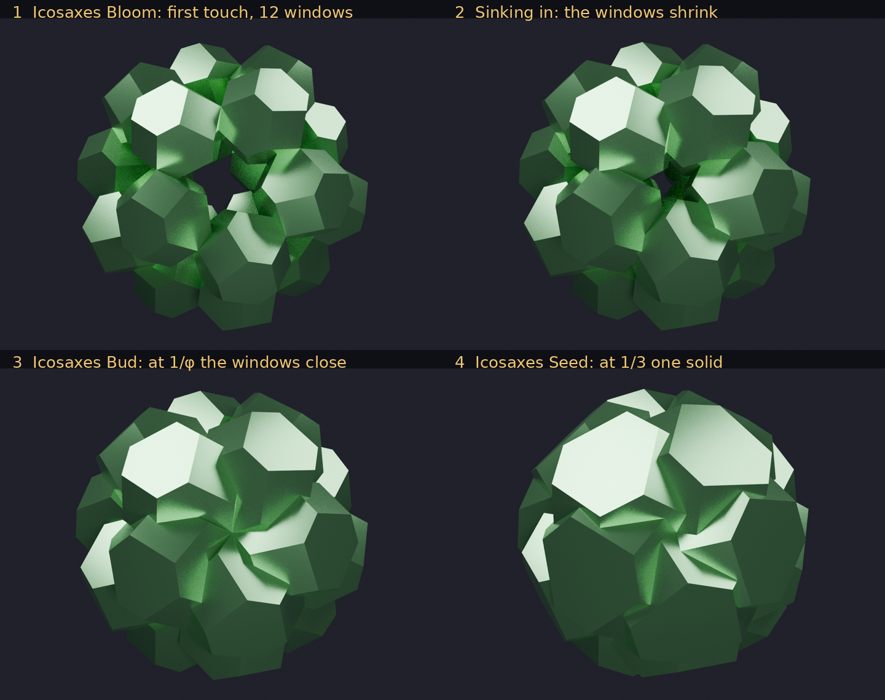
Figure 9.1. Twenty Icosaxes seen down a five-fold axis: first touch (Icosaxes Bloom), sinking in, 1/φ (Icosaxes Bud), 1/3 (Icosaxes Seed).
3. The pieces
The Icosaxes is a cube cut by an octahedron: the points with |x|, |y|, |z| ≤ φ/2 and |x| + |y| + |z| ≤ φ²/2. Its eight hexagons lie at distance φ²/(2√3) from its centre, exactly the inradius of its icosahedron. Volumes: Icosaxes 1 + 2√5/3; Unborn Axes 1 + √5/3; Lotus Jewel Axes √5; Dodecaxes 2; Tricap (1 − √5/3)/8.
4. Proof of the stops
First touch. Two neighbours on an edge of the dodecahedron are convex, so their insides are disjoint exactly when some face direction of either piece, or the cross product of an edge direction of each, separates them. Along each such direction the gap is linear in d; the least d with a gap ≥ 0 is φ²√3/2 (exact, sympy).
Windows. By symmetry the last point of a window to close lies on its five-fold axis. That axis first meets one of the five pieces round it when d = φ√3/2, the largest d of a two-variable linear programme in (position on the axis, d), solved exactly.
Hollow. By symmetry the last point of the hollow is the centre. The centre lies in a piece once d is at most the distance of the piece's inward face: the hexagon at φ²/(2√3) for the Icosaxes; for the Lotus Jewel Axes, the tip of the Tricap dent at √3/(2φ).
Lotus Jewel Axes. The Lotus Jewel Axes is the Icosaxes with eight Tricap dents taken out, so it can touch no earlier and close no earlier; it does both at the same distances, because the places where the Icosaxes meet avoid the dents. At first touch two neighbours meet across a flat patch of face, none of it in a dent; when the windows close, the five-fold axis lies flat on a face of each of the five pieces round it and meets each along a segment, none of it in a dent (a hair further out the axis misses the pieces, a hair further in it enters).
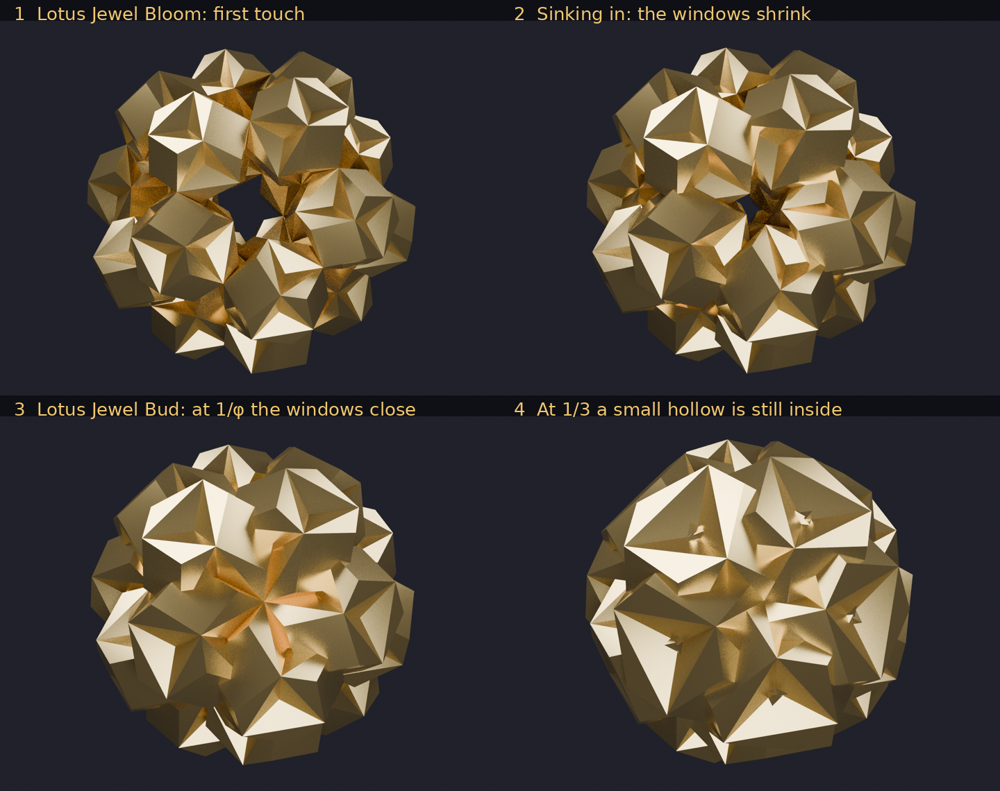
Figure 9.2. The same with Lotus Jewel Axes (gold): first touch (Lotus Jewel Bloom), 1/φ (Lotus Jewel Bud); at 1/3 a small hollow is still inside — the Lotus Jewel Seed comes at 1/φ³.
5. The Icosaxes Hexa
In the golden-split lattice (Icosaxes at the points (φ/2)(2ℤ)³, Unborn Axes at (φ/2)(2ℤ+1)³), eight Icosaxes on the corners of a cube round one Unborn Axes make one closed solid of volume 9 + 17√5/3 (eight Icosaxes and one Unborn Axes). It is the same solid as nine Icosaxes passing through each other: an Icosaxes in the middle overlaps each corner one by √5/24, and what is left of it is exactly the Unborn Axes. This is not special to the golden point. In every member of the golden bond (#48) a cube of the lattice is filled exactly by the parts of its eight corner pieces inside it and the partner piece at its centre; a ninth corner piece placed at the centre stays inside that cube, and whenever the corner piece is at least as large as its partner (from Kelvin's truncated octahedron onwards) it contains the partner. So nine corner pieces passing through each other always make the same solid as eight round a partner; the golden pair is the case named by DICTO.
6. The Icosaxes Kagome network and the Keyaxes
As in the Kagome Hulls (#17), clusters may share single pieces, no piece in more than two clusters and no two clusters sharing more than one. The cube cluster of §5, anchored on a body-centred lattice of Unborn Axes sites, puts every Icosaxes in exactly two clusters, each cluster with eight neighbours — as perfect as the rhombohedron was in #17. The other hulls share less: octahedral 74%, cuboctahedral 42%, rhombic dodecahedral 24% of the Icosaxes held twice.
With a Dodecaxes at each cluster centre, each Icosaxes takes the two Dodecaxes keys on the hexagons facing its two centres and carries a Tricap key outward on the other six, into the network's open spaces. No two pieces overlap. This piece has volume exactly φ² = (3 + √5)/2.
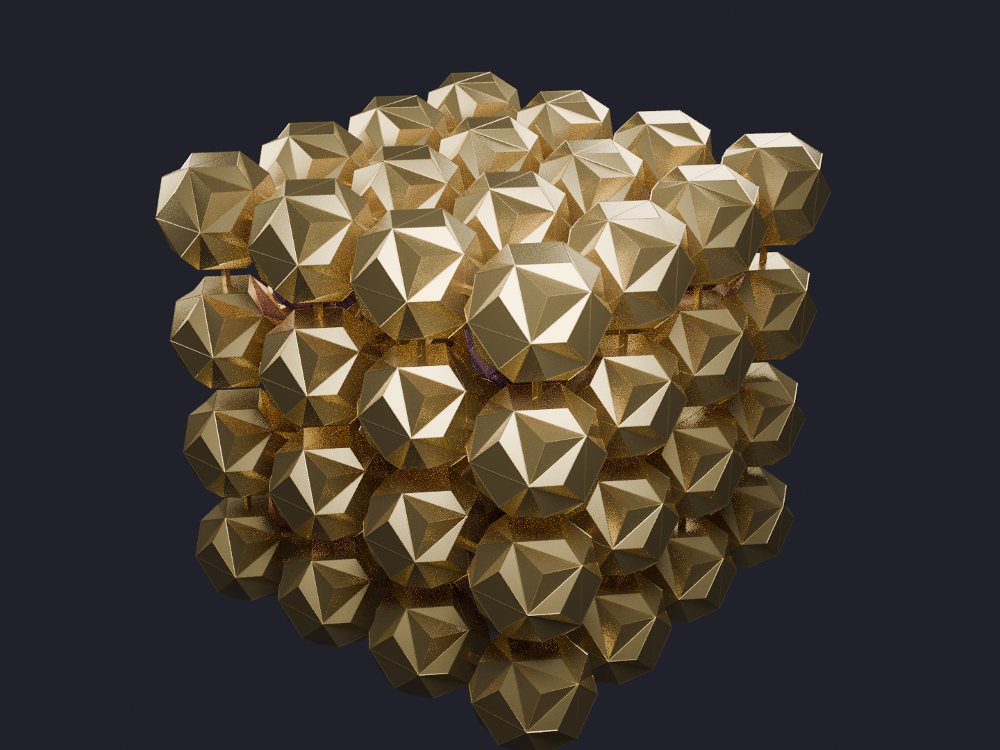
Figure 9.3. The keyed network, pulled slightly apart (Icosaxes Kagome; the piece Keyaxes).
7. Prior art and credit
Twenty icosahedra on the corners of a dodecahedron: the Wolfram Demonstration "Cluster of 20 Icosahedra"; twenty great icosahedra likewise: G. Hart, Polyhedra Clusters; cubes in icosahedral clusters: S. Kabai, 30 Cubes on a Rhombic Triacontahedron (2010); the truncated octahedra x = τ and 1/τ, which DICTO named Icosaxes and Unborn Axes: Koca et al. (2015); corner-sharing cube nets: Molecules 24(7):1221 (2019). Not found in the sources searched (a library of 302 references, and the web, 27 October 2026): truncated octahedra on the corners of a dodecahedron, the golden stops, or this network.
Chapter 10. From the Octet to Every Stacking: the Web of Bonds
From paper #58 (version 1), DICTO DOI 10.5281/zenodo.23665944
How cutting gaps in the right place, and watching which pieces touch, led to one rule for every way of stacking balls
Pile up oranges in a shop and there are small gaps between them. Those gaps come in two shapes, and the way the layers of oranges are stacked decides how the gaps are arranged. Over ten papers we asked a simple question again and again: if the gaps and the oranges' own spaces are shared out as solid pieces, what shapes do the pieces take, and which pieces touch which? The answer ends in one rule, the rule of halves: however the layers are stacked, every piece is borrowed, whole or in half, from just two ways of stacking.
The core statement
Plato built his elements from solids, Democritus from indivisible atoms, and some of today's physics pictures space itself as made of small polyhedral grains. The old question behind them is how far space can be shared out into pieces of a few fixed kinds. For stacked balls there is now an exact answer:
However layers of equal balls are stacked, the space between and around them is shared out into pieces of only finitely many kinds, and every one of them is borrowed, whole or in half, from just two pure orders, the cubic and the hexagonal. Endless variety of order, from a finite set of quanta.
This is geometry, proved exactly in paper #57; the link to atoms and to physics is one of lineage and analogy, not a claim about nature.
1. Pieces that fill space
DICTO came to the division of space through his hands, cutting and rebuilding PET-bottle caps into DICTOspheres. He narrowed the range to three spheres, each building its own crystal: the dodecahedron builds icosahedra and tetrahedra, the cuboctahedron builds cubes and rhombic dodecahedra, and the rhombic dodecahedron builds truncated octahedra and the octet. In Deltaverse he let deltahedra find their own lattice, where Rhombiverse had laid the lattice down first; in Polyhedraverse he cut rhombic dodecahedra in half and joined the halves into new solids, among them a slightly irregular truncated octahedron that still filled space, a forerunner of the golden split, and turned those cuts into the RHOMBIS puzzle. The apps became his playground, a place to pick up and turn solids freely; there he filled the gaps of dodecahedral and icosahedral structures with bidiminished and tridiminished icosahedra. He even planned spheres made in two halves, to bridge five-fold and four-fold symmetry. Cutting into halves and filling what is left run through every paper in this series; the rule of halves is where they meet.
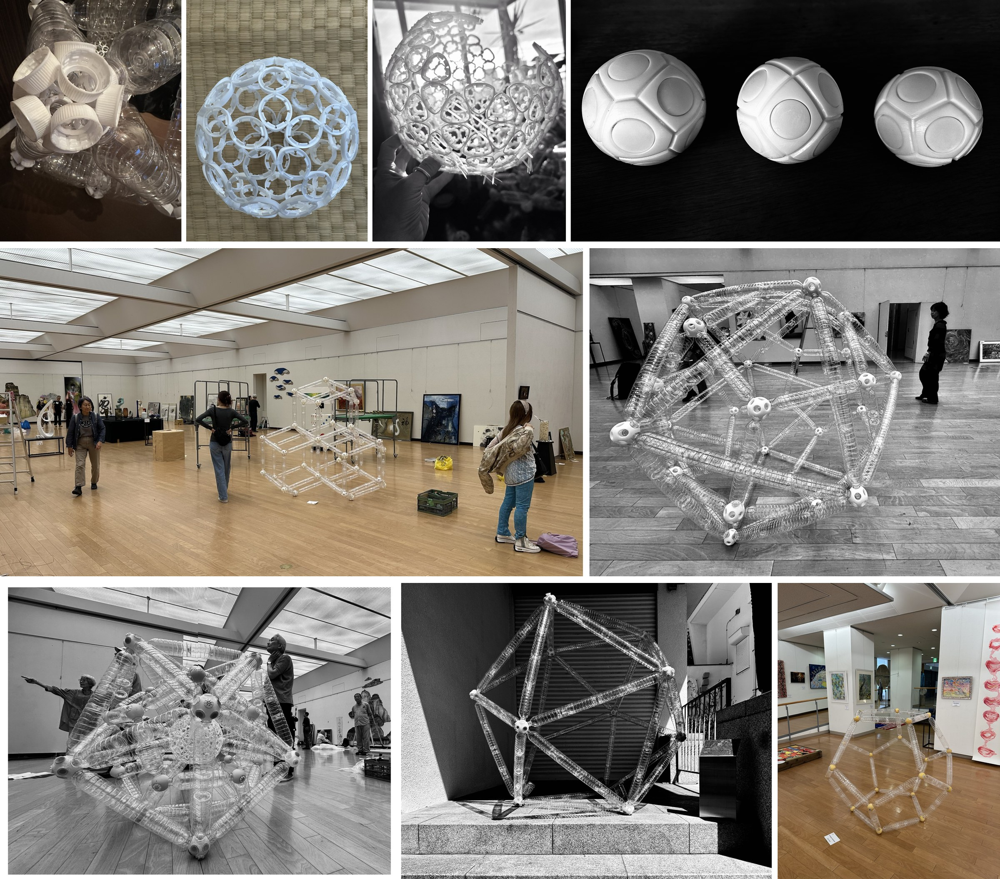
Figure 10.1. From the hand to the room. Top: PET-bottle caps; DICTO's OG sphere in cap rings; a Goldberg arrangement mid-build; the three DICTOspheres (cuboctahedron, rhombic dodecahedron, dodecahedron). Middle and bottom: large PET-bottle structures by DICTO; middle left, a tetrapod arrangement at the Kyoto Municipal Museum of Art, 26 October 2026; middle right, 2025; bottom left, 2024; bottom centre, the icosahedron outdoors at the Insho Domoto Museum of Fine Arts, 2025; bottom right, the dodecahedron, 2022. Photographs: DICTO.
Some shapes fill space on their own, like bricks or cubes. Most do not. DICTO's first question was whether any mix of the five Platonic solids (the tetrahedron, cube, octahedron, dodecahedron and icosahedron) can be made to fill space. Paper #47 showed that every mix can, all 31 of them, as long as a small set of seven connector pieces is allowed to plug the gaps.
The icosahedron, the twenty-sided die, is the most stubborn. Put icosahedra in a square grid and two kinds of gap are left over: a squashed icosahedron in the middle, which DICTO called the Unborn, and thin wedges between them, the AXE. The AXE sticks out wherever it is glued. In paper #48, the Golden Split, we cut each AXE into four small pyramids from one inside point and handed each pyramid to the neighbour it touches. At exactly one point, the golden point, nothing sticks out any more: the icosahedra and the Unborns both become neat, convex solids that fill space together. DICTO named them the Icosaxes and the Unborn Axes.
Precisely (#48): in the simple cubic lattice of icosahedra, cutting every AXE from the point 1/φ of the way along its axis turns the icosahedra and the Unborns into two convex truncated octahedra that fill space, and this is the only cut point at which both are convex. In the Lotus Jewel network the same cut gives a keyed pair, the Lotus Jewel Axes and the Dodecaxes, of volumes √5 and 2.
Paper #51, the Delian Bond, did the same with the oldest mixed filling of all: the octet, where tetrahedra and octahedra fill space together. Slide one flat cut through every place where a tetrahedron meets an octahedron, and give each side to its own piece. As the cut slides, one kind grows and the other shrinks, but the two always fill space. At one end the pieces are Kepler's rhombic dodecahedra, at the other end cubes. Halfway, at one exact place, the two pieces weigh the same: the small one has doubled and the large one halved. Doubling is the ancient Delian problem, doubling a cube, and DICTO named this equal pair Samson and Delilah.
Precisely (#51): one flat cut slid through every tetrahedron–octahedron pair of the octet gives a family of pairs of convex space-fillers from Kepler's rhombic dodecahedron through the octet to the cube; at one cut the two have exactly equal volume, twice the octet's tetrahedron and half its octahedron, and two other cuts make every edge equal.
Figure 10.2. The series as one route, from the octet to every stacking.
2. The web of bonds
Next we stopped looking only at the pieces and looked at who touches whom. Draw a line, a bond, between the centres of every two pieces that share a face. The lines make a web. Paper #52 showed that both of DICTO's families above are really one fixed crowd of points of two kinds, with one number slid between the kinds, like turning a dial. Each piece is simply the region that belongs to its point. As the dial turns, the pieces change shape, but the web changes in only two ways. The bond between a piece of one kind and a piece of the other never breaks. The bonds between pieces of the same kind hand over (one pair of pieces stops touching as another pair starts): in the golden family slowly and smoothly, in the Delian family all at once, at the octet.
The dial has a physical meaning: it is the size of a ball. The golden family is the arrangement of atoms in caesium chloride, the Delian family that of fluorite, and the range where the balls can touch ends exactly at the limits Linus Pauling gave for these crystals.
Precisely (#52): both DICTONIC loops are weighted Voronoi (power) diagrams of one fixed set of points of two kinds with one weight slid between the kinds; the bonds are the edges of the dual weighted-Delaunay web; the unlike bond never breaks inside a loop, while the two like bonds hand over, gradually in the golden loop and all at once, at the octet, in the Delian loop.
DICTO guessed that these two ways of handing over would turn up elsewhere. Paper #53 turned the same dial on ten more crystal arrangements and recorded every change exactly. The guess holds: the all-at-once hand-over appears in the square grid with its centres, in the honeycomb and in rock salt; the smooth hand-over appears in zinc blende, in the gaps of the hexagonal stacking, and in two famous metal alloy structures, A15 and C15.
Precisely (#53): for ten classical two-kind crystal site sets and one three-kind set, the power diagram is computed exactly along the whole weight line: every flip, the bonds on every interval, and every point where only unlike bonds exist; both hand-overs recur.
3. Named pairs along the way
At special points of the dial, striking pairs of shapes appear. In the A15 alloy, at one exact setting, space is filled by a twenty-faced solid around one kind of atom and a small four-faced one around the other. DICTO named them Goliath and David. Paper #55 proved the setting exactly and found that Goliath is the outer skin of a famous puzzle shape, Jessen's orthogonal icosahedron. The tiling itself was known to crystal scientists; that the dial lands exactly on it, and that its icosahedron is Jessen's, we did not find in the sources searched.
Precisely (#55): in A15 (Cr₃Si), the power diagram with weight difference 3/4 between the Si and Cr sites is exactly a face-to-face tiling by Goliath, the convex hull of Jessen's orthogonal icosahedron, and David, a tetragonal disphenoid, two Goliaths and six Davids per cubic cell.
Oranges can be stacked in two pure ways. In the cubic way each layer sits in the hollows the layer below leaves, always moving on (ABCABC…). In the hexagonal way every other layer returns to the same place (ABAB…), so each layer is a mirror of its neighbours. The octet belongs to the cubic way; the hexagonal way gives the twinned octet: the same gaps, joined across mirror planes. Paper #56 turned the dial there. It has its own equal-weight pair, new solids that DICTO named Sonsam and Lahdeli, the twins of Samson and Delilah. Further on come a solid DICTO named Ian Dury and a slanted brick (a 60° rhombohedron), and at the end a single shape fills everything, the Blockhead. Adding keys to the pieces changes their shapes but never the web of bonds. The same idea of keys also explains the Sunstar of paper #42, where regular dodecahedra and Dogstars fill space: the dodecahedron is a cube with six roofs added, and the Dogstar is the same cube with its neighbours' roofs taken away.
Precisely (#56): on the twinned octet the weight walk passes exactly through the octet, then one point where all pieces have equal volume √2/6 (Sonsam, 19 corners with one nine-sided face on the mirror plane, and Lahdeli, 12 corners), then a stop of Ian Durys and 60° rhombohedra (13√2/54 and √2/54), and ends in Blockheads alone (√2/4); on the cubic octet the walk goes from the octet straight to cubes, with Samson and Delilah equal at λ = 3/8 − ∛4/4.
4. Every stacking: the rule of halves
Real crystals rarely stack in only one pure way. They mix: ABAC, ABCACB, and endless others. An early signpost was paper #40, where two short rules placed DICTO's Ogdoecontahedron and its family into the stack of tetrahedra and octahedra, layered in any order, even in a pattern that never repeats.
Paper #57 turned the dial on every stacking at once and found a rule simple enough to say in two sentences. A four-faced (tetrahedral) gap always takes the piece it would have in the pure stacking of the layer it sits closest to. An eight-faced (octahedral) gap sits halfway between two layers, so its piece is two halves: the top half borrowed from the layer above, the bottom half from the layer below. That is all. So every stacking, however long or strange, is built from the pieces of the two pure stackings, and there are only finitely many kinds of piece. Where a cubic layer meets a hexagonal one, pieces appear that are half of one and half of the other, which DICTO named the Janus pieces (after the Roman god who looks both ways), Chucky and Fang.
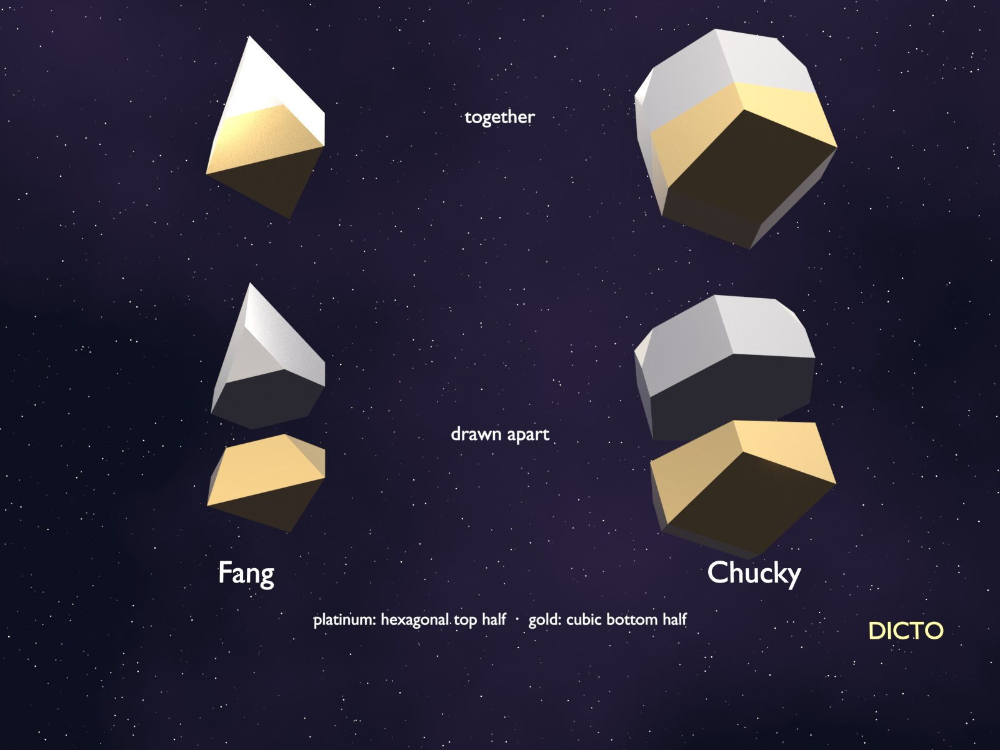
Figure 10.3. The Janus c/h pieces Fang and Chucky, whole and drawn apart: a hexagonal top half (platinum) on a cubic bottom half (gold).
Precisely (#57, the main theorem of the series): in every close-packed stacking, along the whole weight walk, each tetrahedral hole's piece is the piece of the cubic or the hexagonal stacking named by its nearest layer, and each octahedral hole's piece is a top half and a bottom half, each the half of the cubic or the hexagonal piece named by the layer on that side; so the pieces of all stackings are finite in kind and an octahedral piece's volume is always the mean of its two parents' volumes.
The papers of the series
All by DICTO; DICTO DOIs open the newest version. #40 The DICTO OG Family on Every Stacking. DICTO DOI: 10.5281/zenodo.23490114 #42 The DICTO Sunstar. DICTO DOI: 10.5281/zenodo.23497702 #47 Every Mix of the Platonic Solids Fills Space. DICTO DOI: 10.5281/zenodo.23551326 #48 The Golden Split: Icosahedra, Unborns and AXE Become Two Convex Space-Fillers. DICTO DOI: 10.5281/zenodo.23596362 #51 The Delian Bond: Samson, Delilah and the Octet Between Kepler's Rhombic Dodecahedron and the Cube. DICTO DOI: 10.5281/zenodo.23606828 #52 The Web of Bonds: How the DICTONIC Bonds Hand Over. DICTO DOI: 10.5281/zenodo.23629252 #53 The Global Web of Bonds: How Bonds Hand Over Across Crystal Networks. DICTO DOI: 10.5281/zenodo.23631140 #55 David and Goliath: Jessen's Icosahedron and the Tetrahedron in the A15 Weight Walk. DICTO DOI: 10.5281/zenodo.23632358 #56 Sonsam and Lahdeli: the Delian Bond on the Twinned Octet, with Ian Dury, Blockhead and Keyed Switch Points. DICTO DOI: 10.5281/zenodo.23635823 #57 The Rule of Halves: the Holes of Every Close-Packed Stacking. DICTO DOI: 10.5281/zenodo.23647898
Chapter 11. The Rule of Halves: the Holes of Every Close-Packed Stacking
From paper #57 (version 1), DICTO DOI 10.5281/zenodo.23647898
Theorem: in every close-packed stacking, along the whole weight walk, each tetrahedral hole's piece is the piece of the cubic or the hexagonal stacking named by its nearest layer, and each octahedral hole's piece is a top half and a bottom half, each the half of the cubic or the hexagonal piece named by the layer on that side; so the pieces of all stackings are finite in kind and an octahedral piece's volume is always the mean of its two parents' volumes.
Stack layers of balls and the gaps between them are small octahedra and tetrahedra. Stack them in the cubic way (ABCABC…) or the hexagonal way (ABAB…) and these gaps are arranged differently; crystals also use countless mixed stackings, such as ABAC or ABCACB. In papers #51, #53 and #56 we slid one number, a weight, between the two kinds of gap and followed how space is shared out among them: the web of bonds. Here we follow it on every stacking at once, and find a simple rule. A tetrahedral gap always takes the piece it would have in the pure stacking of the layer it sits closest to. An octahedral gap sits half-way between two layers, and its piece is two halves: the top half is the top half of the cubic or the hexagonal piece, as the layer above decides, and the bottom half likewise from the layer below. So every stacking, of any length or pattern, is built from the two pure ones, and the kinds of piece are finite: we list them all, with exact volumes. Where a cubic layer meets a hexagonal one, octahedral pieces appear that are half cubic and half hexagonal, which DICTO calls the Janus c/h pieces; two of them he named Chucky and Fang; and its volume is exactly the mean of its two parents'. The proof is exact, with one bound done by hand. The rule was not found in the sources checked; its classical counterpart for the balls themselves, that each ball's surroundings are set by its own layer, is the reason the h/c notation of crystallography exists.
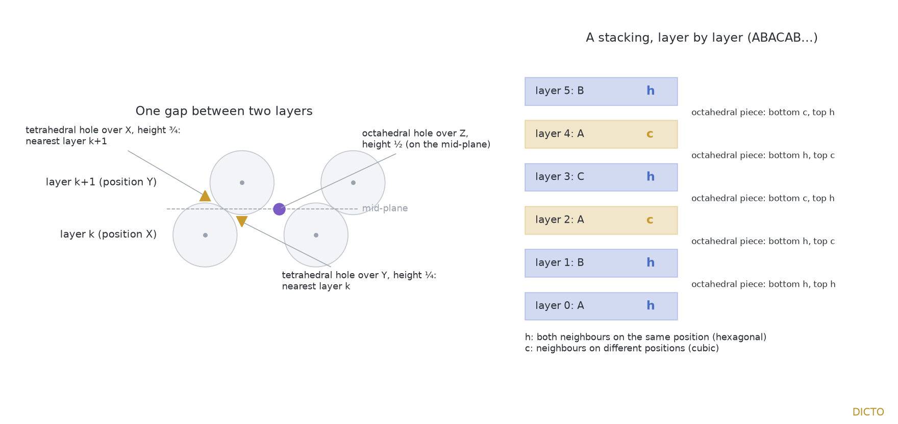
Figure 11.1. Left: one gap and its three holes. Right: a stacking layer by layer; a layer is h when both neighbours sit on the same position, c otherwise; each octahedral piece takes its bottom half from the layer below and its top half from the layer above.
1. Where it started
Paper #56 [1] followed the weight walk of #53 [2] on the hexagonal stacking and found DICTO's Sonsam and Lahdeli, Ian Dury and Blockhead, the hexagonal twins of the cubic pieces of #51 [3]. Next, the web of bonds follows onto the other close-packed stackings. On the double-hexagonal stacking ABAC and the six-layer ABCACB the walk mixed the cubic and hexagonal pieces and added two pieces neither had, which DICTO named Chucky and Fang; the nine-layer samarium stacking ABACACBCB added nothing new. That pointed to a local rule, which we prove here.
2. The set-up
Each gap gets a share of space; one weight decides how big a share the tetrahedral gaps get; slide it and the shares change shape.
Unit balls sit in close-packed layers (triangular lattices of spacing 1) at heights kd, d = √(2/3); layer k sits on one of the three positions A, B, C, and no two consecutive layers share a position. Layer k is h if layers k − 1 and k + 1 sit on the same position and c otherwise (Jagodzinski's notation [4]). In the gap between layer k (position X) and layer k + 1 (position Y) there are three holes (Figure 11.1): an octahedral hole over the third position Z at height (k + ½)d, a tetrahedral hole over X at height (k + ¾)d and one over Y at height (k + ¼)d. The holes are the sites of a power diagram [5]: each site p, with weight wp, owns the points x for which |x − p|² − wp is smallest; octahedral sites have weight 0 and tetrahedral sites weight λ. The pieces are convex and fill space; two pieces sharing a face are bonded. The walk is λ sliding over −11/24 ≤ λ ≤ 3/8, the range in which, in at least one of the two pure stackings, both kinds of piece are present (the hexagonal tetrahedral pieces shrink to points at −11/24, the cubic ones at −3/8, the octahedral pieces of both at 3/8). On each open stretch of λ between the finitely many stops, where some piece changes its faces, every corner of every piece moves on a straight line (Lemma 1). The pure stackings are the cubic ABC… (all layers c; the octet of #51) and the hexagonal AB… (all layers h; the twinned octet of #56).
Definitions. The walk: for each λ in the range we set wtet = λ, woct = 0 and take the power diagram. A piece: the cell of one hole. A stop: a λ at which some piece gains or loses a face; a stretch: an open interval of λ between consecutive stops. A window: the six layers k − 2, …, k + 3 round the gap of layers k and k + 1, up to relabelling A, B, C; it is fixed by the h/c types of layers k − 1, …, k + 2, so there are 16. The top and bottom halves of an octahedral piece: its parts above and below the horizontal plane through its hole.
3. Main theorem
Theorem (the rule of halves). For every close-packed stacking and every λ with −11/24 ≤ λ ≤ 3/8:
the piece of a tetrahedral hole is congruent to a tetrahedral piece of the pure stacking (cubic if c, hexagonal if h) of the type of its nearest layer: the hole over X, at height (k + ¾)d, is nearest to layer k + 1, the hole over Y to layer k;
the piece of an octahedral hole, cut by the horizontal plane through the hole, has a top half congruent to the top half of an octahedral piece of the pure stacking of the type of layer k + 1, and a bottom half congruent to the bottom half of an octahedral piece of the pure stacking of the type of layer k.
Corollaries. (i) Up to congruence there are finitely many pieces in all close-packed stackings together: 21 combinatorial kinds, listed in the Appendix with exact volumes. (ii) The volume of an octahedral piece is the mean of the volumes of its cubic and hexagonal parents (or equal to the parent's, when both layers have the same type).
The two pure stackings are the only ingredients; every other stacking just decides, layer by layer, which ingredient each half comes from.
4. Proof
Lemma 1 (corners move on straight lines). A corner of a piece is the common point of three dividing planes 2(qi − p)·x = |qi|² − |p|² − wqi + wp. Their normals do not depend on λ and their right-hand sides are affine in λ; on a stretch the same three planes define the corner, and their normals are linearly independent (otherwise they would not meet in a point), so the corner is M⁻¹b(λ), with M the fixed matrix of the three normals and b(λ) affine: affine in λ. At a stop the set of planes through a corner may change, which is why the stretches are treated one by one. □
Step 1: six layers decide. The pieces of the holes of gap k depend only on the layers k − 2, …, k + 3.
(i) Exact computation. Up to relabelling A, B, C, these six layers are fixed by the types of the four inner layers k − 1, …, k + 2: 16 windows. For each we built a periodic stacking containing the six layers and computed its power diagram exactly, in rational arithmetic, over the whole walk (the census engine of #53 [2], which also checks on every stretch that its finite list of sites suffices and that the pieces' volumes add up to the cell's). In every window, on every stretch, every corner of every piece of gap k lies within squared distance ½ of its hole (176 cases; squared distance along a straight path is convex in λ, so the stretch ends suffice).
(ii) By hand. A hole three or more gaps away is at least 2.5d higher or lower than every hole of gap k, so |q − p| ≥ 2.5d, and |wp − wq| ≤ 11/24. Its dividing plane lies at distance (|q − p|² + wp − wq)/(2|q − p|) ≥ ((2.5d)² − 11/24)/(5d) = (89/24)/(5d) from p (the function t ↦ (t² − c)/(2t) increases), whose square is (7921/576)/(50/3) = 23763/28800 > ½. So for every λ no such plane meets the ball of squared radius ½ about p.
(iii) Convexity. Let C be the piece of p computed from the holes of gaps k − 2 to k + 2 only. In any stacking with the same six layers the piece of p is C cut by the planes of farther holes; these miss the ball, and by (i) the piece in the test stacking lies inside the ball; a convex body inside the ball whose boundary there is made of C's planes only is C itself. So all such stackings give the same piece. This holds for every stacking, periodic or not, since any stacking shows one of the 16 windows round each of its gaps. □
Step 2: the 16 windows. For each window, stretch and hole of gap k we searched the 24 rigid motions that fix the hole's vertical axis and map the triangular layers to themselves (the 12 symmetries of the triangular lattice about the axis, with or without the reflection z ↦ −z; they serve only to exhibit congruence). For tetrahedral holes, one such motion carries the corner functions (Lemma 1) of the piece exactly onto those of the stated pure piece: all cases. For octahedral holes, one motion carries the corner functions above, on and below the mid-plane, and the points where edges cross it (exact rational functions of λ), onto those of the stated pure halves: all 160 halves. Equal corner functions give equal pieces for every λ in the stretch. Together: 176 of 176 pieces, 0 failures; no stretch needed to be split where a corner crosses the mid-plane.
Step 3: stops. At a stop each piece is the limit of the pieces on the two adjacent stretches (the engine checks that the limit is the piece computed directly at the stop), so the congruences hold there too. □
The corollaries. (i) follows because the windows are finitely many and so are their stretches. (ii): each pure octahedral piece has a centre of symmetry at its hole (the octet's octahedral holes are centres of inversion, and so are the octahedral holes of hexagonal close packing), and inversion through the hole swaps the two halves, so each half has exactly half the parent's volume; by the theorem the top half of a mixed piece is congruent to the top half of one parent and its bottom half to the bottom half of the other, so its volume is half the one plus half the other. In particular, exactly: Fang = 5√2/324, the mean of the cubic octahedron √2/81 and the hexagonal rhombohedron √2/54; Chucky = 383√2/768, the mean of the cubic rhombic dodecahedron √2/2 and the hexagonal piece 191√2/384.
Limits. The theorem covers −11/24 ≤ λ ≤ 3/8. At the ends of the range, and at −3/8 for the cubic tetrahedral pieces, some pieces shrink to points or edges; there the statement holds with those pieces read as points, as limits of the stretches. Steps 1(i) and 2 are exact computations; Step 1(ii) and (iii) and Lemma 1 are by hand; no floating-point arithmetic enters the proof.
Computational methods. Python with exact rationals (fractions, sympy), using the census engine of #53 [2]: for a periodic stacking it lists the holes within a fixed distance, computes each piece exactly at a rational λ, finds the stretch round it exactly, and expresses every corner as an affine function of λ, with checks that the site list suffices and that the volumes add up to the cell. All scripts and outputs are in the study folder [S]; a fresh copy of the repository on a second computer reproduced every result of Steps 1 and 2 and the exact volumes identically.
Use of AI. The computations, proofs and text were prepared with Claude (Anthropic) under DICTO's direction. An open language model, run locally, was used as an independent referee of the proof and of this paper (it found no mathematical error and asked for clarifications now included) and drafted the order of sections; it wrote none of the final text.
5. The pieces
Figure 11.2. Fang (λ = 5/24) and Chucky (λ = −3/8) in the double-hexagonal stacking ABAC: hexagonal top half (blue), cubic bottom half (gold); whole above, drawn apart at the mid-plane below.
Chucky (DICTO's name): the octahedral piece at λ = −3/8 where a hexagonal layer lies above and a cubic layer below; 19 corners, with 3 triangles, 3 squares, 6 pentagons and one nonagon; volume 383√2/768. Fang (DICTO's name): the octahedral piece at λ = 5/24 in the same position; 7 corners, with 4 triangles and 3 squares; volume 5√2/324. Both belong to longer families of mixed pieces along their stretches (Appendix), and the stacking with the cubic layer above and the hexagonal one below gives their mirror images. DICTO calls all the octahedral pieces with one cubic and one hexagonal half the Janus c/h pieces (Janus, the two-faced god of doorways: each looks into one stacking above and the other below); Chucky and Fang are its named members, and two further families, of 9 and of 27 corners, complete it. Triskelion Tetrahedron (TT, DICTO's name): the tetrahedral piece of ABAC at λ = 5/24 with 16 corners (4 triangles, 6 hexagons). By the theorem it is the cubic piece there, a member of the sliding family of Samson in #51 [3]; the name marks that member; volume 79√2/324. The other pieces of the mixed stackings are the cubic and hexagonal pieces of #51 and #56; the two further Janus c/h families live on whole stretches and meet no stop.
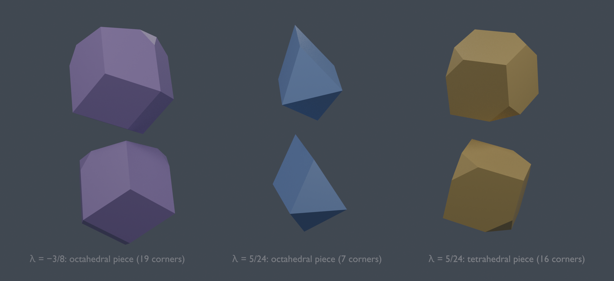
Figure 11.3. The three pieces of ABAC first met in this study, each from two sides: Chucky (19 corners), Fang (7 corners) and TT (16 corners, the cubic piece).
6. What is known, and what was not found
Known and credited. Close-packed stackings and their polytypes, and the h/c notation, whose purpose is that each ball's own surroundings are set by its layer's type [4]; our theorem is the counterpart for the holes, along the whole walk. Power diagrams [5]. The pure octet and twinned octet pieces [1, 3] and the walk [2]. Hales's proof of the Kepler conjecture divides the cubic and hexagonal packings into pieces built from their near-regular tetrahedra and octahedra ("decomposition stars"), for those two packings only [6]. Binary crystals of hard tetrahedra and octahedra: the cubic and hexagonal forms c-OT2 and h-OT2 (in h-OT2 octahedra sit on octahedra), which "can be combined in infinitely many different stacking variants", and small amounts of stacking faults observed in simulation [7]; that study has no cells round the holes and no rule relating mixed stackings to the pure forms. Radical (Laguerre) tessellations of binary hard-sphere crystals [8]. Not found in the sources checked: the pieces of the holes of mixed stackings, their finite catalogue, and the rule of halves. Searched: DICTO's reference library (eight queries on polytypes, hole cells, local environments, Delaunay and Voronoi cells of close packings, parameter families of power diagrams), five web searches, and Hales's three overview papers read for the purpose by a local model, which found no statement on mixed stackings or halves.
7. Open directions
Other weights for the two kinds of tetrahedral hole (a three-kind walk, a map instead of a line), where the rule may split further.
Keyed forms of Chucky and Fang, and a self-keyed Blockhead (#56).
A world in the app to choose any stacking, slide λ and see every piece coloured by its parents.
Appendix: every piece of every close-packed stacking
From appendix.json [S]. Columns: the kind of hole; the stretch of λ (open interval between two stops); what the piece is made from by the theorem (a cubic or hexagonal tetrahedral piece, or the types of an octahedral piece's top and bottom halves); the number of corners and the faces of the piece on that stretch; its exact volume as a function of λ, for balls of diameter 1. At a stop a piece is the limit of the adjacent stretches' pieces.
hole
stretch of λ
made from
corners
faces
volume
tetrahedral
(-11/24, -3/8)
hexagonal piece
4
4 triangles
√2·(24·λ + 11)³/6144
tetrahedral
(-3/8, -1/8)
cubic piece
4
4 triangles
√2·(8·λ + 3)³/96
tetrahedral
(-3/8, -1/8)
hexagonal piece
4
4 triangles
√2·(24·λ + 11)³/6144
tetrahedral
(-1/8, 5/24)
cubic piece
16
4 triangles, 6 hexagons
√2·(512·λ³ - 576·λ² + 216·λ + 69)/384
tetrahedral
(-1/8, 5/24)
hexagonal piece
19
6 triangles, 3 pentagons, 3 hexagons, 1 nonagon
-√2·(1536·λ³ + 5184·λ² - 3384·λ - 1013)/6144
tetrahedral
(5/24, 3/8)
cubic piece
16
4 triangles, 6 hexagons
√2·(512·λ³ - 576·λ² + 216·λ + 69)/384
tetrahedral
(5/24, 3/8)
hexagonal piece
19
9 squares, 4 hexagons
√2·(8·λ + 1)·(64·λ² - 80·λ + 37)/256
octahedral
(-11/24, -3/8)
cubic top + cubic bottom
14
12 squares
√2/2
octahedral
(-11/24, -3/8)
cubic top + hexagonal bottom
19
3 triangles, 3 squares, 6 pentagons, 1 nonagon
-√2·(13824·λ³ + 19008·λ² + 8712·λ - 1741)/6144
octahedral
(-11/24, -3/8)
hexagonal top + cubic bottom
19
3 triangles, 3 squares, 6 pentagons, 1 nonagon
-√2·(13824·λ³ + 19008·λ² + 8712·λ - 1741)/6144
octahedral
(-11/24, -3/8)
hexagonal top + hexagonal bottom
24
6 triangles, 6 hexagons, 2 nonagons
-√2·(13824·λ³ + 19008·λ² + 8712·λ - 205)/3072
octahedral
(-3/8, -1/8)
cubic top + cubic bottom
30
8 triangles, 12 hexagons
-√2·(512·λ³ + 576·λ² + 216·λ + 3)/48
octahedral
(-3/8, -1/8)
cubic top + hexagonal bottom
27
7 triangles, 9 hexagons, 1 nonagon
-√2·(46592·λ³ + 55872·λ² + 22536·λ - 13)/6144
octahedral
(-3/8, -1/8)
hexagonal top + cubic bottom
27
7 triangles, 9 hexagons, 1 nonagon
-√2·(46592·λ³ + 55872·λ² + 22536·λ - 13)/6144
octahedral
(-3/8, -1/8)
hexagonal top + hexagonal bottom
24
6 triangles, 6 hexagons, 2 nonagons
-√2·(13824·λ³ + 19008·λ² + 8712·λ - 205)/3072
octahedral
(-1/8, 5/24)
cubic top + cubic bottom
6
8 triangles
-√2·(8·λ - 3)³/192
octahedral
(-1/8, 5/24)
cubic top + hexagonal bottom
9
5 triangles, 3 pentagons
-√2·(6656·λ³ - 14400·λ² + 6840·λ - 955)/6144
octahedral
(-1/8, 5/24)
hexagonal top + cubic bottom
9
5 triangles, 3 pentagons
-√2·(6656·λ³ - 14400·λ² + 6840·λ - 955)/6144
octahedral
(-1/8, 5/24)
hexagonal top + hexagonal bottom
12
2 triangles, 6 pentagons
√2·(1536·λ³ + 5184·λ² - 3384·λ + 523)/3072
octahedral
(5/24, 3/8)
cubic top + cubic bottom
6
8 triangles
-√2·(8·λ - 3)³/192
octahedral
(5/24, 3/8)
cubic top + hexagonal bottom
7
4 triangles, 3 squares
-5·√2·(8·λ - 3)³/768
octahedral
(5/24, 3/8)
hexagonal top + cubic bottom
7
4 triangles, 3 squares
-5·√2·(8·λ - 3)³/768
octahedral
(5/24, 3/8)
hexagonal top + hexagonal bottom
8
6 squares
-√2·(8·λ - 3)³/128
Epilogue. From the walk to the law
The book began with a question of filling. Chapter 1 showed that every one of the 31 mixes of the Platonic solids (dodecahedron, icosahedron, cube, tetrahedron, octahedron) fills space, all at one edge length, with a kit of seven connector pieces; the cube alone and the tetrahedron with the octahedron need none. The connectors were the first sign of the theme: where solids do not fit, something has to fill the gaps. Chapter 2 gave exact moves that make shapes rather than glue them: three moves, a shear, the equal-edged cell and a stretch, one setting of which gives each of five classical space-fillers exactly, corner by corner.
Part II cut the gaps instead of plugging them. In the simple cubic lattice of icosahedra, cutting every AXE from the point 1/φ of the way along its axis turns the icosahedra and the Unborns into two convex space-fillers, the Icosaxes and the Unborn Axes, and no other cut point makes both convex (Chapter 3); in the Lotus Jewel network the same cut gives the keyed pair. One flat cut slid through the octet runs from Kepler's rhombic dodecahedra to cubes, and at one point the two pieces have equal volume, Samson and Delilah (Chapter 4).
Part III found the one dial behind the families. The golden and the Delian loops are each the weighted Voronoi (power) diagram of one fixed set of points of two kinds, with one weight slid between the kinds. Read as a web of bonds, shared faces between neighbours, the families change in only two ways: the bond between unlike pieces never breaks inside a loop, and the like bonds hand over, gradually in the golden loop and all at once, at the octet, in the Delian loop (Chapter 5). Read physically, the weight is a ball radius squared, and the range of touching balls is bounded by Pauling's radius-ratio limits (Chapter 5). The same two hand-overs recur in ten further crystal networks (Chapter 6).
Part IV followed the walk to new pairs. In A15, one exact weight gives Goliath, the hull of Jessen's orthogonal icosahedron, with David (Chapter 7). On the twinned octet the walk has its own equal-volume point, Sonsam and Lahdeli, and keys change the pieces but never the web (Chapter 8). Chapter 9 returned to the golden pair: twenty Icosaxes slid together close into one solid, the Icosaxes Seed, and eight Icosaxes round one Unborn Axes make the blocks of a network. The golden, keyed, Delian and twinned Delian pairs are the four DICTONIC bonds: each sits at one distinguished point, the golden cut or the point of equal volume, of a family of pairs that fills space all along.
Part V told the walk as one route (Chapter 10) and then turned the dial on every close-packed stacking at once. The two pure stackings are the octet of Chapter 4 (cubic) and the twinned octet of Chapter 8 (hexagonal), and Chapter 11 proves that these are the only ingredients: along the whole weight walk, a tetrahedral hole takes the piece of the pure stacking of its nearest layer, and an octahedral hole's piece is two halves, each borrowed from the pure stacking named by the layer on its side. So the pieces of all stackings together are finite in kind, 21 combinatorial kinds listed with exact volumes, and an octahedral piece's volume is the mean of its two parents'. Where a cubic layer meets a hexagonal one, the halves meet in the Janus pieces, Chucky and Fang. This is the Rule of Halves: however the layers are stacked, every piece is borrowed, whole or in half, from two pure orders.
Appendix. Sources by chapter
Each chapter's own list of sources checked, its data and code, and its references, as published with its paper.
Chapter 1. Every Mix of the Platonic Solids Fills Space (#47, DICTO DOI 10.5281/zenodo.23551326)
Data and reproducibility
In studies/2026-10-22-platonic-mix-step1: mixes.py (step 1, the cube, tetrahedron and octahedron; log mixes.log), mixes2.py and caps.py (step 2, the icosahedron; mixes2.log), mixes3.py (all 31 mixes, one construction; mixes3.log), volumes.py (volumes.log), stack_figure.py, pieces_figure.py, cake_diagram.py and seam_figure.py (Figures 1–4). Python 3 with numpy and scipy.
References
J. C. Lagarias, C. Zong, Mysteries in packing regular tetrahedra, Notices Amer. Math. Soc. 59 (2012) 1540–1549, doi:10.1090/noti918.
DICTO, Kaleidohedra by DICTO, release v2026.10.11-octet, finding F21 "The icosahedral octet" (the Admiral Caps), DICTO DOI: 10.5281/zenodo.23284390.
G. W. Hart, Tetrahedral stellations of the dodecahedron (1996), https://www.georgehart.com/virtual-polyhedra/stellations-dodecahedron-tetrahedral.html (stellation 8).
DICTO, The DICTO Sunstar, #42, DICTO DOI: 10.5281/zenodo.23497702.
Euclid, The Thirteen Books of the Elements, tr. T. L. Heath, vol. III (Books X–XIII), Cambridge (1908), Book XIII, Proposition 17.
L. Pacioli, Divina proportione, Venice (1509).
S. Torquato, Y. Jiao, Dense packings of the Platonic and Archimedean solids, Nature 460 (2009) 876–879; arXiv:0909.0940.
R. Gabbrielli, Y. Jiao, S. Torquato, Families of tessellations of space by elementary polyhedra via retessellations of face-centered-cubic and related tilings, Phys. Rev. E 86 (2012) 041141, doi:10.1103/PhysRevE.86.041141.
J. H. Conway, Y. Jiao, S. Torquato, New family of tilings of three-dimensional Euclidean space by tetrahedra and octahedra, Proc. Natl. Acad. Sci. USA 108 (2011) 11009–11012, doi:10.1073/pnas.1105594108.
J. Kepler, Harmonices mundi libri V, Linz (1619), Book II (the congruence of regular figures in the plane and in solids).
Appendix B. The reference library searched
The library's manifests list 280 entries, of which 101 have a local file; these give the 90 distinct sources with a text layer listed below and 13 page images. The full text of the 90 sources was searched on 22 October 2026 for: five Platonic, all five, Platonic solids, regular polyhedra, honeycomb, fill space, fills space, space-filling, tile space, tiles space, tiling of space, tessellat, two regular polyhedra, mixture, binary, octet, tetrahedra and octahedra, dihedral angle, Dogstar, Pacioli, Kepler, Harmonices, congruentia, Sommerville, Goldberg, Conway, Hart and Aristotle. The relevant hits are Gabbrielli, Jiao and Torquato [9], Torquato and Jiao [8], Lagarias and Zong [1], Kepler [11] and Pacioli [7] (all cited), and, in the list below, the binary crystal of tetrahedra and octahedra of Cadotte, Dshemuchadse, Damasceno, Newman and Glotzer, the dihedral-angle relations of Conway, Radin and Sadun, the tetrahedral-octahedral honeycomb (Wikipedia) and the interlocking tetrahedra and octahedra of Akpanya et al.; none fills space with mixes that include the dodecahedron or the icosahedron. The 13 page images without a text layer (the patents of Fuller, Snelson, Pearce, Baer, Hogan, Bergman and Lalvani, and Fedorov 1885) and the 179 link-only entries were not searched; Conway, Jiao and Torquato [10] is a link-only entry.
Author(s)
Year
Title
Luca Pacioli, Leonardo da Vinci (ill.)
1509
Divina proportione
Albrecht Dürer
1525
Underweysung der Messung mit dem Zirckel und Richtscheyt
Chapter 2. One Move Each: Classical Cut-and-Glue Space-Fillers Built Exactly (#50, DICTO DOI 10.5281/zenodo.23606894)
Data and reproducibility
In studies/2026-10-23-exact-vs-dissection (also attached as exact-vs-dissection-study-bdc063d.zip): exact.py (exact arithmetic in ℚ(√2), ℚ(√3), ℚ(√5)); build.py (builds every solid and classical construction, 93 of 93 build checks); check.py (re-checks everything from the data files alone, 223 of 223, and the 54 corruptions; log check.log); app_crosscheck.mjs (the app's krp-core at commit e5e5dbc set to the same sliders, 12 of 12; log app_crosscheck.log); render.py (Figures 1–6); data/*.json (one file per solid: exact and decimal corners, faces, the move in replayable form, the lattice, the classical constructions, credits and checks). Python 3 with numpy and Pillow; Node.js for the app cross-check.
References
E. S. Fedorov, Nachala ucheniya o figurah (Elements of the Theory of Figures), Zap. Imp. S.-Peterb. Mineral. Obshch., 2nd ser., 24 (1885) 1–279; chapter 13, pp. 213–242 (page images, Scientific Heritage of Russia; § 83, p. 234 and p. 239 checked on the images; other passages through the library's English translation of chapter 13).
B. Grünbaum, The Bilinski dodecahedron, and assorted parallelohedra, zonohedra, monohedra, isozonohedra and otherhedra, Math. Intelligencer 32(4) (2010) 5–15, doi:10.1007/s00283-010-9138-7 (page numbers from the manuscript "Version 2/3/10" in the reference library).
S. Bilinski, Über die Rhombenisoeder, Glasnik Mat.-Fiz. Astr. 15 (1960) 251–263 (not read; cited through [2]).
A. Garber, Voronoi conjecture for five-dimensional parallelohedra (2019), arXiv:1906.05193 (§ 2: the Minkowski–Venkov conditions, p. 5; Definition 2.13, free directions, p. 9).
B. N. Delone, Sur la partition régulière de l'espace à 4 dimensions, Izv. Akad. Nauk SSSR, Otd. Fiz.-Mat. Nauk (1929) 79–110, 147–164 (not read; cited through [4]).
P. McMullen, Convex bodies which tile space by translation, Mathematika 27 (1980) 113–121, doi:10.1112/S0025579300010007 (not read; cited through [4]).
J. C. Lagarias, C. Zong, Mysteries in packing regular tetrahedra, Notices Amer. Math. Soc. 59 (2012) 1540–1549, doi:10.1090/noti918.
I. Hafner, T. Zitko, Rhombic polyhedra: from dissection of the cube to space filling with prolate rhombohedra and rhombic dodecahedra of the second kind, Visual Mathematics 4(2) (2002), https://www.mi.sanu.ac.rs/vismath/hafner4/SFVisual.html.
M. Senechal, Donald and the golden rhombohedra, talk slides, The Coxeter Legacy, Fields Institute (2004), https://gfs.fields.utoronto.ca/programs/scientific/03-04/coxeterlegacy/senechal.pdf (slides 2–3, quoting Coxeter).
Wikipedia contributors, Elongated dodecahedron, https://en.wikipedia.org/wiki/Elongated_dodecahedron (accessed 23 October 2026).
Wikipedia contributors, Rhombic dodecahedron, https://en.wikipedia.org/wiki/Rhombic_dodecahedron (accessed 23 October 2026).
E. C. Bain, The nature of martensite, Trans. AIME 70 (1924) 25–46.
DICTO, Kaleidohedra by DICTO (2026), findings F1, F2, F5 and F7, DICTO DOI: 10.5281/zenodo.23173809.
DICTO, The Polyhedral Stretching Theorem, #49, DICTO DOI: 10.5281/zenodo.23566671.
N. O. Koca, M. Koca, A. Al-Mukhaini, A. Al-Qanobi, Quaternionic representations of the pyritohedral group, related polyhedra and lattices (2015), arXiv:1506.04600.
Appendix B. The reference library searched
The library check of 23 October 2026 (reference library DICTOR-Master/kaleidohedra-references, commit 0e08bdb) searched the full texts of the library's local sources, case-insensitive, for: Sommerville, Goldberg, Hill, gyrobifastig, Bilinski, Delone or Delaunay, Minkowski, Vorono, Fedorov (and Fedoroff, Federov), elongated dodeca, zone, dissect, space-fill (space fill, spacefill, fill space, fills space, tile space, tiles space), rhomb and zona (Kepler, Latin), truncated octahedron, rhombic dodecahedron, cut, glue, stretch and shear. The sources below are those whose text contains parallelohedr, zonohedr, space-fill, space fill, fill(s) space, tile(s) space, dissect, gyrobifastig, Sommerville, Bilinski, elongated dodeca, Fedorov, truncated octahedron or rhombic dodecahedron, with Kepler 1619 (Book II, Prop. XXVII) and Goldberg 1937 (not about space-fillers) added by hand. For the remark of § 5 the same texts were searched again on 23 October 2026 for Bilinski, B12 and "dodecahedron of the second kind", each hit read for affine, linear image, shear, skew, 60° or 72°, and for counts of rhombohedra in B (two acute, two obtuse): only Grünbaum [2] discusses affine images of B (not affinely equivalent to K; affinely a Dirichlet–Voronoi tile), and no source gives the count. Page images without a text layer (Fedorov 1885, read through the chapter 13 translation and two checked pages, and the patents of Fuller, Snelson, Pearce, Baer, Hogan, Bergman and Lalvani) and link-only entries were not searched. Outside the library: the Wikipedia pages [10, 11] (23 October 2026) and Crossref for DOIs.
Author(s)
Year
Title
Johannes Kepler
1619
Harmonices mundi libri V
E. S. Fedorov
1885
Elements of the Theory of Figures (Nachala ucheniya o figurah)
M. Goldberg
1937
A class of multi-symmetric polyhedra
Haresh Lalvani
1990
Transformational part-count in layered octahedral-tetrahedral truss configurations (NASA TM-102635)
P. W. Messer
1995
Stellations of the rhombic triacontahedron and beyond
T. C. Hales
1998
An overview of the Kepler conjecture
J. H. Conway, C. Radin, L. Sadun
1999
On angles whose squared trigonometric functions are rational
M. Baake
1999
A guide to mathematical quasicrystals
O. Ogievetsky, Z. Papadopolos
1999
On Quasiperiodic Space Tilings, Inflation and Dehn Invariants
U. Betke, M. Henk
1999
Densest lattice packings of 3-polytopes
Z. Papadopolos, O. Ogievetsky
1999
On Inflation Rules for Mosseri-Sadoc Tilings
Z. Papadopolos, O. Ogievetsky
1999
On quasiperiodic space tilings, inflation and Dehn invariants
R. V. Moody
2000
Model sets: a survey
I. Hafner, T. Zitko
2002
Rhombic polyhedra: from dissection of the cube to space filling with prolate rhombohedra and rhombic dodecahedra of the second kind
M. Senechal
2004
Donald and the golden rhombohedra
K. Bezdek, Z. Langi, M. Naszodi, P. Papez
2007
Ball-polyhedra
S. Kabai
2007
54-Faced Space-Filling Polyhedron (Wolfram Demonstration; description and screenshot)
S. Kabai
2007
Golden Octet Truss (Wolfram Demonstration; description and screenshot)
S. Kabai
2008
A Rhombic Dodecahedron Made of Rhombic Triacontahedra (Wolfram Demonstration; description and screenshot)
S. Kabai
2008
Relating a Rhombic Triacontahedron and a Rhombic Dodecahedron (Wolfram Demonstration; description and screenshot)
M. Koca, M. Al-Ajmi, N. O. Koca
2009
Grand antiprism and quaternions
S. Torquato, Y. Jiao
2009
Dense packings of polyhedra: Platonic and Archimedean solids
B. Grünbaum
2010
The Bilinski dodecahedron, and assorted parallelohedra, zonohedra, monohedra, isozonohedra and otherhedra
P. Kramer
2010
Gateways towards quasicrystals
D. Frettlöh
2011
Icosahedral tilings in R3: the ABCK tilings (draft chapter)
J. Koskinen
2011
Unusual tilings and transformations
J. de Graaf, R. van Roij, M. Dijkstra
2011
Dense regular packings of irregular non-convex particles
M. Koca, N. O. Koca, M. Al-Ajmi
2011
Branching of the W(H4) polytopes and their dual polytopes under the Coxeter groups W(A4) and W(H3) represented by quaternions
M. Koca, N. O. Koca, M. Al-Barwani
2011
Snub 24-cell derived from the Coxeter-Weyl group W(D4)
A. Garber, A. Gavrilyuk, A. Magazinov
2012
The Voronoi conjecture for parallelohedra with simply connected delta-surface
J. C. Lagarias, C. Zong
2012
Mysteries in packing regular tetrahedra
M. Baake, U. Grimm
2012
Mathematical diffraction of aperiodic structures
M. Koca, N. O. Koca, R. Koc
2012
Affine Coxeter group Wa(A4), quaternions, and decagonal quasicrystals
P. F. Damasceno, M. Engel, S. C. Glotzer
2012
Crystalline assemblies and densest packings of a family of truncated tetrahedra and the role of directional entropic forces
R. Gabbrielli, Y. Jiao, S. Torquato
2012
Families of tessellations of space by elementary polyhedra via retessellations of face-centered-cubic and related tilings
S. Torquato, Y. Jiao
2012
Organizing principles for dense packings of nonspherical hard particles: not all shapes are created equal
N. Fujita, H. Takano, A. Yamamoto, A.-P. Tsai
2013
Cluster packing geometry for Al-based F-type icosahedral alloys
M. Baake, D. Damanik, U. Grimm
2015
What is aperiodic order?
N. O. Koca, M. Koca, A. Al-Mukhaini, A. Al-Qanobi
2015
Quaternionic representations of the pyritohedral group, related polyhedra and lattices
S. Kabai
2015
Cluster of 14 Rhombic Triacontahedra (Wolfram Demonstration; description and screenshot)
A. T. Cadotte, J. Dshemuchadse, P. F. Damasceno, R. S. Newman, S. C. Glotzer
2016
Self-assembly of a space-tessellating structure in the binary system of hard tetrahedra and octahedra
C. Hann, J. E. S. Socolar, P. J. Steinhardt
2016
Local growth of icosahedral quasicrystalline tilings
R. M. K. Dietl, J.-H. Eschenburg
2016
The icosahedral quasiperiodic tiling and its self-similarity
A. Garber
2019
Voronoi conjecture for five-dimensional parallelohedra
A. Al-Siyabi, N. O. Koca, M. Koca
2020
Icosahedral polyhedra from D6 lattice and Danzer's ABCK tiling
M. Koca, R. Koc, N. O. Koca, A. Al-Siyabi
2020
Icosahedral tiling with dodecahedral structures
N. O. Koca, R. Koc, M. Koca, A. Al-Siyabi
2020
Dodecahedral Structures with Mosseri-Sadoc Tiles
V. R. Krishnamurthy, E. Akleman, S. G. Subramanian et al.
2020
Bi-axial woven tiles: interlocking space-filling shapes based on symmetries of bi-axial weaving patterns
V. R. Krishnamurthy, E. Akleman, S. G. Subramanian, M. Ebert, J. Cui, C. Fu, C. Starrett
2022
Geometrically interlocking space-filling tiling based on fabric weaves
R. Akpanya et al.
2024
Topologically interlocking blocks inside the tetroctahedrille
M. Kovačević
2026
An isodiametric theorem and lattice diameter-perfect codes in A3
R. Al Raisi, N. O. Koca, M. Koca, R. Koc
2026
Modified Mosseri-Sadoc tiles from D6
Wikipedia contributors
2026
Fullerene
Wikipedia contributors
2026
Goldberg polyhedron
Wikipedia contributors
2026
Tetrahedral-octahedral honeycomb (incl. the gyrated form)
Chapter 3. The Golden Split: Icosahedra, Unborns and AXE Become Two Convex Space-Fillers (#48, DICTO DOI 10.5281/zenodo.23596362)
References
[1] N. O. Koca, M. Koca, A. Al-Mukhaini, A. Al-Qanobi, "Quaternionic representations of the pyritohedral group, related polyhedra and lattices", arXiv:1506.04600 (2015); published as "Symmetry of the pyritohedron and lattices", SQU Journal for Science 21(2) (2016) 139–149, doi:10.24200/squjs.vol21iss2pp139-149. Equation numbers refer to the arXiv version.
[2] R. Mosseri, J. F. Sadoc, "Two and three dimensional non-periodic networks obtained from self-similar tiling", in The Structure of Non-Crystalline Materials, Taylor and Francis, London (1982), as cited in [3]; reprinted in P. J. Steinhardt, S. Ostlund (eds.), The Physics of Quasicrystals, World Scientific (1987) 720–734.
[3] N. Ozdes Koca, R. Koc, M. Koca, A. Al-Siyabi, "Dodecahedral structures with Mosseri–Sadoc tiles", Acta Crystallographica A 77 (2021) 105–116, doi:10.1107/S2053273320015399; arXiv:2009.07048.
[4] Polytope Wiki, "Truncated octahedron" and "Pyritohedral icosahedron", https://polytope.miraheze.org (viewed 23 October 2026).
[5] "Bitruncated cubic honeycomb", Wikipedia (viewed 23 October 2026).
[6] F. Aurenhammer, "Power diagrams: properties, algorithms and applications", SIAM Journal on Computing 16 (1987) 78–96.
[7] M. Cooper, K. Robinson, "The crystal structure of the ternary alloy α(AlMnSi)", Acta Crystallographica 20 (1966) 614–617, doi:10.1107/S0365110X6600149X.
[8] DICTO, The AXE gap (study 2026-10-23-axe-gap, Kaleidohedra repository, commit 5f6c20d): the three exact fillings of the simple cubic icosahedron lattice, the Unborn, AXE and Tricap volumes, and every Tricap assignment. [8a] DICTO, Shadow forms (study 2026-10-23-shadow-forms, commit 066a46a), exact/golden_split_exact.py → golden-split-exact.txt.
[9] DICTO, "Every Mix of the Platonic Solids Fills Space", paper #47, DICTO DOI: 10.5281/zenodo.23551326 (2026).
Appendix A. Sources checked for prior work
DICTO's reference library (kaleidohedra-references: manifest, reading list, Fedorov 1885 chapter 13): nothing on these fillings. Read in full: Koca et al. 2015 [1]. Web, 23 October 2026: Polytope Wiki [4]; Koca et al. 2021 [3] and the Mosseri–Sadoc literature (aperiodic only); Wikipedia, truncated octahedron and bitruncated cubic honeycomb [5]; Laguerre and power-diagram tessellation papers [6]; α-(AlMnSi) structure papers [7]; quadibloc, "Filling space with polyhedra"; ProofWiki, "Icosahedron inscribed in octahedron"; searches for two kinds of truncated octahedra on a body-centred lattice, for pyritohedral truncated-octahedron space-fillers, and for icosahedra in a simple cubic lattice with pseudoicosahedral voids. Not checked: Wolfram PolyhedronData, Stella / Great Stella libraries.
Chapter 4. The Delian Bond: Samson, Delilah and the Octet Between Kepler's Rhombic Dodecahedron and the Cube (#51, DICTO DOI 10.5281/zenodo.23606828)
References
[1] DICTO, "The Golden Split: Icosahedra, Unborns and AXE Become Two Convex Space-Fillers", paper #48, DICTO DOI: 10.5281/zenodo.23596362 (2026).
[2] E. Knoll, S. Morgan, "Finding the Dual of the Tetrahedral-Octahedral Space Filler", Bridges: Mathematical Connections in Art, Music, and Science (2003) 205–212.
[3] "Tetrahedral-octahedral honeycomb", Wikipedia (viewed 23 October 2026).
[4] "Rhombic dodecahedron", Wikipedia (viewed 23 October 2026).
[5] DICTO, Shadow forms (study 2026-10-23-shadow-forms, commit 4e98aa8): octet/octet_exact.py → octet-exact.txt (the family at six rational t) and octet/octet_special_exact.py → octet-special-exact.txt (the special members, exact in their number fields), and changeover/changeover_exact.py → changeover-exact.txt (the cube family, §6 Remark).
[6] F. Aurenhammer, "Power diagrams: properties, algorithms and applications", SIAM Journal on Computing 16 (1987) 78–96.
[7] J. H. Conway, Y. Jiao, S. Torquato, "New family of tilings of three-dimensional Euclidean space by tetrahedra and octahedra", Proceedings of the National Academy of Sciences USA 108 (2011) 11009–11012.
[8] R. Gabbrielli, Y. Jiao, S. Torquato, "Families of tessellations of space by elementary polyhedra via retessellations of face-centered-cubic and related tilings", Physical Review E 86 (2012) 041141.
[9] R. B. Fuller, "Synergetic building construction" (the octet truss), US Patent 2,986,241 (1961).
[10] P. L. Wantzel, "Recherches sur les moyens de reconnaître si un problème de géométrie peut se résoudre avec la règle et le compas", Journal de Mathématiques Pures et Appliquées 2 (1837) 366–372.
[11] T. L. Heath, A History of Greek Mathematics, vol. I, Clarendon Press, Oxford (1921), on the duplication of the cube.
[12] DICTO, "Aristotle's Pyramid", paper #44, DICTO DOI: 10.5281/zenodo.23529497 (2026).
[13] J. Kepler, Strena seu de nive sexangula (1611).
[14] W. Thomson (Lord Kelvin), "On the division of space with minimum partitional area", Philosophical Magazine 24 (1887) 503–514.
[15] "Convex uniform honeycomb", Wikipedia (viewed 24 October 2026): the truncated cubic and rectified cubic honeycombs.
Appendix A. Sources checked for prior work
DICTO's reference library (kaleidohedra-references): nothing on this family; read for this check: Gabbrielli, Jiao and Torquato 2012 [8] (families of tilings by regular tetrahedra and octahedra, both kinds regular throughout), which builds on Conway, Jiao and Torquato 2011 [7]. Read in full: Knoll and Morgan 2003 [2]. Web, 23 October 2026: searches for cubes with four alternate corners truncated together with octahedra; rhombic dodecahedra truncated at their three-fold corners together with tetrahedra; power (Laguerre) diagrams of the tetrahedral and octahedral holes of the face-centred cubic lattice; tetrahedra and octahedra of equal volume, cube root of 2. Found only the classical octet and its relatives (Wikipedia: tetrahedral-octahedral, quarter cubic and tetragonal disphenoid honeycombs; MathWorld, space-filling polyhedra; Goldberg's catalogue as cited there). Not checked: Wolfram PolyhedronData, Stella / Great Stella libraries.
Chapter 5. The Web of Bonds: How the DICTONIC Bonds Hand Over (#52, DICTO DOI 10.5281/zenodo.23629252)
References
[1] DICTO, "The Golden Split: Icosahedra, Unborns and AXE Become Two Convex Space-Fillers", paper #48, DICTO DOI: 10.5281/zenodo.23596362 (2026).
[2] DICTO, "The Delian Bond: Samson, Delilah and the Octet Between Kepler's Rhombic Dodecahedron and the Cube", paper #51, DICTO DOI: 10.5281/zenodo.23606828 (2026).
[3] F. Aurenhammer, "Power diagrams: properties, algorithms and applications", SIAM Journal on Computing 16 (1987) 78–96, doi:10.1137/0216006.
[4] H. Imai, M. Iri, K. Murota, "Voronoi diagram in the Laguerre geometry and its applications", SIAM Journal on Computing 14 (1985) 93–105, doi:10.1137/0214006.
[5] I. M. Gelfand, M. M. Kapranov, A. V. Zelevinsky, Discriminants, Resultants, and Multidimensional Determinants, Birkhäuser, Boston (1994), doi:10.1007/978-0-8176-4771-1.
[6] J. A. De Loera, J. Rambau, F. Santos, Triangulations: Structures for Algorithms and Applications, Springer (2010), doi:10.1007/978-3-642-12971-1.
[7] B. J. Gellatly, J. L. Finney, "Characterisation of models of multicomponent amorphous metals: the radical alternative to the Voronoi polyhedron", Journal of Non-Crystalline Solids 50 (1982) 313–329, doi:10.1016/0022-3093(82)90093-X.
[8] R. D. Shannon, "Revised effective ionic radii and systematic studies of interatomic distances in halides and chalcogenides", Acta Crystallographica A32 (1976) 751–767, doi:10.1107/S0567739476001551; values as transcribed by the Database of Ionic Radii, Imperial College, http://abulafia.mt.ic.ac.uk/shannon/ (viewed 25 October 2026).
[9] L. Pauling, "The principles determining the structure of complex ionic crystals", Journal of the American Chemical Society 51 (1929) 1010–1026, doi:10.1021/ja01379a006.
[10] N. O. Koca, M. Koca, A. Al-Mukhaini, A. Al-Qanobi (arXiv author order), "Quaternionic representations of the pyritohedral group, related polyhedra and lattices", arXiv:1506.04600 (2015); published as "Symmetry of the pyritohedron and lattices", SQU Journal for Science 21(2) (2016) 139–149, doi:10.24200/squjs.vol21iss2pp139-149.
[11] E. Knoll, S. Morgan, "Finding the Dual of the Tetrahedral-Octahedral Space Filler", Bridges: Mathematical Connections in Art, Music, and Science (2003) 205–212.
[12] M. E. Leunissen, C. G. Christova, A.-P. Hynninen, C. P. Royall, A. I. Campbell, A. Imhof, M. Dijkstra, R. van Roij, A. van Blaaderen, "Ionic colloidal crystals of oppositely charged particles", Nature 437 (2005) 235–240, doi:10.1038/nature03946.
[13] A.-P. Hynninen, M. E. Leunissen, A. van Blaaderen, M. Dijkstra, "CuAu structure in the restricted primitive model and oppositely charged colloids", Physical Review Letters 96 (2006) 018303, doi:10.1103/PhysRevLett.96.018303.
[14] E. V. Shevchenko, D. V. Talapin, N. A. Kotov, S. O'Brien, C. B. Murray, "Structural diversity in binary nanoparticle superlattices", Nature 439 (2006) 55–59, doi:10.1038/nature04414.
[15] D. Nykypanchuk, M. M. Maye, D. van der Lelie, O. Gang, "DNA-guided crystallization of colloidal nanoparticles", Nature 451 (2008) 549–552, doi:10.1038/nature06560.
[16] S. Y. Park, A. K. R. Lytton-Jean, B. Lee, S. Weigand, G. C. Schatz, C. A. Mirkin, "DNA-programmable nanoparticle crystallization", Nature 451 (2008) 553–556, doi:10.1038/nature06508.
[17] R. J. Macfarlane, B. Lee, M. R. Jones, N. Harris, G. C. Schatz, C. A. Mirkin, "Nanoparticle superlattice engineering with DNA", Science 334 (2011) 204–208, doi:10.1126/science.1210493.
[18] V. A. Blatov, "Voronoi–Dirichlet polyhedra in crystal chemistry: theory and applications", Crystallography Reviews 10 (2004) 249–318, doi:10.1080/08893110412331323170.
[19] M. O'Keeffe, "A proposed rigorous definition of coordination number", Acta Crystallographica A35 (1979) 772–775, doi:10.1107/S0567739479001765.
[20] W. Thomson (Lord Kelvin), "On the division of space with minimum partitional area", Philosophical Magazine 24 (1887) 503–514, doi:10.1080/14786448708628135.
[21] F. M. Richards, "The interpretation of protein structures: total volume, group volume distributions and packing density", Journal of Molecular Biology 82 (1974) 1–14, doi:10.1016/0022-2836(74)90570-1.
[22] R. M. Erdahl, "Zonotopes, dicings, and Voronoi's conjecture on parallelohedra", European Journal of Combinatorics 20 (1999) 527–549, doi:10.1006/eujc.1999.0294.
[23] F. Aurenhammer, "Voronoi diagrams — a survey of a fundamental geometric data structure", ACM Computing Surveys 23 (1991) 345–405, doi:10.1145/116873.116880.
[24] V. Alexeev, "Complete moduli in the presence of semiabelian group action", Annals of Mathematics 155 (2002) 611–708, doi:10.2307/3062130; arXiv:math/9905103 (§5.12, generalized secondary polytopes for periodic decompositions).
[25] D. Wang, X. An, D. Gou, H. Zhao, L. Wang, F. Huang, "DEM construction of binary hard sphere crystals and radical tessellation", AIP Advances 8 (2018) 105203, doi:10.1063/1.5052478.
[26] M. Murray, J. Sanders, "Close-packed structures of spheres of two different sizes II. The packing densities of likely arrangements", Philosophical Magazine A 42 (1980) 721–740, doi:10.1080/01418618008239380.
[27] J. George, D. Waroquiers, D. Di Stefano, G. Petretto, G.-M. Rignanese, G. Hautier, "The limited predictive power of the Pauling rules", Angewandte Chemie International Edition 59 (2020) 7569–7575, doi:10.1002/anie.202000829.
[28] G. Leinders, T. Cardinaels, K. Binnemans, M. Verwerft, "Accurate lattice parameter measurements of stoichiometric uranium dioxide", Journal of Nuclear Materials 459 (2015) 135–142, doi:10.1016/j.jnucmat.2015.01.029 (abstract read).
[29] NIST, Standard Reference Material 674a, certificate (1989), Table 3: CeO₂ lattice parameter (information value).
[30] M. Idiri, T. Le Bihan, S. Heathman, J. Rebizant, "Behavior of actinide dioxides under pressure: UO₂ and ThO₂", Physical Review B 70 (2004) 014113, doi:10.1103/PhysRevB.70.014113 (abstract read).
[31] S. Duclos, Y. Vohra, A. Ruoff, A. Jayaraman, G. Espinosa, "High-pressure x-ray diffraction study of CeO₂ to 70 GPa and pressure-induced phase transformation from the fluorite structure", Physical Review B 38 (1988) 7755–7758, doi:10.1103/PhysRevB.38.7755 (abstract read).
[32] A. Lazicki, C.-S. Yoo, W. J. Evans, W. E. Pickett, "Pressure-induced antifluorite-to-anticotunnite phase transition in lithium oxide", Physical Review B 73 (2006) 184120, doi:10.1103/PhysRevB.73.184120 (abstract read).
[33] P. C. M. Fossati, A. Chartier, A. Boulle, "Structural aspects of the superionic transition in AX₂ compounds with the fluorite structure", Frontiers in Chemistry 9 (2021) 723507, doi:10.3389/fchem.2021.723507.
[34] IAEA-TECDOC-1496, Thermophysical Properties Database of Materials for Light Water Reactors and Heavy Water Reactors, International Atomic Energy Agency, Vienna (2006), Table 1 (UO₂ thermal expansion, recommending D. G. Martin 1988).
[35] P. Li, I-W. Chen, J. E. Penner-Hahn, "X-ray-absorption studies of zirconia polymorphs. II. Effect of Y₂O₃ dopant on ZrO₂ structure", Physical Review B 48 (1993) 10074–10081, doi:10.1103/PhysRevB.48.10074 (abstract read).
[S1] DICTO, exact study of the web of bonds (studies/2026-10-25-web-of-bonds, commit 28cfdde): scripts/symbolic.py → data/checks/symbolic-checks.txt (part A, whole regimes, 55 checks), scripts/samples.py → samples-checks.txt (part B, 10 golden and 11 Delian parameters, 211 checks), scripts/app_dump.mjs + check_app.py → app-checks.txt (part C, the app's own pieces and web, 105 checks).
[S2] DICTO, physical anchors study (studies/2026-10-25-physical-anchors, commit 28cfdde): scripts/symbolic.py → symbolic-checks.txt (part A, 32 checks), scripts/compounds.py → compounds-checks.txt and data/raw/compounds.json (part B, 29 checks), scripts/crossref_check.py → data/raw/crossref.json.
[S3] DICTO, scale-anomaly study (studies/2026-10-25-scale-anomalies, commit 28cfdde): scripts/anomalies.py → data/checks/anomalies-checks.txt (24 checks; Q1 error bars, Q2 pressure, Q3 temperature, Q4 metastability, Q5 gravity) and data/raw/values.json (every external number, with how its source was read).
Appendix A. Sources checked for prior work
DICTO's reference library (kaleidohedra-references): nine ask-library queries (power diagram / Laguerre / weighted Voronoi; contact graph of a space-filling; the Koca truncated-octahedron family on a body-centred lattice; the octet / rhombic dodecahedron / cube family; regular triangulations, flips and the secondary polytope; caesium chloride type binary colloidal crystals with tunable size ratio; radical tessellation and Laguerre–Voronoi polyhedra of sphere packings in crystals; ionic radii, radius ratio, coordination and Pauling's rules; the fluorite structure and the tetrahedral holes of the face-centred cubic lattice), and its index, reading list and README searched by keyword. Nothing was found there on power diagrams, Laguerre or radical tessellations, contact graphs, secondary polytopes, ionic radii or radius-ratio rules; the nearest entries were Koca et al. 2015 [10], Erdahl 1999 [22] and Garber 2019 (Voronoi's theory for lattices), and Cadotte, Dshemuchadse, Damasceno, Newman and Glotzer 2016 (binary hard tetrahedra and octahedra, not balls). Web, 25 October 2026: one search for radical tessellation in ionic crystals, which found no paper linking power diagrams with ionic radii, caesium chloride or fluorite. References [3–5, 7–9, 12–19, 21, 22]: every DOI checked on Crossref (title, journal, year, volume and pages); none of these papers was read in full for this paper. Reference [11] is cited as in paper #51. Prior-art search, 25 October 2026 (file prior-art.md in this paper's folder): four further ask-library queries (power diagram / Laguerre and radius ratio; radical Voronoi binary packing CsCl; lattice Delaunay subdivisions, L-types and the secondary fan; Laguerre weight flips), still with no power-diagram, radical-tessellation or ionic-radius paper in the library; about 15 web queries (radical, power and Laguerre tessellation with caesium chloride, fluorite, ionic radii, radius ratio, binary hard-sphere crystals, bidisperse foams, Fischer–Koch, Blatov / ToposPro, periodic secondary fans and Delone subdivisions, Delaunay as a power diagram); the full text of Alexeev [24] searched for its periodic sections; Crossref for every DOI, including [6], [20] and [23–27]. Also identified: Rybnikov 1999 (liftings of cell complexes), Richard, Oger, Troadec and Gervois 1998 (radical tessellation of binary random assemblies), Koch 1973 (Dirichlet domains of cubic lattice complexes), Erdahl and Rybnikov (L-types as secondary cones), Schürmann 2010, Hopkins, Stillinger and Torquato 2012. Identified but not read in full: Aurenhammer's 1987 paper on criteria for power diagrams (Discrete and Computational Geometry 2, 49–64), Blatov 2004 [18], Koch 1973, Richard et al. 1998. An independent adversarial review of an earlier version (v2) (referee report review-fable.md in this paper's folder) recomputed all formulas, counts, dual cells, windows, stops and table values with its own code, and checked every DOI; no changes to numbers or theorems resulted, only to wording and scope. Not reached: Google Scholar itself, and closed-form face-area tables in crystal-chemistry handbooks. For §6, references [28, 30–32, 35] were read in their abstracts, [27, 33] and [34] in full text or saved excerpt, [29] in its table; facts from search summaries only were left out or labelled [S3].
Chapter 6. The Global Web of Bonds: How Bonds Hand Over Across Crystal Networks (#53, DICTO DOI 10.5281/zenodo.23631140)
References
[1] DICTO, "The Golden Split: Icosahedra, Unborns and AXE Become Two Convex Space-Fillers", paper #48, DICTO DOI: 10.5281/zenodo.23596362 (2026).
[2] DICTO, "The Delian Bond: Samson, Delilah and the Octet Between Kepler's Rhombic Dodecahedron and the Cube", paper #51, DICTO DOI: 10.5281/zenodo.23606828 (2026).
[3] DICTO, "The Web of Bonds: How the DICTONIC Bonds Hand Over", paper #52, DICTO DOI: 10.5281/zenodo.23629252 (2026).
[4] DICTO, "The DICTO Ogdoecontahedron on the Gyrated Octet", paper #37a, DICTO DOI: 10.5281/zenodo.23484012 (2026).
[5] DICTO, "The DICTO OG Family on Every Stacking", paper #40, DICTO DOI: 10.5281/zenodo.23490114 (2026).
[6] F. Aurenhammer, "Power diagrams: properties, algorithms and applications", SIAM Journal on Computing 16 (1987) 78–96, doi:10.1137/0216006.
[7] H. Imai, M. Iri, K. Murota, "Voronoi diagram in the Laguerre geometry and its applications", SIAM Journal on Computing 14 (1985) 93–105, doi:10.1137/0214006.
[8] I. M. Gelfand, M. M. Kapranov, A. V. Zelevinsky, Discriminants, Resultants, and Multidimensional Determinants, Birkhäuser, Boston (1994), doi:10.1007/978-0-8176-4771-1.
[9] J. A. De Loera, J. Rambau, F. Santos, Triangulations: Structures for Algorithms and Applications, Springer (2010), doi:10.1007/978-3-642-12971-1.
[10] R. M. Erdahl, "Zonotopes, dicings, and Voronoi's conjecture on parallelohedra", European Journal of Combinatorics 20 (1999) 527–549, doi:10.1006/eujc.1999.0294.
[11] M. Dutour Sikirić, A. Schürmann, F. Vallentin, "A generalization of Voronoi's reduction theory and its application", Duke Mathematical Journal 142 (2008) 127–164, doi:10.1215/00127094-2008-003.
[12] F. Aurenhammer, "A criterion for the affine equivalence of cell complexes in Rd and convex polyhedra in Rd+1", Discrete & Computational Geometry 2 (1987) 49–64, doi:10.1007/BF02187870.
[13] P. F. Ash, E. D. Bolker, "Recognizing Dirichlet tessellations", Geometriae Dedicata 19 (1985), doi:10.1007/BF00181470.
[14] P. F. Ash, E. D. Bolker, "Generalized Dirichlet tessellations", Geometriae Dedicata 20 (1986) 209–243, doi:10.1007/BF00164401.
[15] N. J. A. Sloane, V. A. Vaishampayan, "A Zador-like formula for quantizers based on periodic tilings", IEEE Transactions on Information Theory 48 (2002) 3138–3140, doi:10.1109/TIT.2002.805086; arXiv:math/0207146.
[16] D. Weaire, R. Phelan, "A counter-example to Kelvin's conjecture on minimal surfaces", Philosophical Magazine Letters 69 (1994) 107–110, doi:10.1080/09500839408241577.
[17] N. Kashyap, D. L. Neuhoff, "On quantization with the Weaire–Phelan partition", IEEE Transactions on Information Theory 47 (2001) 2538–2543, doi:10.1109/18.945264.
[18] J. H. Conway, N. J. A. Sloane, Sphere Packings, Lattices and Groups, 3rd ed., Springer (1999), doi:10.1007/978-1-4757-6568-7.
[19] V. Alexeev, "Complete moduli in the presence of semiabelian group action", Annals of Mathematics 155 (2002) 611–708, doi:10.2307/3062130; arXiv:math/9905103 (§5.12).
[20] B. Grünbaum, G. C. Shephard, Tilings and Patterns, W. H. Freeman, New York (1987).
[21] A. Andreini, "Sulle reti di poliedri regolari e semiregolari e sulle corrispondenti reti correlative", Memorie della Società Italiana delle Scienze, Serie 3, 14 (1905).
[22] J. H. Conway, H. Burgiel, C. Goodman-Strauss, The Symmetries of Things, A K Peters (2008).
[23] F. C. Frank, J. S. Kasper, "Complex alloy structures regarded as sphere packings. I. Definitions and basic principles", Acta Crystallographica 11 (1958) 184–190, doi:10.1107/S0365110X58000487.
[24] F. C. Frank, J. S. Kasper, "Complex alloy structures regarded as sphere packings. II. Analysis and classification of representative structures", Acta Crystallographica 12 (1959) 483–499, doi:10.1107/S0365110X59001499.
[25] D. Wang, X. An, D. Gou, H. Zhao, L. Wang, F. Huang, "DEM construction of binary hard sphere crystals and radical tessellation", AIP Advances 8 (2018) 105203, doi:10.1063/1.5052478.
[26] E. Koch, "Wirkungsbereichspolyeder und Wirkungsbereichsteilungen zu kubischen Gitterkomplexen mit weniger als drei Freiheitsgraden", Zeitschrift für Kristallographie 138 (1973) 196–215, doi:10.1524/zkri.1973.138.1-4.196.
[27] A. Reddy, M. B. Buckley, A. Arora, F. S. Bates, K. D. Dorfman, G. M. Grason, "Stable Frank–Kasper phases of self-assembled, soft matter spheres", PNAS 115 (2018) 10233–10238, doi:10.1073/pnas.1809655115.
[S] DICTO, relay-census study (studies/2026-10-25-relay-census, commit 5307e7b): README.md, prior-art.md; scripts/engine.py, networks.py, census.py → data/raw/<network>.json and data/checks/<network>-checks.txt; relay.py → data/raw/relay-summary.json, relay-checks.txt; perovskite.py → perovskite.json, perovskite-checks.txt; crosscheck.py → crosscheck-checks.txt; walls.py → perovskite-walls-checks.txt; tables.py → data/raw/tables.md (Appendix B).
Appendix A. Sources checked for prior work
The prior-art search of 25 October 2026 (file prior-art.md in the study folder [S]), on top of #52's [3]. DICTO's reference library (kaleidohedra-references): library searches on power diagrams, Laguerre and radical tessellations of rock salt and zinc blende, weighted Voronoi diagrams of Archimedean tilings, and Voronoi cells of lattice complexes (Koch, Fischer); its index searched for Laguerre, power diagram, Aurenhammer, weighted Voronoi, Frank–Kasper, Weaire, Laves, A15, zinc blende, trapezo, radical, chamfered, trihexagonal, Tilings and Patterns, Andreini, Koch, Fischer, Sloane, O'Keeffe, Hyde, Blatov, Dolbilin, Engel, Dirichlet, lattice complex, Archimedean, Grünbaum. Koch 1973 [26], Blatov 2004, O'Keeffe 1979, Frank and Kasper 1958 [23] and Conway, Burgiel and Goodman-Strauss [22] are in the library as links only. Web: about 12 queries (radical, Laguerre and power tessellations with rock salt, zinc blende, perovskite and binary hard-sphere crystals; Archimedean tilings as power diagrams; Fischer, Koch and Hellner; Frank–Kasper and Laves Voronoi cells; Weaire–Phelan weighted Voronoi; Kusner–Sullivan; O'Keeffe and Hyde; weighted Delaunay flips in crystals; the trihexagonal tiling as a power diagram). Read in full: Sloane and Vaishampayan [15] (arXiv). Read in part: Wang et al. [25] (publisher page and its table). Every DOI was checked on Crossref (title, venue, volume, pages, year). Not read: the full texts of Koch 1973 [26], Weaire and Phelan [16], Kashyap and Neuhoff [17] (their formula is quoted from [15]), Ash and Bolker [13, 14], Blatov 2004, Engel's Geometric Crystallography, O'Keeffe and Hyde's Crystal Structures; Google Scholar itself. Reddy et al. [27] describe A15 as two 12-faced and six 14-faced Voronoi cells and use weighted partitions of Frank–Kasper phases; no C15 weight walk was found there.
Chapter 7. David and Goliath: Jessen's Icosahedron and the Tetrahedron in the A15 Weight Walk (#55, DICTO DOI 10.5281/zenodo.23632358)
References
[1] DICTO, "The Global Web of Bonds: How Bonds Hand Over Across Crystal Networks", paper #53, DICTO DOI: 10.5281/zenodo.23631140 (2026).
[2] DICTO, "The Web of Bonds: How the DICTONIC Bonds Hand Over", paper #52, DICTO DOI: 10.5281/zenodo.23629252 (2026).
[3] DICTO, "The Delian Bond: Samson, Delilah and the Octet Between Kepler's Rhombic Dodecahedron and the Cube", paper #51, DICTO DOI: 10.5281/zenodo.23606828 (2026).
[4] DICTO, "The Golden Split: Icosahedra, Unborns and AXE Become Two Convex Space-Fillers", paper #48, DICTO DOI: 10.5281/zenodo.23596362 (2026).
[5] D. Weaire, R. Phelan, "A counter-example to Kelvin's conjecture on minimal surfaces", Philosophical Magazine Letters 69 (1994) 107–110, doi:10.1080/09500839408241577.
[6] N. Kashyap, D. L. Neuhoff, "On quantization with the Weaire–Phelan partition", IEEE Transactions on Information Theory 47 (2001) 2538–2543, doi:10.1109/18.945264.
[7] N. J. A. Sloane, V. A. Vaishampayan, "A Zador-like formula for quantizers based on periodic tilings", IEEE Transactions on Information Theory 48 (2002) 3138–3140, doi:10.1109/TIT.2002.805086; arXiv:math/0207146.
[8] F. Aurenhammer, "Power diagrams: properties, algorithms and applications", SIAM Journal on Computing 16 (1987) 78–96, doi:10.1137/0216006.
[9] B. Jessen, "Orthogonal icosahedra", Nordisk Matematisk Tidskrift 15 (1967) 90–96, JSTOR 24524998.
[10] F. C. Frank, J. S. Kasper, "Complex alloy structures regarded as sphere packings. I. Definitions and basic principles", Acta Crystallographica 11 (1958) 184–190, doi:10.1107/S0365110X58000487.
[11] F. C. Frank, J. S. Kasper, "Complex alloy structures regarded as sphere packings. II. Analysis and classification of representative structures", Acta Crystallographica 12 (1959) 483–499, doi:10.1107/S0365110X59001499.
[12] D. R. Nelson, F. Spaepen, "Polytetrahedral order in condensed matter", Solid State Physics 42 (1989) 1–90, doi:10.1016/S0081-1947(08)60079-X.
[13] W. B. Pearson, C. B. Shoemaker, "A system for the coding and generating of layered, tetrahedrally close-packed structures", Acta Crystallographica B 25 (1969) 1178–1183, doi:10.1107/S0567740869003694.
[14] C. B. Shoemaker, D. P. Shoemaker, "Concerning systems for the generating and coding of layered, tetrahedrally close-packed structures of intermetallic compounds", Acta Crystallographica B 28 (1972) 2957–2965, doi:10.1107/S0567740872007289.
[15] D. P. Shoemaker, C. B. Shoemaker, "Concerning the relative numbers of atomic coordination types in tetrahedrally close packed metal structures", Acta Crystallographica B 42 (1986) 3–11, doi:10.1107/S0108768186098671.
[16] J. H. Conway, H. Burgiel, C. Goodman-Strauss, The Symmetries of Things, A K Peters (2008).
[17] D. Wang, X. An, D. Gou, H. Zhao, L. Wang, F. Huang, "DEM construction of binary hard sphere crystals and radical tessellation", AIP Advances 8 (2018) 105203, doi:10.1063/1.5052478.
[18] A. Reddy, M. B. Buckley, A. Arora, F. S. Bates, K. D. Dorfman, G. M. Grason, "Stable Frank–Kasper phases of self-assembled, soft matter spheres", PNAS 115 (2018) 10233–10238, doi:10.1073/pnas.1809655115.
[19] I. Izmestiev, J.-M. Schlenker, "Infinitesimal rigidity of polyhedra with vertices in convex position", Pacific Journal of Mathematics 248 (2010) 171–190, doi:10.2140/pjm.2010.248.171.
[20] A. Bezdek, B. Carrigan, "On nontriangulable polyhedra", Beiträge zur Algebra und Geometrie 57 (2016) 51–66, doi:10.1007/s13366-015-0248-4.
[21] J. H. Conway, Y. Jiao, S. Torquato, "New family of tilings of three-dimensional Euclidean space by tetrahedra and octahedra", PNAS 108 (2011) 11009–11012, doi:10.1073/pnas.1105594108.
[22] R. Gabbrielli, Y. Jiao, S. Torquato, "Families of tessellations of space by elementary polyhedra via retessellations of face-centered-cubic and related tilings", Physical Review E 86 (2012) 041141, doi:10.1103/PhysRevE.86.041141.
[S] DICTO, David and Goliath study (studies/2026-10-25-david-goliath, commit e012944): README.md, exact_a15.py → exact_a15.txt (exact cells), cells.py (float cross-check), prior-art.md; and papers/2026-10-25-david-goliath/checks/exact_pairs.py → exact_pairs.txt (22 exact checks, 0 failed: Goliath and David face types and the shift by (1, 1, 1); rock salt at 4 − 2√3 and zinc blende at ±1 in ℚ(√3)).
Chapter 8. Sonsam and Lahdeli: the Delian Bond on the Twinned Octet, with Ian Dury, Blockhead and Keyed Switch Points (#56, DICTO DOI 10.5281/zenodo.23635823)
References
[1] DICTO, "The Global Web of Bonds: How Bonds Hand Over Across Crystal Networks", paper #53, DICTO DOI: 10.5281/zenodo.23631140 (2026).
[2] DICTO, "David and Goliath: Jessen's Icosahedron and the Tetrahedron in the A15 Weight Walk", paper #55, DICTO DOI: 10.5281/zenodo.23632358 (2026).
[3] DICTO, "The Delian Bond: Samson, Delilah and the Octet Between Kepler's Rhombic Dodecahedron and the Cube", paper #51, DICTO DOI: 10.5281/zenodo.23606828 (2026).
[4] DICTO, "The DICTO Sunstar", paper #42, DICTO DOI: 10.5281/zenodo.23497702 (2026).
[5] F. Aurenhammer, "Power diagrams: properties, algorithms and applications", SIAM Journal on Computing 16 (1987) 78–96, doi:10.1137/0216006.
[6] DICTO, "The Web of Bonds: How the DICTONIC Bonds Hand Over", paper #52, DICTO DOI: 10.5281/zenodo.23629252 (2026).
[7] Euclid, The Thirteen Books of the Elements, tr. T. L. Heath, vol. III (Books X–XIII), Cambridge (1908), Book XIII, Proposition 17.
[8] G. W. Hart, Tetrahedral stellations of the dodecahedron (1996), https://www.georgehart.com/virtual-polyhedra/stellations-dodecahedron-tetrahedral.html (stellation 8).
[S] DICTO, studies/2026-10-25-hidden-bonds (meaning-point search, equal_volume_exact.py, keyed_gyrated.py, keyed_iandury.py, twin_stops.py, renders) and studies/2026-10-25-sunstar-keyed (proof.py, compare_dogstar.py), commit ca73df8; papers/2026-10-25-keyed-switch/checks/checks.py → checks.txt (16 PASS).
Chapter 9. The Icosaxes Hexa: Bloom, Bud and Seed (#59, DICTO DOI 10.5281/zenodo.23677485)
Checks: joined-solid sweeps (manifold3d) agree at every stop: twelve windows above 1/φ, a sealed bud between 1/φ and the end of the hollow, one solid below. The two symmetry steps — the last point of a window lies on its axis, the last point of the hollow is the centre — are what the sweeps show at every stop.
Sources checked (27 October 2026; the full record with queries is in the study folder, prior-art.md). Library (302 references, searched by meaning for "truncated octahedra on the corners of a dodecahedron / icosahedral cluster" and "corner-sharing cubes / truncated octahedra, body-centred"): Koca, Koc, Koca & Al-Siyabi 2020, Icosahedral tiling with dodecahedral structures; Kabai 2010, 30 Cubes on a Rhombic Triacontahedron; Koca et al. 2015, Quaternionic representations of the pyritohedral group; Al-Siyabi, Koca & Koca 2020, Icosahedral polyhedra from D6 lattice; Messer 1995, Stellations of the rhombic triacontahedron; Conway, Jiao & Torquato 2011, tilings by tetrahedra and octahedra; Torquato & Jiao 2009, Dense packings of polyhedra. Web (search "truncated octahedra on the vertices of a dodecahedron, icosahedral cluster"): Wolfram Demonstrations, Cluster of 20 Icosahedra; G. Hart, Polyhedra Clusters (georgehart.com); Antiprism polyhedron clusters album; S. Kabai, Wolfram conference paper (2012); US patents 10,443,237 and 4,723,382. Most were seen as titles and abstracts; those credited above were opened. None describes truncated octahedra on a dodecahedron's corners, these stops, or this network.
8. Methods and data
Study folder k-research studies/2026-10-27-icosaxes-twenty: exact proof exact.py (sympy); sweeps twenty*.py (manifold3d); network kagome-b.py and check-net.py; data and renders.
Chapter 10. From the Octet to Every Stacking: the Web of Bonds (#58, DICTO DOI 10.5281/zenodo.23665944)
The paper has no separate list of sources, data or references; it names the papers it tells, which are the chapters of this book.
Chapter 11. The Rule of Halves: the Holes of Every Close-Packed Stacking (#57, DICTO DOI 10.5281/zenodo.23647898)
References
[1] DICTO, "Sonsam and Lahdeli: the Delian Bond on the Twinned Octet, with Ian Dury, Blockhead and Keyed Switch Points", paper #56, DICTO DOI: 10.5281/zenodo.23635823 (2026).
[2] DICTO, "The Global Web of Bonds: How Bonds Hand Over Across Crystal Networks", paper #53, DICTO DOI: 10.5281/zenodo.23631140 (2026).
[3] DICTO, "The Delian Bond: Samson, Delilah and the Octet Between Kepler's Rhombic Dodecahedron and the Cube", paper #51, DICTO DOI: 10.5281/zenodo.23606828 (2026).
[4] International Tables for Crystallography, Vol. C, ch. 9.2 (2006), section 9.2.1 on close-packed structures and the h/c notation, https://it.iucr.org/Cb/ch9o2v0001/.
[5] F. Aurenhammer, "Power diagrams: properties, algorithms and applications", SIAM Journal on Computing 16 (1987) 78–96, doi:10.1137/0216006.
[6] T. C. Hales, "An overview of the Kepler conjecture", arXiv:math/9811071 (1998); "Sphere packings I", arXiv:math/9811073; "Sphere packings V", arXiv:math/9811077.
[7] A. T. Cadotte, J. Dshemuchadse, P. F. Damasceno, R. S. Newman, S. C. Glotzer, "Self-assembly of a space-tessellating structure in the binary system of hard tetrahedra and octahedra", Soft Matter 12 (2016) 7073–7078, doi:10.1039/C6SM01180B; arXiv:1605.07160.
[8] D. Wang, X. An, D. Gou, H. Zhao, L. Wang, F. Huang, "DEM construction of binary hard sphere crystals and radical tessellation", AIP Advances 8 (2018) 105203, doi:10.1063/1.5052478.
[S] DICTO, studies/2026-10-25-stackings (commit b24fd15d): stackings.py, catalogue.py, reach.py, exact_halves.py, exact_tets.py, exact_stretch.py, exact_proof2.py, exact_named.py, appendix.py; outputs exact_*.txt, appendix.json; proof-draft.txt, proof-additions.md, referee-120b.md, prior-art.md.
DICTO is an artist in Osaka, Japan. His background is architectural sculpture, stonecarving and Buddhist statuary. He trained as an architectural stonecarver at the City and Guilds of London Art School (1998–2001), worked at St James's Palace, and recarved the Roman lettering of the Civil Service Rifles War Memorial at Somerset House, London, for its rededication in 2002. Since 2009 he has worked in Japan in the sculpture and restoration of Buddhist statues, among them a statue at Takaosan Jingo-ji, Kyoto, traditionally attributed to Kōbō Daishi Kūkai.
He builds geometric sculpture from recycled PET bottles with two modular systems of his own, B1NR and DICTOspheres, joined without glue. He holds six Japanese design registrations; five rest on spherical projections of the Platonic solids, the five forms behind his name: Dodecahedron, Icosahedron, Cube, Tetrahedron, Octahedron. His sculptures have been shown in Kyoto at the Kyoto Municipal Museum of Art (Interdependent Origination III, 2025), the Insho Domoto Museum of Fine Arts, the Kyoto Botanical Garden, the Kansho Exhibition and the Kyoto Takasegawa Art Festival.
The geometry behind the sculptures led to the papers gathered in DICTO: Collected Geometric Works and to the books HexOct: The Hexagonality Law, The Golden Cycle and Star Cores (Cycles of Growth, Parts I and II), Alicia in Wonderland: The Red & White Queens and Quanta of Space: A Manifesto, and this one, DICTONIC Bonds: from the Octet to the Rule of Halves (all 2026). Every paper and book is published openly with its own DICTO DOI at Zenodo. More at https://dictospheres.com.